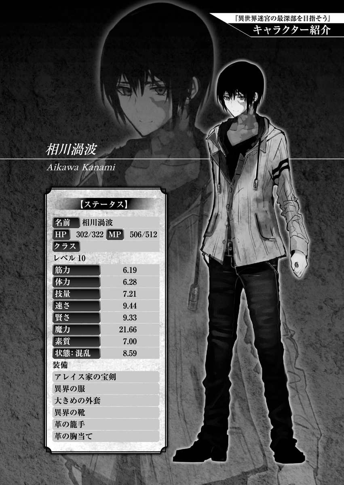

| 異世界迷宮の最深部を目指そう 1 | |
| 割内タリサ | |
| オーバーラップ (2014) | |
イラスト／鵜飼沙樹
――【召喚】お帰り、相川渦波――
夜の湖のような暗闇に白い文字が浮かぶ。
しかし、その言葉を読みきる前に、そのメッセージは闇に呑まれていく。僕は無感情にそれを見送った。
朦朧とした意識を覚醒させるには刺激が足りない。
意識を叩き起こしてくれたのは視覚でなく嗅覚だった。
痛みを感じるほどの異臭が鼻孔の中へと侵入してくる。同時に、喉からヘドロがせりあがってくるかのような不快感に襲われる。
「っ――!?」
耐え切れない刺激によって、僕は目を見開く。
視界に飛び込んできたのは、掠れた白がちりばめられた黒い壁。目を凝らすことで、それが天井であることに気づく。
身体を起こして、周囲を確認する。
石造りの回廊に寝転がっていた。光は差し込んでいないはずなのに、石の壁はぼんやりと発光している。そのおかげで、僕は周囲の情報を得ることができた。
回廊の隅に、小さな祭壇のようなものが鎮座していた。注意深く観察して、ようやく祭壇であると気づけるそれは、いまにも崩れそうなほど風化している。
苔まみれの石台の上に二本の蝋燭の残りかすがある。その隣には動物の皮らしきものが供えられており、古風な矢が突き刺さっている。
「な、なにこれ......？」
追い立てられるかのように、喉の奥から言葉が漏れる。
「意味がわからない......。気持ちが悪い......」
心臓の鼓動が大きくなる。跳ねるように速まる。
漏れた言葉通り、意味がわからない。状況を理解できない。
――確か、僕は家のベッドで寝ていたはずだ。
けれどここに暖かなベッドはなく、うるさい機械仕掛けの目覚まし時計もなく、カーテンからこぼれる朝の日差しも、電球の明かりもない。
汚れの目立つ冷たい石床。気味の悪い仄かな石の発光。鼻が潰れるかのような異臭。
全てが異常で不吉だった。
「うっ――!!」
僕は口を押さえて、吐き気が通り過ぎるのを待とうとする。
しかし、遠くからの轟音が休息を許さない。
「――ウォァアァアアアア―――ッ!!」
理性を感じさせない咆哮だった。
獣の慟哭のような殺意の振動が肌を震わせる。
「――と、遠吠え？ 待って、待って待って待って」
何が起きているのかわからない。自分の吐き出す言葉も理解できない。
混乱に振り回されるがまま、僕は聞こえてきた咆哮とは逆方向へ走り出す。
回廊を駆け抜けていく。ぼんやりと発光する石の道は非現実的で気味が悪い。何度も道を折れ曲がるが、景色は全く変わらない。全く変わらない景色に焦りながらも、ただ遠くへと僕は逃げる。
その途中、ぐちゃりと気味の悪い音が鳴った。
何か硬いものを踏み抜いた感触がして、僕はスニーカーの下を確認する。
握りこぶしほどの昆虫が、断末魔の声をあげながら潰れていた。
「う、うぁああっ!!」
その惨状を直視し、僕は悲鳴をあげる。
昆虫が苦手なわけではない。けれど、コンクリートに囲まれた都会では出遭うことのないサイズの虫に、生理的な嫌悪感を催してしまった。
死にかけの昆虫がキィキィと鳴く。まるで助けを叫んでいるかのように見えた。
僕は怖気を感じて、ふと顔を上げる。視線を次の曲がり角へと向ける。
その曲がり角から、人の大きさほどの昆虫が顔を覗かせていた。
およそ常識ではありえない大きさ。ギチギチと嫌な音をたてながら、昆虫特有の角ばった手足を動かしている。ぱっと見たところ、クワガタムシに近い。ただ、その異形の二本の角が、僕の正気を削っていく。
「――っ!!!?」
もう声をあげることもできない。あげてしまったら最後、その化け物に襲われて命を落としてしまうと思った。
踵を返し、走り出す。
振り返ることなく、足を動かし続ける。道を選ぶことも頭にはなく、ただ本能のままに化け物から距離をとった。
体力が尽きるまで走り続け、僕は速度を落としていく。そして、乱れた息を整えようとしたところで、ささやかな理性を取りもどす。
「――ウォァアァアアアッ!!」
獣の怒声が響く。
今度はもっと近い。馬鹿なことに、僕は逃げた道を戻ってしまっていた。
サーッと血の気が引いていき、身体が硬直する。
しかし、その怒声に近づいたことにより、他の音も拾えるようになっていた。
それは人の話す声だった。
「――っ、―――っ!!」
内容までは聞き取れない。しかし、僕は見えない光に誘われるかのように、その声の聞こえるほうへと歩き出していた。
僅かに回転する脳が、他人を――『人』を求めていた。
近づいていくことで獣の声も大きくなっていくが、人の話し声もはっきりと聞き取れるようになっていく。
「――距離をとれっ！ 距離をとって、時間をかせげ!!」
男が近くにいる仲間たちへ号令をかけていた。
おとぎ話のような光景だった。まず、人間たちの装いが普通じゃない。
博物館でしか見られないような革の鎧と木の弓を身につけている者。無骨な鉄の剣を力任せに振り回す者。機械的な要素のない木の杖から火を噴かせている者。
現実味のない人間たちが、回廊の途中、体長三メートルほどの巨大な狼を相手に大立ち回りを演じていた。
ただ、その戦いに飛び込めるほどの勇気が僕にはなかった。遠くで立ち止まって見続けることしかできない。
「時間をかせげば、なんとかなる！ 粘れ！」
リーダー格と思われる男が、大剣を持った戦士に指示を飛ばす。
戦士は大剣を振りかぶり、狼へ打ち下ろそうとする。狼はそれに反応して、恐ろしい速度で戦士に体当たりを行う。戦士はゴム玉が跳ねるように回廊の奥へと吹き飛ばされた。
次に狼が目をつけたのは杖を持った女性だ。それに気づいた他の人間たちは女性を守るように大きく陣形を変えていく。
「態勢を立て直せ！ 空いたところへフォローに回れ！」
それにともなって、狼から遠ざかるように大幅な移動も行われる。
その移動の結果、戦場が僕のほうへと近づいてくる。それは好機であり危険でもあった。
僕は混乱していた。そして、恐怖していた。
もし、冷静に状況を判断できていたのならば、姿を隠すこともできていただろう。
しかし、ただ呆然と立ち尽くすことしかできなかった。そして、細剣を持ったリーダー格の男と目が合う。
「――なっ!? おまえ、誰だ!?」
男はひどく驚いた顔で、僕に怒鳴りつけた。はっと我に返り、とっさに助けを求める。
「その、僕は迷って――、た、助けてくださいっ！」
僕の足はゆっくりと男のほうへと進んでいた。
発した言葉は途切れ途切れだったが、それでも意思は伝わったと信じていた。
「助けてだと？ おまえ、馬鹿か？」
――信じていたが、男の反応は氷の刃のように冷たかった。
「え？」
肯定も否定も返ってこなかった。そんな要求は論外であると言わんばかりの侮蔑が答えだった。
常時の僕だったならば気づけただろう。
この人間たちにそんな余裕がないこと。この人間たちがそんな優しさを持っていないこと。その装い、手にする凶器、猛った獣、危険でしかない状況。気づけないはずがなかった。
ただ、いまの僕にそこまでの思考力はなかった。それが明暗を分ける。
「迷宮、それも『管理領域外』にいるんだ。覚悟の上だよな、ガキ」
冷たい刃のような言葉が突き刺さる。そして、比喩ではなく細剣の冷たい刃が僕を襲う。
太ももに燃え盛るような熱が灯った。
「う、ぅあアア！！！」
斬られたことを理解して、叫びながら尻餅をつく。
「一人の同業者がいた！ 全員、下がれ！ なすりつける！」
リーダー格の男が周囲の人間たちに号令をかける。
その言葉を僕は理解できなかった。――いや、したくなかった。
杖を持った女性が僕を見て、何も言わずに隣を通り過ぎていく。
吹き飛ばされた戦士も、その他の人間たちも、冷たい目で僕を見るだけだ。全員が無言で僕の後ろへと走り去っていく。
つまり、彼らを追いかける巨大な狼は、自然と僕の目の前に躍り出るということに――
「――う、うぁ、ああアァアアァー!!」
恐怖にかられ、狼から逃げるように飛び退こうとする。しかし、斬られた太ももに激痛が走ったため、無様に転がってしまう。
直近の敵を失った狼は、最も近くにいる僕へと近づいてくる。
巨大な狼の獰猛な瞳と鋭い歯が、僕に悲惨な死をイメージさせる。
思考が氾濫する。様々な悪感情が吹き荒れる。いままでの経験が、いままでの人生が想起される。そして――
【スキル『？？？』が暴走しました】
いくらかの感情と引き換えに精神を安定させます
混乱に+1.00の補正がつきます
――正体不明の『表示』が僕の視界の端に浮かぶ。
しかし、いまはそれどころではない。その『表示』がどういったものか理解なんてできるわけがない。だが心とは裏腹に、頭は急速に冷えていく。
氾濫する思考が沈静化され、悪感情が消え去り、いまどうすればいいかだけに集中できるようになる。
鮮明になった思考が、最善手を選択する。
僕は斬られた左足を使わず、右足だけで立ち上がった。
それと同時に狼が僕へと襲いかかってくる。僕は迫りくる狼の側面へ飛び込んで逃げる。
しかし、逃げる速度が全く足りていない。すれ違い様に、右の上腕部を爪で裂かれてしまう。
痺れるような痛みに襲われるが、それを気にしている余裕はない。
そのとき、安全圏へと逃げ延びた人間たちから声が聞こえてくる。
「よし、この位置だ！ 撃て！ 道を閉ざすんだ!!」
悪寒が走る。
敵は狼だけじゃない。あの人間たちも僕の敵だということを思い出す。
冴え渡った頭が答えを出す。
――あいつら！ 僕を囮にして、逃げ出して、それでもなお足りずにっ!!
悪寒に従い、後ろへ目をやったときには、全てを覆いつくすほどの轟炎がこちらへ迫ってきていた。
狼も轟炎に気づく。しかし、遅い。僕を噛み殺そうと飛び上がっていた狼はそれを回避することができない。
当然、僕にも轟炎から逃れる術はなかった。
轟炎は僕らを中心に弾け、爆発するように全てを燃やしていく。
僕は咄嗟に両手で頭部を守った。そして、できるだけ遠くへと飛び退きつつ、地面に伏せる。
背中に炎をともなった爆風が襲いかかり、僕は吹き飛ばされる。
全身を炎が焦がしていく。まるで、全身の皮を剥がされているかのような感覚だ。
その激痛を気つけにして、僕は思考を保つ。悔しさと憎しみで気力を保つ。
吹き飛ばされ、地面にたたきつけられたあと、僕はゆっくりと目を開けて辺りを窺う。
辺り一帯を埋め尽くすほどの炎は、魔法のように一瞬で消えていた。
ただ、人間たちが逃げ出した方角には綺麗な炎の壁ができていた。
「そ、そ、ぁ――」
それがやつらの狙いだったのか、という言葉が出ない。焼けた喉は正常に震えてくれなかった。しかし、両目は正常に働いている。
石造りの回廊の中、炎によって退路は塞がれ、あとに残っていたのは巨大な狼と僕だけとなっていた。
狼も僕と同じく立ち上がる。
しかし、見るからに弱っている。
覆いかぶさるように僕へ飛びかかってきていたのが原因だろう。僕よりも炎を受けた面積が広く、被害が大きい。
狼は息を荒くして、ふらついていた。けれど、その目は爛々と輝いている。
まったく闘志は萎えておらず、「狼は傷を負ってからが恐ろしい」と言わんばかりに呻り声をあげながらこちらへと歩を進めてくる。
僕も狼と同じように覚悟を決める。
吹き飛ばされた位置が良かった。狼からは見えないだろうが、僕の背後には大剣が落ちている。おそらく、先の戦いで戦士が使っていたものだろう。虚をついてそれを使うことができれば、本当に僅かながらだが、勝算が生まれる。
狼に背中を向け、全力で走る。
踵を返す瞬間、視界の端で狼が飛びかかろうとしているのを見た。
左の太ももに激痛が走り、危険信号がけたたましく脳に響く。
それでも僕は走る。感覚が薄れてきている足で地面を無理やりに踏み抜く。
迎撃のタイミングは掴めない。狼がどう迫っているのか、予測なんてできるはずもない。
全速力で大剣を拾い、振り向き様に大剣で薙ぎ払う。
大剣は両手でも支えきれないほどに重かった。それでも力任せに、ただ一度に全てを賭けて、僕は大剣を振るう。
生々しい鈍い音と共に、狼の首に大剣が埋まっていく。
「や、やった――、ぁ、ぐぅっ！」
攻撃の成功に喜ぶ。しかし、狼は大剣を首に食いこませたまま、僕へとのしかかってきた。
かろうじて牙と爪は避けられたが、三メートルを超える巨体そのものは避けることができなかった。
信じられないほどの重みが僕の全身にかかる。胃の中身が逆流し、口から吐き出される。
狼は首が千切れかけながらも、僕を食い殺そうと動く。
大きく口を開け、僕の頭を呑み込もうとする狼。遠ざかる意識を引き戻し、身体を限界まで捻ることでかわす。そして、その反動を利用して大剣をさらに食いこませる。
「このぉおおお――――!!」
三メートルの巨体を彼方まで吹き飛ばすつもりで両手を振るう。
しかし、狼と僕の間に僅かな隙間が生まれただけだった。それでも、いまの僕にとってはこれ以上ない成果だ。僕は隙間を使って、素早く狼の下から抜け出す。
大剣を手放し距離をとり、慎重に狼の出方を窺う。
しかし、狼は僕を追撃しようとしない。
いや、身体を前へ進ませようとする意思は感じる。けれど、身体が意思に追いついていないようだ。
狼はぼろぼろだった。大量の血を流し、身体中が焼け焦げている。
しかし、油断はできない。
距離をとったまま、狼を観察し続け、そして気づく。
狼の右目は焼け、潰れていた。後ろ足には弓矢が深々と突き刺さっている。食いこんだ大剣が気道まで達しているのだろう。呼吸音が笛のような音を奏でている。
「おまえ......」
ふと言葉が勝手にこぼれた。
狼は重症の身体を引きずって、僕へと歩を進める。
僕は万全を期して、焼けた目が生んだ死角へと動き続け、姿を捉えさせない。
ほどなくして狼は倒れる。
流血が地面へ池のように溜まっていき、狼の呼吸音が細くなっていく。その呼吸音が止まった瞬間、狼は淡いエメラルドグリーンの光を放ちながら消えていった。
カランと音をたて、狼に刺さっていた大剣と矢が地面に落ちる。
「え......？」
そう。
消滅したのだ。
死体は残らなかった。幻のように消滅した。
狼の消えた跡には煌めく翠の石が転がっていた。
そして、静かに『表示』が僕の網膜に映りこむ。
【称号『深翠の始まり』を獲得しました】
Strに+0.10の補正がつきます――
◆◆◆◆◆
狼を倒したあと、慎重に周辺を調べた。
現実味のない事態に、僕は過去最高に混乱しているはずだ。けれど、不思議と冷静だった。まるで、混乱を無視しているかのように僕は淡々と動くことができた。
狼と戦った跡に落ちていたものを拾い集める。
狼に殺されたであろう死体からは、有効活用できそうなものが特にたくさん手に入った。
罪悪感はなかった。それが必要なことだということもあったが、それ以上に感覚が麻痺していた。僕は何も考えずに生きるための最善を尽くす。
この死体が持っている物資はここを生きて行く上で必須のもの――冷え切った思考が、そう答えを出していた。
奪った装備品を身につけていく。
革の手袋をつけ、外套を羽織り、革袋を腰に下げる。変わった形のナイフをジーンズのベルトに挟めるだけ挟み、片手剣を手に持つ。
奪えるだけ奪い、死体へ向かって手を合わせる。
最後に、狼が消えたところへ目をやる。
そこには狼との戦いに使用した大剣が転がっていた。
大剣を使いたいところではあるが、片手剣の二倍ほどの重さがあるそれを持ち歩くのは現実的でない。僕が気になったのは大剣ではなく、煌めく翠の石だった。
死体の持ち物の中にも、これに似た石は多かった。
現状では重いだけのものと判断している。無駄なものを持つことは命を脅かすことになるので、荷物には入れていない。
ただ、この石の色は、あの狼の毛並みによく似ていた。
頭の隅で一つの推測を立てる。荒唐無稽な話ではあるが、ある種の確信があった。ここでは化け物を倒したあとに残るものがあり、それがこの石だという推測。
感傷だった。
あの人間たちに襲われたもの同士で、妙な親近感が生まれていたのかもしれない。
僕はその石を拾い、ポケットに詰め込んだ。
「さ、どうしよう......」
できることはやった。
何らかの敵対生物が現れても、迎撃する手段はある。
次に決めるのは、ここで『待つ』か『動く』かだった。
太ももの切り傷は思ったよりも浅かった。おそらく、反射的に身体を引いていたのだろう。しかし、圧迫の止血でいくらかましになっているものの、歩くのも億劫な状態だ。
動けば出血は増していき、体力を失うのは間違いなかった。
ここで体力を失うということは命の危険に直結する。動くことに多大なリスクがともなっているのは間違いない。
ただ、じっと待つことが恐ろしいのも確かだ。
誰かが助けてくれるのを待つには、先の体験は恐ろしすぎた。
化け物たちもだが――、何より、助けを求めた人間に斬られたことが心に根付いている。
ここで人を待ったとして、僕は現れた誰かに助けてもらえるかどうか怪しい。
だから、僕は『動く』ことに決める。
「この剣を杖にして歩こうかな......」
剣をついて感触を確かめる。
あまり杖には向いていない。
「もっといいもの、いい『道具』があればなぁ......」
僕はそう言いながら、また辺りを見回して――
【Item】
Empty
――と、宙に『表示』されているのが目に映った。
「え、なに......、え？」
混乱が加速する。非現実感が加速する。乾いた嗤い声が喉から出る。
まるで網膜に張り付いたゴミのように、手の届く距離にはっきりと『表示』されている。どれだけ視界を動かしても、その『表示』はゲームのアイコンのように視界から消えない。
もう間違いない。ここではこういう『表示』が見えるのだ。
そういうものなのだ。
「は、ははっ、まるで――」
――まるで、ゲーム。
薄々は感じていた単語だった。
幻想。迷宮。モンスター。巨大昆虫。巨大狼。冒険者。剣士。弓矢。魔法使いの炎。死後の光。宝石。戦闘後のメッセージ。『表示』。アイテム。
どれもがゲームに頻出する存在だ。
色が反転するような、地面にぶら下がっているような錯覚に陥りながらも、すぐに僕はそれを認めた。
認めることで楽になるところもあった。恐怖が和らぐのなら、それでもいいと逃げたかった。夢のように視点が遠くなっていくのを感じる。
「......それならまずは、僕について。僕を『表示』してくれ」
とりあえず、適当に言葉にして望んでみる。
【Status】
Name：KanamiAikawa HP4/51 MP72/72 Class：
Level1
Str1.11 Vit1.03 Dex1.01 Agi2.02 Int4.00......――
「......わ、わかりにくい。もっと読みやすくならないのかな」
【ステータス】
名前：相川渦波 HP4/51 MP72/72 クラス：
レベル１
筋力1.11 体力1.03 技量1.01 速さ2.02 賢さ4.00 魔力2.00 素質7.00
状態：混乱1.01 出血0.52
経験値：805/100
装備：鉄の片手剣 異界の服 エルフェンの外套 革の手袋 異界の靴
呪印の入った手投げナイフ
「あ、日本語になった」
なんとなく呟いた文句に『表示』は対応した。
英字と比べると少し不格好だが、わかりやすさのほうが大切だ。僕はこの日本語表記で『ステータス』を読んでいく。
特に気になったのは先ほどの『【Item】Empty』だ。素直に受け取るのならば、いま僕は何も持っていないと認識されていることになる。
「うーん。干し肉とか水とか、ぶらさげているんだけど......」
それにもかかわらず、こうなる。
【持ち物】
なし
何度も確認したが、やはり僕は何も持っていないらしい。
「でも、大体の方向性はわかるかな......。僕、ゲーム好きだし......」
要は条件を満たしているかどうかだろう。
稚拙でゲーム的な、それも融通の利かない条件がそこにはあって、僕はそれを満たしていないのだ。
「装備品はおそらく、直結して戦いに影響するもの。いわゆるパラメーターを左右するもので......」
そして、それ以外のものは装備するべきものではないということ。つまり、身につけたり、持ったりするべきではないということ。
「無限に入る袋とか、そういうのないのかな？」
再度身につけているものを確かめる。ゲームならば、そういったものがよくある。
袋や空いているポケットに対して、色々と出し入れを繰り返してみる。
しかし、何も起こらない。
「じゃあ......」
入れ入れ入れぇー......。
念じながら、僕は何もない空間に対して干し肉をかざしてみた。冗談半分の行動だったが、ここではそれが正解だったらしい。
空間がぐにゃりと捻じ曲がり、干し肉が呑み込まれた。
「怖っ！」
僕はとっさに手を引いた。
生理的に恐怖を抱く光景だった。
「よし、『持ち物』を『表示』してくれ」
【持ち物】
干し肉
「ははっ。うん、すごくゲームだね」
嬉しさが半分に、恐怖が半分だった。
しかし、これで『持ち物』のルールが把握できた。
入れようとする意思を持って宙にかざすことで、どこかへ保管することができるのだろう。
「これでかなり楽になる......」
僕は再度死体を漁り始める。持ちきれなかったものが、まだ多く残っているのだ。
『持ち物』の他のルールを確かめながら、次々とものを宙へ放り込んでいく。
ちなみに、冒険者の死体と小さな虫は入らなかった。
理由はわからないが、何らかの条件で弾かれてしまった。
【持ち物】
干し肉 水袋 止血薬 油 痺れ針 解毒薬 鑢 オーリアの大剣 革袋 革の手袋 革靴 布の服 木の弓 鉄のナイフ 無印の矢 ライター スマートフォン 小石 枝 十位魔法石 九位魔法石
ちなみに、ライターとスマートフォンは着ていたジーンズに入っていたものだ。スマートフォンは見つけてからすぐに通信を試みたが、当然のように繋がらなかった。さらに、時間も数年ほどずれていたので、スマートフォンは何かの衝撃で故障してしまった可能性が高い。ただ、ライトや時計機能が生きていたのは不幸中の幸いだった。
「色々入る......。何より、よくわからないものに名前がついているのが助かる。けど、ゲームとして難易度が下がっているんじゃないかなこれ。いや、助かるんだけれど......」
ただの粉にしか見えなかったものに『解毒薬』と表示がされたときには自然と頬が緩んだ。
「よーし。もっと色々と試そ――」
「――ッウァガアアァア―――――!!」
本腰を入れて試そうと考えたとき、回廊に獣の咆哮が響く。
「――た、試すのは後にしよう」
都合の良いことばかりが続いていたため、失念していた。未だに僕は危険の真っ只中にいるのだ。
とりあえず『止血薬』を使用して（使い方がわからなかったので、水洗いした傷口に塗りたくった）、剣を杖にして咆哮から遠ざかるべく歩き出す。
身体へ負担をかけないように、注意深くあたりを窺いながら回廊を進んでいく。
『ステータス』を確認すると、出血が緩和されＨＰも自然回復していた。
命の危機が遠ざかったのを感じて、僕は少しだけ余裕を手に入れる。
その余裕を使って、僕は色々と実験を行う。
ものの出し入れは足を止めなければ行えないが、他のことを試すことは歩きながらでもできる。僕は思い当たる単語を呟きながら歩く。
「ステータス、ヘルプ、マップ、セーブ、ログ、チャット、ログアウト、ログイン、スキル――」
新しく『表示』されるものはないかと思い、手当たり次第にゲームの単語を口にしていく。
一番表示してほしい『ヘルプ』に反応はなかった。あとオンラインゲームにあるような『ログ』や『チャット』に関しても全く反応がない。
反応があったのは『スキル』――
【スキル】
先天スキル：剣術1.01 氷結魔法2.00
後天スキル：次元魔法5.00
？？？：？？？
？？？：？？？
『？？？』と表示されたものが二つあった。ここにきて、このシステムを考案したやつは出し惜しみしているようだった。
そして、普通に『魔法』が並んでいることに驚く。
いつの間にか、僕は魔法使いになっていたようだ。僕は嬉々として、『魔法』『マジック』の単語を思い浮かべて『表示』させる。
【魔法】
氷結魔法：フリーズ1.00 アイス1.00
次元魔法：ディメンション1.00
何もない覚悟はあった。けれど、助かることに魔法は三つも存在していた。魔法が使えることに、小躍りしたい気持ちになる。なぜ魔法が使えるのかはわからないが、使えるものは使おうと思う。ゲーム的に考えれば、初期スキルがいくつかあるのはおかしいことじゃない。
――ゲーム的に考えれば、だけど......。
思考が泥沼にはまれば狂いそうになる。首を振って思考を押しとどめ、試し撃ちを始める。
それがいま僕にできる最善だ。
「えーっと、出ろっ！ 氷結魔法《アイス》！」
叫びと共に、僕は手をかざした。期待するのは氷のつぶてが手から飛んでいくイメージ。
魔法を唱えたあと、何かが抜けていく感覚に襲われる。そして、手のひらが冷たくなっていき、正体不明の何かが集まっていくのを感じる。
確かに集まっているのだが――、あまりにも遅い。
おそらく、空気中の水分が集まり、分子運動を静まらせることで熱を奪い、氷を生成していっているのだろう。
しかし、十秒ほどかけて生まれた氷は手のひらサイズだった。もちろん、飛んでいってなどしていない。どう見ても攻撃手段にはなりえそうになかった。
「......え、こんなものなの？」
魔法とは一体......、うごごごご......。
これは生活魔法とやらにでもあたるのだろうか。これまでの流れから、大型の昆虫や動物への対抗手段になるような派手なものを期待していたので、僕は残念でならなかった。
ただ、氷がせっかくできたので『持ち物』から衣服を取り出し、綺麗なところを切りだして氷のうを作ってみた。作ってみたが、火傷痕にあてたところ鈍痛が発生したのですぐに捨てた。
氷結魔法《アイス》。正直、何の役にも立たなかった。
続いて、《フリーズ》の試し撃ちも行う。しかし、これも似たような結果に終わる。緩やかに僕の周囲の温度が下がっていくという、微妙な魔法効果だった。
最後の魔法《ディメンション》に関しては大いに悩んだ。確か、ディメンションという言葉の意味は、寸法や次元といった意味だった気がする。自信はない。けど、先ほどの氷結魔法の前例から、それに関した効果が現れると推測することはできる。
もしかしたら、ワープゾーンでも現れてこの迷宮から出られるかもしれないと思ったが、この状況を完全に打破できるような魔法があるとは考えにくいことだった。結局、効果を明確に想像できないため、安全策として使用を控えることにした。
下手したら、ブラックホールでも出てきそうで怖い。
しかし、せっかくなので違う魔法も色々と想像してみる。
「回復魔法、白魔法、魔法取得、新しい、新魔法、応急手当て、火傷、治す――」
残念ながら、全くヒットしなかった。
どうにかして回復する魔法が欲しかったのだが、どうも僕にはそういったものは用意されていないらしい。
ただその途中、面白い『表示』が現れる。
【スキルポイントの割り振り】
剣術1.01 氷結魔法2.00 次元魔法5.00
現在のスキルポイントは０です
ゼロらしいです。
おそらく、レベルの上昇と共に増えるのだろう。
【レベルアップメニュー】
805/100
条件を満たしています
レベルについて考えると、このような『表示』が見えた。
しかし、「条件を満たしています」という表記には嫌な予感がする。
自動レベルアップではなく、任意レベルアップである可能性が高い。そして、その方法がシビアな可能性もある。
とりあえず、早めに任意レベルアップの方法を探そうと思う。
「できるなら、レベルアップをお願――痛っ！」
突然、右腕に熱が灯り、声をあげてしまう。
ふと目線をずらすと、上腕部が切り裂かれ、出血していた。
「――どこから!?」
周囲を見回すと、視界の隅に動くものを捉える。
それは歪みだった。宙にバスケットボールほどの『歪み』が浮き、小さな羽音と共に揺らめいている。よく観察すると、その『歪み』のシルエットは虫に近かった。
「モンスター!?」
すぐに思考を切り替える。
日常生活を行っているときの思考が、ゲームをしているときの思考へと塗りつぶされていく。麻痺している感覚が、ゲーム的な効率に特化されていく。
それは普通でないからこそ、『ここ』だからこそできる芸当だった。
僕は『歪み』を狙って、手に持った剣を下から斬り上げる。しかし、それはすんでのところで避けられてしまう。
避けられたことを確認した僕はすぐに駆け出す。来た道を戻るように、『歪み』から距離をとる。
一撃目をかわされた場合、もしくは耐えられた場合、そのときは絶対に無理をしないと、『動く』前に僕は決めていた。
未開の道ではなく、一度通った道を僕は戻っていく。
羽音が追いかけてくるのが聞こえる。その音を頼りに、僕は冷静に敵との距離を測る。
方角は真後ろだ。僕を追いかけているのだから当然だろう。
ならば、あとはタイミングだけ。いまある材料で反撃できる。
頭の中で反撃の作戦を固めていく。ゲームだから駄目だと言われるかもしれないが、その作戦を試す価値はあると思った。
『歪み』が近づいてきたところで、『持ち物』から水の入った革袋を取り出し、中身全てを後方にぶちまける。
羽音が乱れ、金切り声が響く。
作戦は有効のようだった。
羽を持った生物ならば水に弱い可能性が高いと踏み、水による攻撃を選択したのだ。ゲームの虫だから、ゲームの戦闘だから、そういった理由で通用しないということもなかった。水滴によって『歪み』の輪郭が見え始め、さらには速度も落ちていた。
僕はそれを確認したあと、魔法を放つ。
「氷結魔法《フリーズ》」
温度を下げるだけの魔法だが、『歪み』は温度差に弱い可能性もある。この魔法を使って遠距離で仕留められるのなら、それが最善だ。
「......凍れとまでは言わないけど、落ちてくれないかな」
目に見えて『歪み』の動きは弱々しくなる。
悪あがきのように僕のほうへと飛ぼうとするが、僕まで辿りつくことはできない。
僕はそれを『注視』し、何も見逃さないようにする。最後まで油断は禁物だ。
【モンスター】ダークリングフライ：ランク２
『注視』に反応して、『表示』が発生した。
『表示』は『歪み』を指して、その情報を記す。
――これはひどい。
おそらく、このダークリングフライさんは姿を消すことを武器にしたモンスターだろう。にもかかわらず、『表示』は遠慮なく、モンスターはここにいますよと指し続けている。
もはや、攻撃を受ける要素はなくなった。時間が経てば経つほど、動きが鈍くなっていくダークリングフライ。弱りきったところを狙って、剣で叩き落とす。
地面へ落ちたダークリングフライは光と共に消え去り、くすんだ透明の石だけが残った。
ちなみに、そのくすんだ透明の石は『十位魔法石』と『表示』されていた。経験値の変動も確認する。それらを総合することで、ダークリングフライが下位のモンスターであるとわかった。
「ランク２のモンスターに道具やＭＰを使うのはもったいなかったかな......？」
残りＭＰは68になっていた。まだまだ残ってはいるが、無駄遣いすればどうなるかはわからない。
僕は戻った道を進み直し、未開の回廊を歩く。
歩きながら、先ほど中断させられたレベルアップについて再確認する。
色々と試行錯誤してみたものの、結局はレベルアップできず、レベル１のままだ。
レベルアップをするためには何らかの特殊な条件を満たす必要があるようだ。経験値だけが過剰に溜まっているので、とても歯痒い気持ちになる。
そして、先ほどの戦闘を思い返す。
視認の難しいモンスターによる奇襲。これがランク２ではなく、もっとランクの高いモンスターだったならば、命を落としていた可能性がある。
『表示』に関して試すのは安全を確保してからのほうがよさそうだ。注意が散漫になって不意をつかれてしまっては元も子もない。
そう考えながら歩いていると、遠くから物音が聞こえてくる。
進む方角の先に巨大な昆虫が待ち構えていた。
そいつは僕がここに来て、最初に出遭ったモンスターだった。異形の二本の角が特徴的な巨大昆虫モンスターだ。
【モンスター】リッパービードル：ランク３
名前から攻撃手段を予想できそうだが、先入観を持って動かないほうがよさそうだ。僕は何が起こっても対応できるように中腰となる。
リッパービードルもこちらに気づいている。じりじりと慎重に距離を詰めてくる。
ランク３ということだが、どれほどの危険を隠しているかはわからない。
ある程度の距離が詰まったところで、リッパービードルは唐突に突進してくる。しかし、先ほどの巨大狼と比べると段違いに遅い。僕はすれ違いざまに剣を振り抜く。
「っせい！」
鉄と鉄が打ち合ったような音が響き、剣は弾かれる。
斬った箇所も悪かったのかもしれない。けれど、こんなにも重い刃物が弾かれるとは予想外だった。格好つけて「っせい！」とか言ってみたものの、色んな意味で歯が立たない。
ただ動きに関してはさほど問題はない。あの巨大狼やダークリングフライよりも遅い。僕は頭の隅で考えていた別のプランを実行するため、『持ち物』から道具を取り出す。
リッパービードルは突進を繰り返すだけだった。
僕は余裕を持って突進を避けていく。一度目は避けざまに油をリッパービードルに浴びせ、二度目でライターを使って火を点ける。
火を点けるのは何度か挑戦しなければならないと思ったが、運良く一度で成功してくれた。リッパービードルは火達磨になって、のたうちまわり始める。
「う、うわぁ......」
なかなか凄惨な光景だった。
リッパービードルは高温により関節が抜け、手足が外れていく。
すぐに動かなくなったので、剣で色んなところを突いてみる。いくらか突いたところでリッパービードルは光となって消えた。同時にぽとりと黒い石が落ちる。
落ちた黒い石は『黒蟲石』と『表示』された。いままでの『魔法石』と違い、少し特殊に見える。
僕は手のひらの上で黒い石を『注視』し、よく観察する。
【黒蟲石】
通常の魔法石とは違い、虫属性の魔力で構成された魔法石
虫のモンスターからならば、どのモンスターからでもドロップする
しょ、詳細が出てしまった......。
便利すぎる。
すぐに僕は詳細不明だったものたちを調べていく。
まずは装備できる品からだ。
『エルフェンの外套』や『オーリアの大剣』といった名前が長いものには、どうやらちょっとした特殊効果がついているようだった。『エルフェンの外套』は高温や低温から身を守り、『オーリアの大剣』は自分より格上の相手と戦う場合に真価を発揮するらしい。まるで魔法のアイテムだ。
ご丁寧なことに攻撃力や防御力までも設定されてあった。その数値がどれほどの影響を及ぼすかはわからないが、詳細を見ることは重要なようだ。
そして、最も気になっていた魔法の詳細を見る。
【ディメンション】
消費MP1
次元魔法の基礎。術者の力量に応じて、空間把握を補助する
単なる補助魔法のようだ。
願わくばワープのような魔法で元の世界に戻ることができればよかったが、そこまで都合よくはない。
「次元魔法《ディメンション》」
とりあえず、どういったものかを確認してみる。
魔法名を告げた途端、五感が研ぎ澄まされていく。さらに、第六感と呼ぶべき何かが周囲へ広がっていく。そして、半径十メートルほどの空間を、はっきりと認識できるようになる。見えない曲がり角の先の情報まで拾えるのだから驚きだ。
「......こ、これはいい」
『表示』によって様々なアドバンテージを得てきた僕だが、この魔法が最も素晴らしいものであると瞬時に理解する。
策敵能力を得たことが何よりも助かる。命の危険がぐっと下がっていくのを感じる。
僕は《ディメンション》の効果時間を計りつつ、その異様に優れた策敵能力を駆使して、モンスターを避けて道を進んでいく。
ときには拾い物をしながら、ときには新たなるシステムを試しながら歩く。
《ディメンション》が働いているときに不意を突かれることはなかった。効果の及ぼす領域内ならば、モンスターを見逃すことは絶対になかったからだ。
これまでの何倍ものスピードで、迷宮を進んでいく。
自然と表情は明るくなり、足取りも軽くなる。
魔法《ディメンション》の力は絶大だった。しかし、それは僕の油断を生む要素でもあった。
僕は圧倒的に有利な魔法を手に入れて浮かれてしまった。
このゲーム的な迷宮について考え抜き、最善を実行していると過信してしまった。
――事態が悪化したのは歩き始めて三十分を過ぎた頃だった。
◆◆◆◆◆
暑くもないのに汗が滴る。不自然に息がきれる。
手足は鉛のように重く、視界が海の上のように揺れる。
その全てが、状態異常『毒』の症状だ。
《ディメンション》を使い始めて十五分ほど経ったとき、ランク１モンスターとの戦いが発生した。
全てのモンスターを避けていた僕だったが、偶然にも動かないモンスターを発見してしまった。《ディメンション》を使用していなければわからないであろう瓦礫の下で、微動だにしない大きめの蛙。そのモンスターはランク１であり、見たところ眠っているようにしか見えなかった。
名前もビッグフロッグと単純だったため、危険もなく経験値稼ぎができると思い、僕は剣を使って蛙を潰した。
ビッグフロッグ自体はその一撃で絶命したのだが、その体液が身体に付着してしまった。
ここで重要なのは僕の身体はボロボロで、傷口が身体の至るところにあったということだ。
その傷口にビッグフロッグの体液が入りこみ、僕は『状態：毒』に陥ってしまう。
ステータスで毒を確認した僕は青褪め、すぐに道具から解毒薬を使用した。
しかし、毒は解除されなかった。
残りの解毒薬の詳細を確認して事態の深刻さに気づく。
【解毒薬】
一般的な解毒薬。『ポイズンビー』の毒攻撃に対して調合されている
それ以外の毒に対しては５％の確率で解毒が成功する
解毒薬にも種類があるらしい。
つまり、『表示』通りならば、僕の毒が治る確率は五パーセントしかなかったということだ。
案の定、その五パーセントに当たることなく、全ての解毒薬を使い切ってしまう。
「解毒薬がなくなった......。や、やばい、やばいやばい......！」
《ディメンション》のおかげで取り戻していた余裕がなくなる。
大量の発汗と目減りしていく体力。
《アイス》の氷を口に含んで、水分を補給してみるものの、システム上のＨＰが回復することはなかった。
堪らず、もう一度ステータスを確認する。
【ステータス】
名前：相川渦波 HP17/51 MP61/72 クラス：
レベル１
筋力1.11 体力1.03 技量1.01 速さ2.02 賢さ4.00 魔力2.01 素質7.00
状態：混乱1.09 出血0.21 毒1.00
一時期は30近くまで自然回復していたＨＰが、いまや17である。
数分ごとに１ずつ命を削っていく毒は、現実的な体力だけでなく、焦燥感で精神も削っていく。
「はぁっ、はぁっ、はあっ......！」
息が荒れ、意識がぼやけていく。
このままでは死んでしまう。
僕は頭の隅で解決方法を探す。
案だけならばいくつかあるが、成功確率はどれも低い。
取捨選択を重ね、僕は案を決める。余っているＭＰを犠牲にして《ディメンション》をより強く使用する。
これは《アイス》で水分補給をしていた際に確認を終えている方法だ。同じ魔法でも、こめた力の強弱やＭＰの消費量で効果が変わるのだ。
「――次元魔法っ、《ディメンション》！」
何倍にも膨れ上がっていく知覚範囲。それはまるで、いくつもの遠隔操作のカメラが回廊を駆け巡る感覚。
特徴的なモンスターたちが迷宮に溢れる中、僕は解決策へ繋がるものだけに意識を割いていく。
知覚範囲が五十倍まで拡がったあたりで、回廊に大きな違いのあるエリアを見つける。
その回廊は整備されていた。床は均され、鉱物でコーティングされている。一定間隔毎に明かりが設置されていて、まるで人工の道のようだった。
そのエリアを中心に、さらに僕は感覚を拡げる。
そして、整備された道を数組の人間たちが歩いているのを見つける。
そこで僕は一旦《ディメンション》を打ち切る。
残りのＭＰは一桁まで消耗されていた。
【ステータス】
名前：相川渦波 HP16/51 MP9/72 クラス：
「っぷはぁ！ はぁ、はぁはぁ......！」
人を見つけた。
しかも、人と人がすれ違っても揉め事になっていなかった。
僕が襲われたときの会話内容を思い出す。「迷宮、それも『管理領域外』に――」、そう言われた。つまり、いま歩いている道は『管理領域外』だから争いが起きて、あの整備された道は『管理領域内』だから争いが起きない。その可能性は十分に高いと思う。というよりも、その可能性に賭けるしかない。
「最低限の《ディメンション》で、あの道まで一気に行く......！」
僕は整備された道へと方角だけを頼りにして向かう。
目減りしていくＨＰを確認することも止め、ただ人を探して歩き続ける。
僕が解毒薬を手に入れたのは死体からだ。
貰うにしても、奪うにしても、まず人と会わないことには何も始まらない。
目を血走らせながら、意識を手放さないように無心で足を動かした。
幸い、モンスターと遭遇することなく、整備された道まで一直線に辿りつく。けれど、すぐに人間たちへ声をかけるような真似はしない。
整備された道を用心深く観察し、《ディメンション》を使って物陰から人間たちの様子を窺う。
声をかけたと同時に斬りかかられたくはない。
まず、一番近くに居た男三人組の会話を、なけなしのＭＰを使って《ディメンション》で盗み聞く。これで残りＭＰは４となる。
「――なあ、今日は七層まで進んでみようぜ？」
「いいね。最近、調子が良いからな。そのくらいまで行ったほうが儲けは出るだろう」
「俺も賛成だ。そろそろ迷宮探索の範囲を広げるべきだと思っていたところだ――」
男たちは道を歩きながら、気軽に話し合っている。
会話の内容から、この三人の男たちが迷宮で儲けを出していることがわかる。
どの男たちも堅気の者には見えない。僕の世界ならば、ヤのつく仕事でもやってそうなコワモテの風貌をしている。
話しかけにくいと思った。
望ましいのは一対一の対話だ。欲を言えば、年下、女性、お人好しに見える外見、いずれかに当てはまる人がいい。
しかし、高望みばかりしていて死んでは意味がない。
いまこのときも毒によってＨＰは減っているのだ。
僕は最後のＭＰを使い（とは言ってもＭＰを０にするのは怖いので１だけは残す）、《ディメンション》で条件に近い者を探すことにする。
ざっと周囲二百メートルを策敵して、見つけられた集団は四つ。ゲーム的に言えばパーティーが四つだ。
まず、先ほどの男三人組。次に、男女混成のバラバラな装いの五人組。そして、銀鎧で身を固めた四人組。最後に、女性の二人組――
僕は迷いなく、女性の二人組と接触することに決める。
物静かで優しそうな二人組だった。もしかしたら、話し合いで助けてもらえるかもしれない。
ただ、途中で男女混成の五人組と銀鎧の集団を挟んでいるので、このまま物陰でやり過ごさなければならない。
息を潜めて、時が過ぎるのを待つ。
そして、一番安全そうな女性たちが現れるまで隠れ続け――たかったのだが、
「――おい。そこに身を潜めている者、出てくるがいい」
銀鎧の集団にあっさりと隠れていることを看破されてしまう。
男女混成の五人組には見つからなかったが、銀鎧の集団は死角にいる僕のことがわかるようだった。
声をかけられ、心臓が跳ねる。しかし、優先順位としては二番目になっていた集団だ。
気を持ち直し、会話を頭の中で組み立てる。
僕は片手剣を物陰に置いて、整備された道へと慎重に出る。
「ふむ、ただの物盗りか？」
背の高い男が、何でもないように問いかけてくる。
銀鎧で身を包んだ四人は、いままで出会った人間と違い裕福そうに見えた。
ただ、四人のうち一人だけが少女であり、僕の目を引いた。年の頃は自分と同じほどに見え、背も近い。そして、恐ろしく......、そう、恐ろしいほど美しい。白銀が流れているかのような輝く長髪に、人形にも再現ができそうにない整った顔の作り――
すぐに少女から目を逸らす。彼女はその身に纏う非現実感をもって、僕の現実感を奪っていくからだ。
僕は他の男へ声をかけることに決める。最も背が高くて誠実そうな男に目をつける。
「僕は物盗りじゃありません。体調が優れなかったので、休んでいました」
「それならば、『正道』で休めばいいだろう。すぐわかる嘘をつくんじゃない」
男は僕の話を否定する。その声から少しばかりの怒気を感じる。
どうやら、この整備された道は『正道』と呼ばれ、休むのに適しているらしい。警戒に警戒を重ねて、整備された道へ入らなかったことが逆に仇となってしまった。
初手で間違ってしまい、血の気が引いていくのがわかる。
「せ、『正道』で休めない理由がありました。害意はありません。信じてください」
嘘は逆効果と判断して、真摯に訴える方針を取る。
誠実そうな彼は、隠れていたことよりも嘘をついたことを怒っているように見える。見た目通りの相手であるならば、それに合わせたほうがいい。
「ふむ。確かに、待ち伏せするにしても一人ではな」
僕の必死な訴えを聞き、男は顔を少し和らげた。
他の男たちもそれにならう。
「子供一人です。何にしろ、問題ありません」
「大方、迷い込んだか、無謀にも挑んだか。もしくは、荷物持ちで手伝っていたパーティーが全滅して、一人だけになったのだろう」
勝手に都合良く解釈していく男たち。
そもそも、ボロボロの僕一人では大した脅威と見なされていなかったようだ。
僕はできるだけ事が大きくならないようにその様子を見守る。
「あまり子供を怖がらせてはいけません。我らの騎士道に反します」
「うるさいな、ハイン。いまは細心の注意を払うべきだろう？ 私は義務として確認を取っただけだ。どうだ、仕事熱心だろ？」
少しばかりおどけた空気が出てくる。
『騎士道』という言葉が聞こえ、この人たちはお人好しに当たる部類ではないかと思案する。裕福そうな出で立ちから余裕も窺える。賭けに出るのならば今かもしれない。
僕は意を決して、毒について相談をしようとする。
「あ、あの、実は――」
「――あなた、面白そうですね」
しかし、その言葉は少女の声によって遮られてしまう。
いつの間にか、あの恐ろしいほど美しい少女が僕の傍に立っていた。
そして、その幻想的な黄金の瞳で僕を捉えていた。余りにも美しすぎて、僕の色々なものを削っていく恐ろしい瞳だ。
男たちは少女の突然の行動に驚き、声をかける。
「え、えっと、お嬢様、何か要望でも......？」
「あぁ、すみません。大したことじゃありません」
少女はそう言いながら、なおも僕へと近づいてきている。
大声をあげたかった。僕に近寄るんじゃないと叫びたかった。
しかし、喉は乾いて、張り付いて、言葉にならない。
「ちょ、ちょっと待ってください。他の探索者との接触は控えてください！」
男の一人が声を荒らげる。
「少しくらい、いいじゃないですか。他の何も触らせてくれないんですから、探索者さんとちょっとお話しぐらいさせてください」
「それはそうですが......」
少女の言葉に男たちも納得するものがあるのか、反論が途絶える。
男三人を黙らせた少女は、顔と顔がくっつきそうな距離まで近寄ってくる。
「あなた、本当に面白いです――」
そして、少女は僕にだけ聞こえるように囁く。
「――面白い。うらやましいくらい。本当に、本当に、妬ましいくらい」
囁きは僕だけにしか聞こえない。
その透き通った小さな声は、僕の背筋を凍らせる。
少女は整った綺麗な眉をひそめている。その物欲しげな表情から、本気で僕を妬んでいることがわかる。
角度的に僕しかそれを確認できない。ゆえに、男たちはそれを見守っているだけだった。
「いいな、いいなあ、いいなぁいいなぁいいなぁ――」
呪うかのように少女は囁き続ける。
その可愛らしい唇から呪詛が呟かれ続けることに、僕は耐えることしかできない。
「どうかしましたか？ それとも、『その目』で何か見えました？」
痺れを切らした一人の男が問いかける。
それを機に、少女の顔がスッと切り替わる。先ほどまでの狂気的な嫉妬は消え、人形のような無表情となる。
そして、少女は笑顔を作って、男たちのほうへと振り向いた。
「ええ、そんなところです」
さっきまでの呪詛なんて嘘のように、無邪気な声をあげる少女。
「そうでしたか。で、彼は何か面白そうなスキルでも持っているので？」
「いえ、そうではありません。どうも、この方、毒にかかり体力も少ないようです。回復魔法をかけてあげようかと思いまして」
思いもしない話に、僕は「え？」と声を漏らした。
まるで日に照らされたかのように、凍りついていた身体に血が巡っていく。
「ああ、なるほど。そういうことでしたか」
「じゃあ、すごーく優しい私は、人助けをしますねー」
そう言って少女は僕のほうへと向き直り、魔法を詠唱し始める。
「『撫でる陽光に謡え』、『梳く水は幻に、還らずの血』、『天と地を翳せ』――」
ふわふわと純白の光が少女の手から溢れ出し、僕の身体を包んでいく。
それと共に、身体にまとわりついていた倦怠感や痛みが和らいでいく。いままでの出来事が嘘だったかのように、身体が軽くなっていく。
その魔法を僕は見守ることしかできない。回復魔法とやらをかけてくれているという話である以上、抵抗する理由はない。
「――《キュアフール》。っはい、終わり」
少女は光の噴出を終わらせ、僕に笑顔を向けた。
その笑顔に妬みの感情は一切ないように見える。
そして、少女は「どれどれ」と僕の様子をさらに窺ってくる。
「ふーん、へー、ほー。その『混乱』、バッドステータスじゃないんですね。本当に面白いです。あっ、あと火傷は処置が遅かったので痕が残りますから」
少女は感心したように頷いている。そして、当然のように『混乱』と言った。
僕はステータスを確認する。
【ステータス】
名前：相川渦波 HP51/51 MP1/72 クラス：
レベル１
筋力1.12 体力1.03 技量1.02 速さ2.02 賢さ4.00 魔力2.01 素質7.00
状態：混乱1.00――
『出血』と『毒』が消えて、『混乱』が残っている。
少女もこの『表示』が見えているのだろうか？
同じものではないかもしれないが、少なくともこの『混乱』をなんらかの形で知覚しているのは確かだ。
少女は薄く笑い、僕だけに聞こえるように、まとわりつくような馴れ馴れしさで喋る。
「また会おうね、アイカワ・カナミ。あ、私の名前はラスティアラだから。覚えてね」
「お嬢様、何かありました？」
男たちは回復魔法が終えたのを確認して近づいてくる。
「いいえ、なんでも。ああ、人助けは気持ちいいですね。さあ、奥へと行きましょう、時間もありません」
ラスティアラと名乗った少女は敬語に戻り、これ以上話すことはないと言わんばかりに僕から離れる。僕はとっさに声を出す。
「あ、ありがとうございました......」
「いいんですよ、いつか返してもらいますから」
ラスティアラは獲物を狙う肉食獣のような笑みで応える。
もちろん、その顔は僕にしか見えない角度だ。
「坊主、またな。気をつけろよ」
「まっすぐ帰ることです」
「違いない」
他の男たちも笑みで応える。男たちからはラスティアラのような狂気を感じない。弱きものを守ったことに対する安心感や達成感からの笑顔だ。
僕はできるだけ早く、ラスティアラから離れようとする。
「はい、助かりました。それではみなさん、また」
そう言って僕は整備された道――『正道』を男たちの進む方向とは逆へ進む。それを見届ける男たちは疑問なく手を振っていた。おそらく、こちらが出口で正解なのだろう。
愛想笑いを浮かべて応え、銀鎧の集団から離れていく。
正確には、ラスティアラという少女から逃げていく。
少女は別れの際もずっと僕だけを見ていた。背中を這う寒気は、別れたあとも消えてくれはしなかった。
早足で遠ざかりながら思う。
結果だけ見れば、ただのお人好しの集まりだった。
一度目は足を斬られて囮にされたため、その想いはより強い。ただ、主にラスティアラとかいう少女のせいで、言いようのない不安が残ってしまっている。
お人好したちの話に従い、僕は『正道』を堂々と歩くことにした。
すぐに女性二人組とすれ違うが、特に声をかけられることもなかった。
出口がこっちで合っているかを聞こうと思ったが、何とか踏みとどまった。人がこちらから流れているのは確かだ。
道中、色々な集団とすれ違う。
いくらか値踏みするような目で見てくる人もいたが、これといった問題は起きなかった。
そして、『正道』を数十分ほど進んだ結果、ようやく僕は出口へと辿りつく。
「やった、やった......！」
目を焼くような日差し、穏やかな陽気を運ぶ風、迷宮内とは比べものにならない澄んだ匂い。
地上へ生還したと実感する。
身体全体で喜びを表していると、綺麗に身を整えた男が声をかけてきた。
「おいおい、オーバーだな」
男はフレンドリーな様子で笑っていた。だが、凶器を――剣を腰に下げているのを見て、僕は身を硬直させる。
男から敵意は感じない。直立で出口の前に立っていたところを見ると警備兵の可能性が高い。服も警備する者に相応しいフォーマルなものだ。
思考に氷を落として浮かれていた感情を抑える。そして、ゆっくりと男と話し始める。
「ええ、かなり苦労したので......」
当たり障りのない言葉を選んで様子を見る。
「ふーん、確かに見たところボロボロだな。この時間帯なら、ギリギリだが水道が使えるぞ」
男はそう言って親指で遠くを指す。
「ありがとうございます。行って来ますね」
『水道』という言葉を聞き、内心で大喜びしながら頭を下げた。
「いいよ、これが仕事だからな」
男の指し示す方角へと歩きだす。
いまの会話を彼は仕事だと言った。公的な仕事かどうかはわからないが、僕の助けになってくれる可能性は高そうだ。
ある程度歩くと、そこには井戸があった。
想像していた現代的なものと違ったので落胆する。けど、助かるのは間違いない。
僕の世界の井戸と同じ仕組みだったので水を汲むのに手間取らなかった。
水を『持ち物』の中にある空の革袋へと補充する。次に衣服を洗う。濡れた布で泥をぬぐうことで、ある程度は綺麗になったと思う。刃物は水洗いでいいのか迷ったが、匂いが気になるので水ですすいだ。
洗いながら、僕は先ほどの男について考えていた。
人通りもあまりないため、他の人に聞かれる危険も少ないだろう。人相も人柄も悪くない。早急に情報を得たいならば、好条件な人物だ。
僕は会話のシミュレーションを繰り返したあと、自然を装って男へと近づく。
「いやあ、いくらかましになりました。すごく助かりました」
「ああ、水道があるのは迷宮の入り口の中じゃ、この北の『フーズヤーズ』だけだからな」
「......へえ、そうなんですか。他のところにはないんですか？」
「ああ、騎士国家さまさまだな。迷宮に張り付いている五国の中じゃあ一番金があるだろうからな」
うーん。普通に聞いたことのない言葉が飛び交う。
正直なところ、僕は現代の事を――つまり、元の世界のことを話したい。けれど、もう『魔法』なんてものが飛び交っているのがわかっている世界だ。望みは薄いし、不審に思われるだけだろう。まだ何もかもを賭ける段階ではない。
僕は知っている振りをして情報を引き出すことにする。
「『フーズヤーズ』って、他にもお金がかかっていたりするんですか？」
「そうだな。迷宮のために造られた専用の施設で一杯だ。なんだ、坊主。こっちの国は今回が初めてなのか？」
「ええ、そんなところです」
「最近は五国の行き来が楽だからな」
「ですので、この国のことをよく知れる場所があれば教えてくれませんか？」
「そうだな。ならまずはここから真っ直ぐ進んで中央広場へ行くといい。看板地図がある。そこから国立図書館か仲介所にでも行って調べるといいぞ。慣れたらギルドや教会にでも行けばいい」
「なるほど。ありがとうございます」
深く頭を下げて礼を言う。
「いいよ、仕事だしな」
気恥ずかしそうに頬をかきながら男は礼はいらないと言う。
これ以上の会話の引き延ばしはできなさそうだ。仕事と言いながら色々と世話を焼いてくれるこの男とはまた話す機会があるかもしれない。不審がられないうちに別れるとしよう。
「では、また」
「ああ、またな」
軽く手を振ったあと、僕は真っ直ぐ中央広場を目指した。
ある程度歩いて振り向くと、迷宮の全容が見えてくる。
迷宮の正体は巨大で奇怪な遺跡だった。
その中央には天を貫く巨木がそびえ立ち、根元に古びた建造物がくっついている。不気味にも巨木の枝には濁った宝石の装飾がなされ、遠目だと七色の花を咲かせているように見える。その装飾は余りにも巨大で歪だった。もしかしたら、その不自然な装飾の中には空間があり、そこも迷宮になっているのかもしれない。
空想の中にしか存在しないであろう存在を前に、僕は圧倒される。
その巨大な迷宮は意思を持っていて、僕を見下ろしているような気がした。そんな厳かな重圧を感じる。
そして、同時に不思議な親近感もあった。
この迷宮をずっと前から僕は知っていて、これから先もずっと付き合っていくのが決まっているかのような、妙な予感――
首を振って、その感覚を振り切る。
迷宮に背を向けて、僕は歩き出す。そうしなければ、もう一度迷宮に呑み込まれるような気がした。
迷宮から脱出できた喜びを噛み締めながら、僕は早足で迷宮から離れていく。
見たことのない世界だが、道に迷うことはなかった。
道が異様に整っているのだ。人間たちの古風な装いからは考えられないほどに綺麗で、計算し尽くされている。道の端々には宝石と思われる綺麗な鉱物で線引きがされていた。迷宮の『正道』もそうだったが、宝石の線が途切れることなく延びている。
この異世界で宝石は貴重なものではないのかもしれない。
そんな幻想的な道を歩き続けていると、建ち並んだ家屋が見えてくる。
木やレンガで造られた多種多様な家屋たち。街の景観は王道ＲＰＧゲームそのものにしか見えなかった。文化の傾向は西洋に偏り、時代は中世ぐらいのように感じる。
街を歩く人々には活気があった。そして、人々も多種多様だった。スモックのように布を着ているだけの人もいれば、鋼鉄の重装備をガシャガシャと鳴らして歩く人もいる。様々な肌の色の人が溢れ、たまに獣のような姿をした人もいる。いわゆる、半人半獣というやつだろう。鋭い牙を剥き出しにしている者、横に長い耳を持っている者、ふさふさの尻尾や美しい羽を持っている者、街は幻想的な人種の坩堝となっていた。
常識と非常識がぐちゃぐちゃと音をたてながらミキサーにかかっていく気がした。
同時に、ゴリゴリと大切なものが削れる音も聞こえる。
こんなにも人が多いのに、誰もいないような感覚。こんなにも空は広いのに、襲いかかってくる閉塞感。圧倒的な孤独感に襲われる。幼い頃デパートで迷子になったときのような、この世の終わりのような絶望。
間違いなく、ここは僕の居た世界ではない。いま見えている光景は、その無慈悲な事実を僕に突きつけている。
頭がくらくらする。平衡感覚が崩れ、足元が揺れる。認めたくないけれど、実物が目の前にあるのだから否定できない。
そう。
恐ろしいことに、ここは、きっと――
【スキル『？？？』が暴走しました】
いくらかの感情と引き換えに精神を安定させます
混乱に+1.00の補正がつきます
「あ......」
告知が『表示』される。
僕は静かな気持ちで『表示』を見送った。
文面通りの症状が現れる。焦燥や不安を代償に、クリアな思考を手に入れる。
『？？？』ということに不安を覚えるが、いまはこのスキルに助けられていると判断する。この冷静さがなければ、今頃は巨大狼の胃袋の中だったかもしれないのだ。
もう一度、周囲を見回す。
見知った者など誰一人いない。見慣れた建物など何一つない。
鮮明で、リアルで、大掛かりすぎる非現実。
その壮大で幻想的な光景は、ここが僕の世界ではないという確かな証明。
何かのドッキリ企画、外国のアトラクション、地球にある未開の土地、そういった希望的観測が剥がれ落ちていく。
――ああ、でも仕方がない。
それよりも大切なのは、「ならば、どうするか」ということだ。
自失しているだけでは何も得られない。僕は冷静に次の行動を頭の中で組み立てていく。
「まずは、看板だ」
頬を叩いて気合を入れ直し、堂々とした面持ちで街の中を歩いていく。
幸い、僕の装いでも浮くことはなかった。外套に剣を携えた冒険者は街に多い。
数分ほど歩いたところで中央広場を見つける。大きさはドーム球場ほどで、噴水や石の長椅子といったものが設置されている。
中央には大きな看板が立っていた。
それを眺める人は一人もいなかった。というよりも、この広場で足を止める人自体が少ない。公的なイベントのために確保されている土地で、普段はただの道となっているのかもしれない。
看板には巨大な地図がいくつか記されており、他には国の歴史などが書かれていた。
隣には立派な彫像が建っている。もしかしたら、この国の記念碑みたいなものなのかもしれない。
僕は全てを記憶するつもりで、看板を眺め始める。
看板の情報を読む限り、この国は『迷宮のための国』らしい。
正確には連合国であり、宗教を同じくする五国がその教えに従い、巨大な『迷宮』を囲み、攻略しようとしているというのが全容だ。その宗教の伝承によれば、この迷宮の試練を乗り越え、最深部である百層に到達すれば『どんな望みでも叶う』とのことだ。
あつらえたようなクリア条件だ。
帰りたければ、迷宮の百層まで潜れということだろうか。
僕は続きを読んでいく。
いま僕がいる国は迷宮の北部に位置する『フーズヤーズ』。偉大なる騎士を祖とする、騎士道を重んじる貴族中心の国だ。
看板に描かれた地図は、僕がフーズヤーズのどこに居るかを詳細に記していた。
フーズヤーズは土地を百分割しており、それぞれの領域に番号がつけられている。その番号が若いほど高貴な人間が住むという風習があるらしい。
ちなみに、ここは二十一番地。ここから、二十二番地へと進んでいけば商店街があり、二十番地に戻れば公的機関である仲介所などがある。
その情報を頼りに、二十番地に存在する図書館へ向かうことにする。
図書館は街のシンボルのように目立つところへ建ててあったので、迷うことはなかった。
僕は不安を隠しながら、建物内に入る。係員が少しこちらを確認したが、止められることはなかった。
木造の広い洋館だ。とても静かで、僕の知っている図書館と変わりないように見える。
助けになりそうな書物を数冊手に取って、備え付けのテーブルの一つへ座る。
しかし、書物を広げたところで、本を読むという行為に対して疑問を持つ。
正確には、いままで目を背けていた事実が前面に現れる。
「なんで、字が読めるんだろう......」
僕は呟いた。
それに反応して、静かに読書をしていた人たちが顔を上げてこちらを見た。
「......すみません」
小さく頭を下げて謝る。
こちらを見た人たちは興味を失い、自分の本へと目を向け直す。
そもそも、いまの謝罪が通じていることすらおかしいのだ。
こちらを見た人たちの中には金髪の白人もいれば、ふさふさの獣耳の人もいる。およそ、日本語を嗜んでいるはずのない人たちが日本語に対応している。
そして、僕が広げている書物もおかしい。よく見れば、英語にも日本語にも属さない奇妙な文字の羅列だ。なのに僕は、この世界を知るのに丁度良いと思い、これを手に取ったのだ。
日本語が奇妙な言語に、奇妙な言語が日本語に翻訳されている。
口に出している言葉も都合よく置き換えられている。
『魔法』と言ってしまえば、それまでかもしれない。けど、これを僕の世界で行うとしたら、まず脳の手術が必要になるだろう。脳を弄って、記憶や人格を足したり引いたりしなくてはならない。
それは――、それはとてもとても恐ろしい――
【スキル『？？？』が暴走しました】
いくらかの感情と引き換えに精神を安定させます
混乱に+1.00の補正がつきます
――う......、まただ......。
どろどろと湧いてきていた恐怖が掻き消えて、冷静さを取り戻す。
スキル『？？？』のおかげで助かっているのは確かだが、嫌な予感がするのも確かだ。
発動条件は精神的なものが切っ掛けになっていると思う。
できるだけ思考を制限して、激しい感情に支配されないようにしないといけない。
「ふう......」
深呼吸をして『冷静』になる。
わかってる。もちろん、普通の『冷静』ではない。異常な『冷静』だ。
いや、もしかしたら『冷静』だなんていいものですらなく、もっと別のものなのかもしれない。
不安は残る。けれど、いまはこれに頼るしかない。
状態に混乱が足されていくのを止められない。
ステータスを見れば一目瞭然だ。
【ステータス】
名前：相川渦波 HP51/51 MP1/72 クラス：
レベル１
筋力1.12 体力1.03 技量1.02 速さ2.02 賢さ4.00 魔力2.01 素質7.00
状態：混乱3.00
混乱という表現とは逆に、頭の中は澄み渡っている。スキル『？？？』自体に混乱無効の効果があるのかもしれない。しかし、目に見える『状態：混乱3.00』という『表示』がはっきりと残っているのが怖い。その文字は僕の不安をかきたてる。
とても気がかりだが、これ以上考えても仕方がない。
いまできること――書物を読み進めるしかない。
この世界を、国を、文化を、迷宮を知っていくことが解決へと繋がるはずだ。
そして僕は、時間が許す限り、書物の世界へと没頭していったのだった。
数時間の読書だったが、収穫は多かった。
歴史について記されていた本から基本的なことを知り、専門書や近代書から人々の職業や生活を把握することができた。何より、ここが迷宮近くの図書館ということもあり、探索者や迷宮といったものに関する情報が多かったのでとても助かった。
日が傾いてきたあたりで僕は読書を止めて、係員から色々と話を聞く。
書物を読んでいる最中、係員に道を聞いている人がちらほらいたのだ。僕はそれに倣って、特に怪しまれることなく情報を集めることに成功した。
図書館から出て、係員から聞いた道を進み、換金所という施設に辿りつく。
誰にも見られないように『持ち物』から革袋を取り出し、腰に下げてから店に入る。
図書館で得た情報の中に、『表示』や『持ち物』といった能力の存在は確認できなかった。この能力は僕にしかない可能性が高い。なので、その存在は隠して行動しようと思っている。
換金所の中は、僕の世界で言うところの骨董品屋に似ていた。古い品やガラクタが乱雑に散らばっている。
店主と思われる小太りの男に声をかける。
「すみません。少しばかりですが、お金に換えてもらえませんか」
丁寧な言葉で交渉を始める。
最初は舐められないように交渉しようかと考えたが思い留まった。換金が目的だが、情報収集もできれば行いたい。リスクは負わない方針を取る。
「ん、いいぞ。見せてみろ」
「はい」
快く店主は対応してくれた。
【持ち物】
干し肉 水袋 止血薬 油 痺れ針 鑢 オーリアの大剣 革の手袋 革靴 布の服 木の弓 鉄のナイフ 無印の矢 ライター スマートフォン 小石 枝 十位魔法石 九位魔法石
腰に下げた革袋から取り出すふりをして、『持ち物』にある全ての十位魔法石をカウンターへと広げる。
「ああ、浅いところの魔法石か。一律、銅貨一枚だな」
「わかりました。お願いします」
最初から交渉する気がなかったのもあるが、一律という言い方を聞いて即答する。
「ほれ、銅貨十二枚だ。証明書はあるか？」
「......いえ、ありません」
「じゃあ、それを指につけて押してくれ」
店主はそう言って、捺印を促してくる。
証明書と言われて驚いたが、必須ではないようだ。僕は指紋を紙に残しながら、「指紋って、僕の世界では西暦何年から使われていたのだろうか」なんて変なことを考えていた。
「証明書もなしに迷宮へ行っていたということは、異国の出身か？」
僕のぎこちない様子を不審に思ったのかもしれない。店主はいぶかしむように聞いてきた。できるだけ堂々と僕は答える。
「ええ、迷宮の噂を聞き、遠くの国からやってきました」
「ほう、初めてでこの量か。なかなかだな。どこ出身だ？」
なかなからしい。
けれど、ほとんどが死体から盗んだものばかりなので心苦しい。ただ、会話の流れは悪くないので乗っかることにする。図書館で得た情報から無難なものを選択する。
僕の故郷は遠国に設定しよう。遠国の中でもマイナーな国がいい。確か『ファニア』という国があったはずだ。
「かなり遠くです。ファニアって国ですが、わかりますか？」
「ファニアか。詳しくはないが、位置はわかるぜ。それはまた遠くから来たなぁ。ファニアって、どんなところなんだ？」
妙に食いついてくるのは店が暇だからだろうか。ボロが出る前に本題に入ろうと思う。
「特に何もありませんね。それよりも、泊まれる場所でどこかお薦めはありませんか？」
「ん、泊まれる場所か。フーズヤーズなら公共の宿泊施設がある。ただ、高いぞぉ。......と言っても、そもそもフーズヤーズに安いところなんてないんだがな」
「そうなんですか？」
フーズヤーズは割高な国のようだ。
迷宮前の警備兵の話から薄々と感じていたことではある。
「見たところ、適当に選んで入国したようだな。フーズヤーズは一番見栄えの良い国だから、連合国に詳しくないやつはまずこの国に入る。見栄えも治安も良い国だが、その分、あらゆるものの値段が高い。伊達に貴族中心で、騎士国家なんて謳ってねえ」
「なるほど......」
フーズヤーズに入ったのは偶然だ。しかし、どうもメリットとデメリットが尖っている国のようだ。
金持ちによる金持ちのための国と言ったところか。
「正直なところ、よっぽど金に余裕がない限り、フーズヤーズで迷宮探索していくのは難しいだろうな。銅貨をちょっと稼いだぐらいじゃ、飯もろくに食えねえ。だから、フーズヤーズは高レベル高収入の迷宮探索者でないと滞在すらできねえ」
「そこまでですか......。ちなみに、宿泊料は他国と比べて何割増しくらいなんですか？」
「割増しどころじゃないな。隣国と比べると数倍だ。フーズヤーズでの宿泊はどこも銅貨ならば数百枚は普通にかかる」
「す、数百枚......!?」
「金貨を気軽に持ち歩いているようなやつらの国だ。残念だが、もし金がないなら今日は『魔石線』のないところで野宿して、明日にでも東の『ヴァルト』へ行くんだな。あの国は少しばかり治安は悪いが、迷宮探索をするには打ってつけの国だ。銅貨数枚で泊まれるところもあったはずだ」
野宿をするのだけは遠慮したい。ただでさえ精神の消耗が激しいのに、これ以上ストレスを溜めるとどうなるかわからない。『？？？』のスキルの暴走の条件を満たすに決まっている。あれは回数を重ねていいものではないという予感がある。他にも『魔石線』というものをしっかりと把握できていないという理由もある。店主の口ぶりだと、野宿をするならそれを避けなければならないらしい。しかし、図書館の文献には『魔力を伝える宝石の線』としか書かれていなかった。
つまり、今日の金策において出し惜しみはできないということだ。
なんだかんだで初心者の僕の面倒を見てくれている店主の良心に賭ける。
「え、えーっと、それじゃあ、持ち物全て見てもらえませんか？ いくらぐらいになるか知りたいので......」
「ふむ、まだあるのか。とりあえず全部見せてみろ」
「はい」
僕は店の外に出て、『持ち物』からオーリアの大剣などを取り出して持ち込む。知人に預かってもらっていたと嘯いてみたが、やはり怪しまれてしまう。しかし、深く聞かれはしなかった。もしかしたら、『持ち物』の能力に似た魔法や道具がこの世界にはあるのかもしれない。
最低限のものだけを残して、金になりそうなものは全て換金していく。
その結果――
【持ち物】
レヴァン銀貨 レヴァン銅貨 鉄のナイフ 干し肉 水袋 止血薬 油 ライター スマートフォン 小石 枝
――銅貨百枚の価値がある銀貨を十枚ほど手に入れた。
名前が付いていた武具と巨大狼の魔法石。これだけで銀貨九枚分はあった。
「――ありがとうございます。助かりました」
「いや、いい品もあったからな。お互い様だ。それじゃあ、気をつけろよ。初心者」
こうして、僕は換金所から出て行く。
『持ち物』は減ったが、これでフーズヤーズでの宿泊の目処が立った。
店主から教えてもらった最も安い宿まで移動する。
そして、宿泊の手続きを行い、一部屋を借りる。夕食と朝食付きだったので、食堂へと足を運んでみた。
正直、夕食は不味かった。
僕の世界と比べてしまうと段違いである。米なんて気の利いたものはなく、すりつぶした穀物や芋類、異様に硬いパンなどがメインだった。
夕食を終えたあと、借りた部屋へと入る。
簡素な部屋だった。自分の採点では決して清潔とは言えない。けれど、この部屋が、この世界では上等な部類に入るらしい。
その事実に僕は軽い眩暈を覚えた。
精神を乱さないように深呼吸をする。
「......ふう。......疲れた」
備え付けの固いベッドに倒れこむ。
今日、初めての休息だった。
気が緩む。
ふと、思考が正常な方向に逸れてしまう。
正常に考えるならば、今日一日の全てがおかしい。疑問は無数に存在する。
そして、一度疑問が浮かんでしまえば、ちゃんと答えを出さないと落ち着かないものだ。
一体何が起こっているのか。その答えを探し始める。
探してしまう。自問自答をしてしまう。
――ああ、僕は何をしているんだ。
目が覚めれば迷宮で、モンスターに襲われて、魔法があって、ＲＰＧゲームみたいな世界だった。馬鹿にしてる。血が流れて、死にかけた。死体から追いはぎのような真似までした。納得がいかない。わけがわからない。この世界は何だ。僕の世界はどこだ。僕の家族はどこだ。両親はいないけど、僕には『妹』がいるんだ。僕は元の世界から消えたのか？ いま、あの家に妹は一人ぼっちなのか？ それだけは駄目だ。絶対に帰らなくてはいけない。早起きをして、妹の朝食を作ってあげないといけない。こんな嘘みたいな世界、早く抜け出すんだ。『表示』と『魔法』。ゲームのようなステータス、僕の思考を反映するシステム。脳をどれだけ弄ればそうなるんだ。怖い。怖すぎる。ありえないことが、ありえない便利さでそこにある。ふざけてる。僕に何をさせたい。ふざけるなふざけるな。くそが、腹が立つ、ああ、ああぁあァアア――!!
【スキル『？？？』が暴走しました】
いくらかの感情と引き換えに精神を安定させます
混乱に+1.00の補正がつきます
告知が『表示』される。
燃え盛っていた頭の中が一瞬で鎮火される。
またやってしまった。
しかし、もう慣れたものだ。発動したものは仕方がない。
冷静に現状の把握を進めて、対策を打とう。
最善を尽くすんだ。
それを繰り返していくことだけが、いまの僕にできることだ。
なら、いまはゆっくりと身体を休めることが大切だろう。
死んでしまっては元も子もない。
僕は疲れ果てた脳を休める。
泥のように眠る。
ぬかるみの底へと、意識を落とす。
夢なんてものを見る余地は一切ない。
ただただ、黒くて、不安な、暗闇に包まれていく。
どこまでも真っ黒な世界。
時間にして数時間。けど、感覚的には数秒のことのように感じる。
そんな眠りへと、落ちていき――
◆◆◆◆◆
しかし、世界は僕に安息を易々と与えてくれはしなかった。
「起っきましょう!!」
肺に詰まった空気が全て吐き出される。
腹の底が押しつぶされ、痛みと共に意識が覚醒する。
「さっ、早く、起きましょうっ。早く早く！」
声がする。
高く澄んだ、幼い声。
この声は、確か――
「......ん、うぅ。あ、あんたは確か」
瞼を開け、声の主を確認する。
非現実の象徴がそこにいた。
「いいものを持ってきたから、いいから起きて！」
声の主は、迷宮で出会った不気味な少女ラスティアラだった。
迷宮内で見た鎧の格好ではなく、ラフな白い絹の服を着ている。
どうやら、この少女ラスティアラに、ぎゅっと腹を押されたようだ。ラスティアラは腹の上にまたがって、僕を見下ろしていた。
突然の出来事に理解が追いつかない。けれど、元々理解なんてものはどこにも追いついていなかったためか、冷静に話をすることができた。
「ここ、僕の部屋ですよ......？」
とりあえず不法侵入について咎めてみる。ちなみに、この世界にそんな法があるかは知らない。
よく見ると窓の外はまだ暗い。深夜の訪問のようだ。
ラスティアラは僕の腹の上から降りつつ、手を叩いて賞賛する。
「お、おお、すごい。こんな事態なのに驚いてない」
「驚いていますよ。思考が追いついていないだけです」
敬語をもって彼女と接する。
得体が知れないというのもあるが、迷宮の件で彼女が上流階級のお嬢様であるとわかっているからだ。
「そっか。いや、困っているかなぁと思って来ちゃった。レベル１のままでレベルアップしてなかったから、気になって気になって」
ラスティアラは楽しそうに言った。
迷宮で会ったときのお嬢様のような口調は消え、同年代の友人と冗談を言い合うような気軽な口調になっている。しかし、僕のほうは気軽に応えることなんてできない。
その楽しそうな目が恐ろしい。焦点が合っているのか合っていないのかわからない彼女の両目は、僕をひどく不安にさせる。
「あなたはレベルが見える人なんですね」
慎重に言葉を選んで対応する。
ちなみに、この世界でレベルという概念は一般的だ。図書館で読んだ書物には、多くの箇所でレベルやステータスなどの記述があった。そして、選ばれた人間だけがレベルなどの詳細を見ることができるとも書かれていた。
「うん、この世界では、運が良い人はそういう技能を持ってるよ。あとは信心深い人が長い修行を経て手に入れることもあるかな。公的機関、教会などでレベルアップを担当している神父は後者になるね。ちなみに私は前者」
ラスティアラは何でもないように僕の知りたいことを喋る。僕がこの世界に不慣れなことを当然としている。そして、「この世界では」という表現を普通に使った。
僕は驚きと共に、息を呑む。
「......それは知りませんでした、ありがとうございます。けど、あなたの目的がわかりません。得体も知れませんから、人を呼んで追い払いたいところなんですけど」
「待って待って。それはとても困る。私はあなたを助けに来たんだよ？ あなたの溜まっている経験値を消化してあげようと、善意で来たんだから！」
オーバーリアクションに両手を挙げて、ラスティアラは自分の善意を表現する。
「結構です。図書館でレベルについては確認しましたし、教会の場所もわかっています」
冷たく断る。
こんな不審者にそういうことをされるのは遠慮したい。僕にとって、レベルアップというイベントはひどく重要なのだ。
「え、えぇー......」
ラスティアラは僕の返答に肩を落とす。
「なので出てってください」
「普通ならさ、もっと、こう......。なんかリアクションも薄い、もう......」
いじけた様子でラスティアラは呟く。どうやら僕の対応は彼女にとって予定外のものだったらしい。
それでも僕は毅然として退出を促す。
それに対してラスティアラは何かを決心した様子で顔をあげてこちらを見る。
「――よし、なら強制だね」
今日一番の良い笑顔だった。
その瞳を僕は覗き込んでしまう。最初に抱いた印象と何一つ変わらない。深い黄金の瞳に畏怖することしかできない。
怖い。僕は彼女が人間の皮を被った化け物としか思えなかった。どれだけ感情豊かにその美しい顔を動かそうと、その目からは人の温かみというものが感じられない。まるで無慈悲な宣告を行う神のような冷たい目をしている。
僕は恐怖に身をすくませながらも、全身を跳ねさせ、ベッドから逃げる。
それに対して、ラスティアラがとった行動は詠唱だった。
「『忌み嫌う木箱』、『音のない空、振るわない唄』、『梳きすらう――」
ラスティアラは指揮者のように小さく手を振りながら、魔法を唱えていく。
僕は一目散に出口へと向かう。第三者の介入を得るために、部屋から出ようとする。
そして、部屋のドアノブに手をかけて、まわ――らない。
ドアノブは微動だにしなかった。『魔法』のように固まり、薄紫色に発光している。そこでようやく、先ほどの詠唱が僕を閉じ込めるためのものだったことに気づく。
仕方なく、助けを求めてドアを叩きながら叫ぶ。
「だ、誰か!!」
「防音だからいいけど、大人しくしてもらおうかな」
ラスティアラはいつの間にか僕の背後へと近寄り、喉を後ろから撫でていた。
すぐにその手を払いのけたが、自分の喉元が薄紫色に発光し始めていることに気づく。ドアノブと同じような魔法を、僕の喉へかけられてしまった。
「――、――っ!?」
喉が震えなくなる。
ラスティアラはそれを確認し、喉を撫でた手を再度伸ばしてくる。僕は覚悟を決めて、その手首を取る。ラスティアラの背中まで捻りあげるつもりで、力をこめる。
その瞬間、僕は宙へと放り出されていた。
眼下にラスティアラの頭頂部が見える。そして、理解する。いま僕は、手首を取った手を逆の手で取られ、放り投げられたのだ。体重五十キロにも満たないであろう少女の膂力ではなかった。
急速に冷えていく頭をフル回転させて、受身に集中する。何が起こっても不思議ではないと決めていた心構えのおかげだ。
天井すれすれを通り過ぎ、床へと叩きつけられる。運良く、両の足と右手から接地したものの、その衝撃は全身に響く。その衝撃で顔を歪ませているうちに、ラスティアラは目前まで迫っていた。
『持ち物』からナイフを取り出して構える。少しばかりラスティアラは驚いた様子を見せる。しかし、すぐに苦笑して、何もなかったかのように手を伸ばしてくる。
僕は動くことができなかった。ナイフで少女を斬りつけるという行為に対して、僕の良心がブレーキをかけてしまったからだ。ここまできて、甘っちょろいことを考えているのは百も承知だ。しかし、僕はナイフで斬りつける振りだけを見せ、空いた手で『持ち物』から水袋を取り出して目くらましを選択する。
ラスティアラは僕の反撃を予想していたのか、取り出した水袋を叩いて落とす。そのまま、恐ろしく速い動きでナイフも弾かれ、足を払われてしまう。
そして、頭を押さえつけられたまま、魔法が唱えられる。
脳裏に薄紫色の発光が浮かび、身体が一切動かなくなる。
「んー、受身といい、判断力といい、すごい。これでレベル１ってのは俄には信じられないね」
全くもって歯が立たなかった僕だが、ラスティアラにとっては感嘆に値したようだ。
心底驚いた様子で話を続ける。
「これが『数値に表れない数値』って奴なのかな。いやー、すごいすごい。ストレングスもアジリティも私の十分の一ほどなのに、どうやればさっきので受身をとれるんだろ。魔法もすごく通りにくいし、末恐ろしいなあ」
僕は何も答えることができない。身体が動かなければ、悪態一つつくこともできない。
この状況に不安しか感じない。
「......そんなに心配しないで。信じられないかもしれないけど、悪意は全くないよ。レベルアップするだけ。いや、ほんと」
そう言いつつ、ラスティアラは這いつくばらせた僕の背中に乗り、懐から古そうな本を取り出す。
「えーと、レベルアップのための詠唱は、っと......。『汝、刮目し省みよ――」
ラスティアラは詠唱に入る。
僕とラスティアラの身体から白い光が漏れ出し、部屋の中が光に満たされる。
「――我に在り、汝に在る』っと、これで終わり」
その魔法はすぐに終わった。
ラスティアラに嘘がなければ、これで僕のレベルは上がったことになる。
「あなたは大事な私の『候補』なんだから、レベル１なんてふざけたレベルのままでうろちょろされると困るの。ステータスが低いと何かの拍子でぽっくりと死ぬからね。気が気じゃなかったよ。でも、これでひとまずは安心かな」
一仕事終えたと言わんばかりに、ラスティアラは汗一つかいていない額を拭う。そして、部屋の窓へと近づいて、慇懃無礼に別れを告げる。
「さて、怖い方々が私を血眼になって捜していますので、そろそろお暇させていただきますね」
優雅に礼をしたあと、ラスティアラは窓から飛び去っていった。
ちなみに、僕の身体は動かないままである。
僕は嵐のように去っていったラスティアラを見送りつつ、ステータスを確認する。
【ステータス】
名前：相川渦波 HP119/121 MP71/141 クラス：
レベル４
筋力3.03 体力3.15 技量4.07 速さ5.05 賢さ6.09 魔力8.08 素質7.00
状態：混乱3.99
経験値：127/800
【ボーナスポイント】ボーナスポイントを３獲得しました
【スキルポイント】スキルポイントを３獲得しました
確かにレベルは上がっていた。
ラスティアラという少女が僕に害意がなかったのは確かなようだ。けれど、身勝手が過ぎる。依然として、警戒を解くことのできない人物なのは確かだ。
僕は冷たい床の上で熟考する。
むしろ、動けないので熟考しかすることがない。
新たに『表示』されたボーナスポイントとスキルポイントとやらを試行錯誤する。
どうやら、ボーナスポイントにはステータスの筋力や体力を上昇させる効果があり、スキルポイントはスキルを成長させる効果があるらしい。
とにかく死にたくないのでボーナスポイントは全てＨＰの上昇に費やした。これがゲームならば効率などを考えて筋力あたりに振るところなのだが、一回も死ねないことを考慮してＨＰを優先した。ちなみに、１ポイントで10上昇したので、ＨＰ最大値は151になった。
スキルポイントは次元魔法に１だけ振った。そうしたところ、『次元魔法5.05+0.10』といった表記に変わっていた。試しに《ディメンション》を使ったところ、僅かな変化しか見られなかったので、残りのスキルポイント２は保留となっている。
これからの生活ではステータスや魔法が重要になることだろう。新しい魔法が手に入る可能性もある。無駄な浪費は避けるべきだ。
僕はポイントの使用方針を固め、満足する。
それなりに時間は経った。しかし、身体は動かないままだった。
「............」
結局、僕は高い金を払って、冷たい床で眠るはめになった。
こうして、僕の異世界での一日目は終了する。
◆◆◆◆◆
【ステータス】
名前：相川渦波 HP151/151 MP141/141 クラス：
レベル４
筋力3.03 体力3.15 技量4.07 速さ5.05 賢さ6.09 魔力8.08 素質7.00
状態：混乱4.29
経験値：127/800
【スキル】
先天スキル：剣術1.01 氷結魔法2.02
後天スキル：次元魔法5.05+0.10
？？？：？？？
？？？：？？？
【魔法】
氷結魔法：フリーズ1.00 アイス1.01
次元魔法：ディメンション1.01
◆◆◆◆◆
翌日。
目が覚めると、身体を動かせるようになっていた。動けないままかと密かに不安だったのだが、これで一安心だ。
当初の予定通り、僕は東の国ヴァルトへと向かった。
道のりや注意事項を宿の従業員に教えてもらったので、迷うこともなかった。
国を跨ぐということで長い道のりを覚悟していたのだが、朝の内に国境まで辿りつく。五国は迷宮を囲むように領地があるため、迷宮に近ければ近いほど五国間の距離も近くなる。
国境には簡単な石垣があるだけで、越境に手続きといったものはなかった。人やものの出入りはどうやって管理しているのか気になったが、石垣に例の『魔石線』が張り巡らされていることから、未知の技術でどうにかしているんだなと納得した。
ヴァルトを少し歩けば、フーズヤーズとの差はすぐに理解できた。
貧富の差も顕著だが、何よりも職層が違う。
目に付く人々のほとんどが探索者の格好をしている。刃物を持っている者が多く、明らかに荒事を生業にしているであろう者たちばかりだ。
新天地に辿りつき、ここで僕は目的を整理する。
僕の第一目標は『帰還』だ。
こんな不可思議で物騒な世界に居続ければ、直に僕は狂ってしまう。自分のためにも、残されているであろう妹のためにも、早急に帰らないといけない。
しかし、『帰還』の当ては少ない。
チャレンジしなさいとアピール激しい巨大迷宮の『何でも叶う』という伝説が現状の有力候補だ。ゲーム的に考えればこれが正解だろうが、これは現実だ。
あとは『帰還』に関わりそうな魔法や文化を調べることくらいだ。しかし、こちらの望みは薄いし、何の保証もない。それらしい話を図書館からは一つも見つけられなかった。
ただ、迷宮を攻略するにしても、調べものをするにしても、お金は絶対に必要となる。それだけは間違いない。
食事を取ったり、宿に泊まれば、銅貨が失われる。もし、迷宮に入るのならば色々な道具の費用がかかることだろう。武器に関しても同じだ。
つまり、金、金、金だ。とにかく、金がないと何もできない。
そのために僕が選んだ選択肢は――
「おーい、新人。皿洗いが終わったら、ゴミ捨てなー！」
「はい、わかりました！」
――とある酒場でアルバイトを始めることだった。
正直なところ迷宮なんて二度と入りたくない。見たくもない。
心の底からそう思っている。
迷宮でお金稼ぎをするのは時期尚早だと思い――いや、正直に言おう。いま僕は迷宮へ入ることにびびっている。できれば、いくらか間を置きたいのが本音だ。
そんな心境でヴァルトを歩いていると、酒場で従業員の募集をしているのを見つけてしまった。そこで僕は、物は試しと面接を受けた。それなりの嘘で固めて挑戦したところ、一発合格。大した身元確認も行われず、こうして働かされているわけである。
異世界の就労がスムーズすぎてびっくりした。僕の世界の不況国に分けてあげたいほどだ。
ちなみに僕は、レストランでのアルバイト経験がある。料理に関しても、炊事は毎日自分が行っていたので自信がある。そういった適正があったため、深く考えずに飛びついてしまった。しかし、迷宮に近い酒場というのは情報源として上等すぎるので、さほど後悔していない。
「ジークくーん、これ片付けといてー」
「はい！」
ジーク。
本名を使うのが怖くて洋名の偽名を使ってしまっている僕がいた。主に怖いのは、あのラスティアラとかいう変態少女に相川渦波という名がばれている点である。
ジークフリート・ヴィジター。
咄嗟に出てきた洋名（？）がこれだった。安直だと、典型的なゲーム脳だと、笑ってくれてもいい。とりあえず、外来人であることを主張しつつ、有名な英雄の名前をくっつけてみた結果だ。
可能性の話になるが、この世界に僕の世界の住人がいないとも限らない。そして、お互いに出会う機会を得たとき、同胞だと気づくためには少しでもメジャーな名前にしていた方がいいはずだ。
『ニーベルンゲンの歌』のジークフリートならば、日本人以外の人にも通じる可能性がある。異世界にはない名前で、僕の世界では聞き覚えのある名前であることが大事なのだ。その条件をジークフリートはクリアしている。この世界の人が聞けば、珍しいと言われるのは確認済みだ。
......というか、僕の頭ではこれが限界だ。正直、名前の響きの格好良さに釣られてしまったのは否定できない。
あとになって、国名や宗教名をそのまま名前にしたり、有名国の大統領名を使えば良かったと思ったが、もう訂正はできない。ジークフリートで定着してしまった。
「はーやーく、ジーク君！」
「すみません！ すぐにします！」
酒場の看板娘である長身のリィンさんが、足を止めていた僕を咎める。
いまは最も忙しい時間帯、ディナータイムだ。
迷宮探索を終えた探索者たちが腹を満たしに席を埋めている。品のない喧騒だが、活気に満ちた空間だ。
僕は迷宮に関する情報を拾いながら、雑用をこなしていく。
「へへ、今日はたんまりと稼げたな」
「ああ、ソルジャーアントの群れに遭ったときは冷や汗をかいたが、結果的に見れば美味い狩りになった」
「ま、群れに遭うか遭わないかは運だからな。危険だったが、リターンは確かだったぜ」
「結果的に見ればな」
酒場では迷宮の話が多い。テーブルで熟達の探索者たちが反省点を見直したり、情報交換を行っているので、聞き耳を立てるのはとても有意義だ。
汚れたテーブルを拭きながら、《ディメンション》を展開して会話を拾う。
「よう。新人か、坊主。前の兄さんはやめちまったのかい？」
途中、僕に話しかけてくる人も少なくない。
元の世界と違って、異世界のレストランはやたらとフレンドリーだ。
「はい、今日から入っているジークです。前の人はやめたようです」
「なるほどな。ここはクソ忙しい割に薄給だからな」
話しかけてきた男は上機嫌そうに笑う。
店の厨房から「薄給で悪いか！」と店長の声が飛び、それを聞いた男はさらに笑った。
この酒場でのパワーバランスは特殊だ。なんでも、店長は元は名のある迷宮探索者らしく、客の荒くれ者たち相手に一歩も引くことはない。先ほどのように、客に怒鳴りつけるのは何度も聞いた。
そうでもなければ、迷宮のすぐ傍で店など構えられないのだろう。
例えば、従業員であるリィンさんがからかわれそうになったら、店長が飛んでいって助けている。
まだ接して短いが、信頼できそうな店長である。
ただ、僕を即雇用したことから経営に関しての信用は全くない。
「坊主はどのくらいもつかねえ。結構うざったい客ばっかだぜ、俺も含めてだがな」
「いえ、皆さん、気のいい方ばかりです。気持ちよく仕事ができています」
「ほー、慣れたもんだな。前の兄さんと違って、言葉遣いがすげえわ」
「ありがとうございます」
「ま、でも、あんま堅苦しいのもよくないぜ。気楽にやってけや」
男は僕の肩をぽんと叩く。
すると、奥から先ほどより大きな声が飛ぶ。
「おいっ、クロウ！ うちの新人をいつまでも捕まえてるんじゃねえ！ ぶちのめすぞ！」
どうやら、店長とクロウと呼ばれる男は知人のようだ。容赦のない台詞である。
「それでは戻りますね。皿洗いが僕を待っていますので」
「へへっ、俺もおやっさんにぶちのめされるのは勘弁だ」
クロウさんは片手をあげて頷いた。
僕は急いで厨房へと戻っていく。
そして、大量の皿を綺麗にする作業へと入る。
皿下げと皿洗いを任せられているので、それに尽力するのが僕の仕事だ。
夕方から始まり、仕事は夜遅くまで続いた。
絶え間なく動かないといけないのでハードではあったが、元の世界で培った経験が助けになっていた。
あと《ディメンション》を常時展開していたので、効率よく物事を進めることができたのも大きい。
こうして、異世界での初仕事が過ぎていく。
夜が更け、少しずつ探索者たちは寝床へと帰っていく。
最後の一人が酒場から去っていくと同時に、厨房から店長が出てくる。
「ふぃー。やっと終わったな、新人。初仕事はどうだった？」
「なかなかの客数でしたので、やり応えがありましたね」
フロアを片付けながら、体力が残っていることをアピールする。使える人材だと思われるために僕も必死だ。
「生意気なやつだ。その調子なら明日もこられそうだな」
「え、いまの生意気でしたか？」
「いや、なんというかな。その妙に丁寧な言葉遣いが、生意気に聞こえるのかねえ」
「確かに今日、堅苦しいと言われました......」
世界間でのカルチャーギャップがあるのかもしれない。僕は不快感を与えないように喋っているつもりだったが、この異世界では通用していない可能性がある。
少し認識を変える必要がある。
客のクロウさんの言うとおり、フランクな店員を目指そう。
「まあ、無理はするな。少しずつ慣れていけ。おまえには接客よりも厨房に期待しているからな」
「え、ジーク君って厨房もやるの？」
厨房という言葉を聞き、リィンさんは長身に似合う茶色の長いおさげを揺らしながら近づいてくる。
「ああ、ジークには厨房もやらせようと思う。試験したところ、包丁の扱いは文句なしだ。手先も器用だし、炊事の経験も長いらしい」
「だから、即日合格だったのね」
「話した感じ、丁寧で接客もできそうだったからな。断る理由がねえ」
だからと言って、ろくな説明もなしに店で働かせるのはおかしい。
思っても口に出せないのが下っ端の辛いところである。
「そうね、教えることも少なかったわ」
「だろ。俺の目に狂いはなかったわけだ。じゃあ、俺は奥に引っ込むぜ、あとは頼んだ」
「はーい」
店長はそう言って、厨房のほうの片付けへと向かった。
「良かったね、ジーク君。お金、すぐ必要だったんでしょ？」
「ええ、助かりました。けど、僕の故郷とは勝手がかなり違うようですから、あまり期待しないでくださいね」
過度に期待されても困るので、予防線を張ることにする。
「ああ、遠い国なんだって、ええっと......」
「ファニアです」
「そうそう、ファニア。聞いたことないもん、ファニア。ほんと、遠いところからよく来たわねぇ」
「ええ、淡い夢を見て迷宮に挑みましたが、このざまですよ」
僕は首元の火傷痕を見せる。
田舎から一攫千金を夢見て迷宮に挑んだものの、一日にして敗れた少年。それがいまの僕の設定である。
「うっはー、いたそー。でも良かったよ。腕がもげたり、目がつぶれたりしてなくて。ここで働く分には死なないしねっ」
リィンさんは軽い口調で怖いことを言う。
世界観が違うのもあるが、迷宮攻略の最前線であるこの酒場で働き続けてきたことで色々なものを見てきたのだろう。自然と話も物騒になる。
「ここで働いていれば、とりあえずは食べるのに困らなさそうで良かったです」
「うんうん、働きなさい。お姉さんは君を応援しちゃっているよ。前の人より断然、礼儀正しいし、物覚えもいいしね」
どうやら僕はリィンさんに好印象を持たれているようだ。ただ、礼儀に関しては教育レベルの差だろうし、物覚えに関しても《ディメンション》のおかげであるところが大きい。ズルをしているような気がして、少し気が引ける。
「頑張らせてもらいます。さあ、テーブルも片付けましょう」
「はいよー、手伝うよー」
店内の片付けが終われば、店長と契約内容について話し合う予定だ。人手が足りないので優遇するとは言われているが、その契約内容によっては僕から断る場合もある。僕にとってアルバイトは手段でしかないし、いまは色々なことを試していく段階だ。
「あー、終わったー。ジーク君、最後に店の入り口にカギかけてきてぇー」
「わかりました」
リィンさんは最後の締めを僕に頼み、店の奥へ歩いていく。
僕は言われたとおりに店の入り口へ行き、大扉に蝶番をかけようとする。
そこで、ふと気づく。
《ディメンション》にひっかかりを感じる。
どうやら、お店の外に人がいるようだ。僕は残りＭＰを確認する。
「ステータス――、......うん、いけるな。魔法《ディメンション・多重展開》」
余っているＭＰを消費して、外の状況の情報を拾う。
ちなみに、この《ディメンション・多重展開》は《ディメンション》の派生魔法である。ＭＰの消費を増やして領域を広げているだけなのだが、普通の《ディメンション》と区別するためにわかりやすく名称も変えてみた。
技名は長ければ長いほど、使うときの爽快感が増すという持論の影響もある。
店の外には木製の大きな掲示板がある。どうやらその前で、フードをかぶった僕と同じくらいの年の子がうずくまっているようだ。
僕は気になって店の外へと出る。
外は白い粒が降っていた。ぱらぱらとだったが、綺麗な光景だった。
ちなみに、この白い粒は『ティアーレイ』と言い、僕の世界の雪とは別物らしい。冬に降る氷の結晶ではなく、空に溜まった魔力の結晶が落ちてきているのだ。図書館で知識として仕入れたものの、詳しいことまではわからない。
子供はフードの上にティアーレイを積もらせてうずくまっている。
僕は声をかけてみた。
「ねえ、起きてる？」
「――っ！」
フードの子供は顔をあげて、こちらを見る。
驚きに見開かれたその目と、僕の目が合う。
子供は少女だった。
顔をあげた拍子にフードから金色の髪がこぼれる。暖かな日差しのようにまっすぐで長い髪だ。大きめの蒼い瞳が印象的で、あどけない中性的な顔をしている。
少女は僕を見て立ち上がった。
年は近いだろうが、背は僕より随分と低い。小柄な少女だ。
僕は店員として接する。
「起きてて良かった、もう閉店なんだけど......」
「......ここにいたら駄目なのか？」
少女はぶっきらぼうに答える。
「うーん、変なことしなければいいとは思う。たぶん」
「そうか。なら、ここに居させてもらう。迷惑になったら言え」
そう言って少女は座り込む。
顔に似合わず、男らしい物言いをする少女だ。
「いや、そうじゃなくて。もう夜中だし、女の子が一人でいると危ないよ」
「............」
事情も知らずにお節介なことを言っているのかもしれない。けれど、元の世界の倫理観が勝手に言葉を紡いでいた。
「どこか、泊まれるところで――」
「――金がないから、熱気のある酒場の前で暖をとっていたんだ」
少女は僕の言い分をスパッと切り捨てる。
ならば、僕から言えることはもうない。
このまま店を閉めて見なかったことにするしかない。けれど、こんな女の子が野宿をしなければならないという事実に、僕は心を痛める。
「そう。それじゃあ、閉めるね」
「............」
しかし、赤の他人である少女にしてやれることはない。
僕だって余裕はないのだ。
後ろ髪を引かれながら、店を閉めようとする。
「ちなみに俺は女の子じゃない。心配するな」
閉まる直前に少女の声を聞いた。
いや、少年の声らしい。どうやら、自分は男だから、僕の考えているような心配はいらないとのことだ。
その事実に驚きながら店を閉め終える。
それが嘘なのかどうかはわからない。けれど、これ以上は僕が考えても意味のないことだと割り切る。
店長たちが待っている店の奥へと歩き出す。
いま見た中性的な美しい顔を振り払って、僕は店長と契約の話を始める。
契約と言っても、僕の世界ほど細かいものではなく大雑把なものだ。
とりあえずは日雇いで色々試してくれるらしい。毎日の成果次第で給金は変えていくとのことで、今日は銅貨十枚ほどもらった。
さらには賄いも頂いて、酒場の隅で寝泊まりしていいとまで言われる。
その待遇の良さに驚いた。
逆に僕のほうから苦言を呈したほどだ。僕のような不審者に無用心だと進言したが、店長は見る目に自信はあるから大丈夫との一点張りだった。
リィンさんは「もし悪いことすれば、顔が割れているから『魔石線』に引っかかってすぐに捕まるよ」と言っていた。どうやら、街の色々なところに引かれている『魔石線』には警備や防犯の効果があるらしい。それを込みでの待遇なのかもしれない。
そうして、僕はいま、ちゃんと屋根のあるところで毛布にくるまっていることができている。
先ほどの子と比べれば天国と地獄の差である。
「ステータス、スキル――」
酒場の隅で『表示』を色々と試す。
新しい能力を探しながら、僕は冷静に予定を組み立てる。
一定の収入が期待できそうになり、焦りは薄らいだ。異世界に対する戸惑いや恐怖はスキル『？？？』がほとんど消してくれたし、精神の安定には細心の注意を払っている。
あとは合理的に『帰還』へと、一歩一歩進んでいくだけだ。
「酒場での仕事は夜だけでいいって言われたし......。明日は昼まで街を歩いて情報収集しようかな......」
まずは数日かけて情報を収集し、異世界に関する常識を頭に入れる。『表示』や魔法を使いこなせるようになり、装備や道具を整えた上で、ようやく迷宮に挑戦できるといったところだろう。
僕は眠りにつくまで『表示』に関して試行錯誤し続けた。
こうして、僕の異世界での二日目は平穏に過ぎていった。
◆◆◆◆◆
産業革命でも起こせば、こんな迷宮すぐにクリアできるかもしれない。
昨日の夜に色々と考えてみた結果、そんなことを思いついた僕だった。
異世界人としての強みを発揮するのは大切だ。この世界の文化レベルに貢献することで、魔法ではなく機械などを用いて迷宮をクリアするのも面白い。
けれど、そんな時間も人脈もないのが現実だ。そもそも物理法則からして、通用するかどうか怪しいというのもある。いつかは試そうとは思うが、お金がなければできない話だ。
またもやお金の壁にぶちあたり、僕は渋々と街へ散策にでかける。
世界を超えても、世の中は金が全てのようである。
延々と公的機関を巡って異世界文化の確認を行う。他には、武器屋や道具屋といった異世界ならではのお店を見て回る。中には魔石屋という魔法使いのためのお店もあったが、どの店も高価すぎて僕の財力では話にならなかった。地味な情報収集作業だが、観光と思うことで、さほど苦には感じなかった。
すぐに時間は過ぎ去り、酒場での仕事の時間になってしまう。
昨日と同じく喧騒の中で雑用をこなしていく。
仕事内容は変わらないが、昨日と全く同じことをしているわけではない。
『表示』の新しい活用だ。
モンスターを『注視』することでそのモンスターの情報が『表示』されていたことから、人間に対しても同じことができないかと試したところ成功した。
例えば、顔に大きな傷のある大男を『注視』してみる。
【ステータス】
名前：アルヴィン・コールズスン HP165/172 MP0/0 クラス：剣士
レベル11
筋力6.72 体力4.54 技量2.01 速さ1.78 賢さ1.32 魔力0.00 素質0.67
大男アルヴィン・コールズスンの情報が『表示』される。
プライバシーなんて皆無である。しかし、これが意外にも楽しいのだ。
調子に乗って、来店する客全ての強さを確認していく。
色々な人を観察していくことで『表示』への理解が深まっていくのもあるので、やめる理由はなかった。
『表示』をする際に条件をつけられることも見つけた。
人物の情報を『表示』する際に、名前とレベルとスキルだけ知りたいと強く思えばこうなる。
【ステータス】
アルヴィン・コールズスン レベル11
先天スキル：裁縫1.10
後天スキル：剣術1.23
この男、どうやら裁縫が得意らしい。その大きな身体とのギャップに僕は小さく笑う。
このように、今日は様々な人を観察し続けていた。
そんな中、見知った顔を見つける。
昨日の閉店時に知り合った女の子みたいな少年だ。
フードで顔を隠してはいるが、暇があれば《ディメンション》を使い続けているのですぐにわかった。
カウンター席で軽食を頼んでいる。
注文はリィンさんが取ったようだ。仕事中なので話しかけるわけにはいかないが、とりあえずは名前とスキルだけ『注視』して確認する。
【ステータス】
ディアブロ・シス
先天スキル：神聖魔法3.78 神の加護3.07 断罪2.00 集中収束2.02
属性魔法2.09 過捕護2.00 延命2.23 狙い目2.02
後天スキル：剣術0.09
？？？：？？？
「へ？」
開いた口が塞がらなくなる。
朝から数十人ほどのステータスを見てきたが、ここまでふざけているのは初めてだった。
スキルは一人に対して一つか二つが普通である。熟練の探索者になると三つ持っているという場合もある。そして、数値は0.00から2.00の間ばかりで、僕以外に3.00を超えたスキルを持っている者は一人もいなかった。
なのに、この少年はスキルが九つあり、そのほとんどが高い数値を誇っている。
え、なにこれ。
「こらっ、ぼうっとするな！ 店長が裏で皿洗えってさ！」
リィンさんが足を止めている僕を見咎め、声をあげる。
「は、はい！」
どうやら厨房のほうが忙しくなっているようだ。僕は後ろ髪を引かれながらも、お店の奥へと引っ込んでいく。
そして、厨房に溜まっていた汚れた皿たちに辟易しながら仕事をこなしていく。
その最中で気になっていたのは、やはり、あのディアブロという名前の少年だ。冗談みたいな才能、言うなれば世界に優遇され過ぎている存在。この世界はゲームという前提で考えるならば、あの少年は何かしらの重要な役割を持っている可能性が高い。
もしくは僕と同じような事情を抱えている可能性もある。それとなく自己紹介の機会を設けて、お話をしたい。
皿洗いを黙々と続けながらディアブロとの会話をシミュレートしていると、店のテーブル席のほうから大声があがった。
元々、喧騒の絶えない酒場だ。しかし、昨夜に聞いたディアブロの声が耳に入ったため、僕は様子を見にいく。
「はははっ、レベル１のガキなんかと組んでも何の得にもなりはしねえよ。足を引っ張られて死なれても困るぜ」
一人の男が大声で笑っている。
その周囲には人だかりができている。
「確かにレベルは低いっ。だが、剣には自信があるし、簡単な魔法なら少しは使える！」
少年が男に対してソプラノの声で反論している。
金色の髪の少年だった。少し戸惑ったが、ディアブロで間違いないようだ。昨夜は滑らかな長髪だったのに対して、今日は髪を短く切り揃えて後ろで束ねている。そのためか、昨夜とは随分と印象が異なる。いまは中性的な美少年に見える。
大笑いしている男の隣に座っている女性が、宥めるような声で説明する。
「あー、魔法が使えるのは大したもんだよ。ただ、レベル１なんて、そこらのちびっ子よりも低いレベルだ。というよりも普通ならありえない。親の手伝いとか、普通の生活を送っていたら、君の年齢ならレベル３ぐらいにはなっているはずだ。にもかかわらず、君がレベル１ならば、何の苦労もしたことがないボンボンか、何かしらの問題を抱えている子供だと、私たちが判断するのは無理もないことだろう？」
「ぐっ――!!」
女性の論理的な答えにディアブロは言葉を詰まらせる。
「そうだぜ、レベル１なんてありえねえ。はははっ、逆にレベル１を見つけるほうが難しいっつーの！ あはははっ！」
男は言い返せなくなったディアブロを見て、さらに煽り立てる。
どうもこの男、ディアブロをからかって楽しみたい様子だ。
とばっちりで、つい最近までレベル１だった僕も傷つく。
「だ、黙れっ！ 舐めるなよ、レベルが低くても戦える!!」
ディアブロは煽られるままに男へと掴みかかる。男はそれを簡単にいなして、重ねて侮辱する。ディアブロも頭に血が上ったのか、子供みたいな悪口を言い返して暴れようとする。
諍いを止めようとする客はいない。小競り合いはいつものことだと思っているのだろう。しかし、僕にとっては違う。このディアブロという少年は将来有望なのだ。他者の才能を盗み見られる僕にとって、彼は利益を期待できる人材だ。
稚拙な取っ組み合いは激化し、口汚い罵り合いになっていた。レベル差があるためか、ディアブロはまるで男に歯が立たない。僕はここでディアブロに恩を売ろうと思い、近づこうとする。
しかし、その前に見かねたリィンさんによって遮られてしまう。
「はいはい、そこまで。遊びに来てるのなら帰ってください。子供相手に大人げないんですから」
リィンさんは呆れながらも慣れた様子で窘める。
「おいおい、俺たちは酒場で迷宮探索の仲間を探していただけだぜ。ただ、条件に合わない子供が突っかかってきていたから、先輩として色々と教えてあげていただけさ」
「なら、勉強はもう十分でしょう。ほら、そこの君も短気はやめて」
そう言いながらリィンさんは男とディアブロを引き離す。
「くそっ」
ディアブロもこれ以上争っても意味はないと悟ったのだろう。ここでの代金をリィンさんに渡し、酒場から出て行こうとする。
「そのレベルじゃあ誰もパーティーは組んでくれやしないぜ。もっと別なことを考えるんだな」
男はディアブロの背中に追い討ちをかける。しかし、リィンさんはそれを咎めない。リィンさんもだが、ここにいるほとんどの者が男と同意見なのだ。ディアブロは舌打ちをして酒場から出て行った。
僕はとっさに小声で魔法を唱える。ほとんどのＭＰをつぎ込んで《ディメンション》を広げる。そして、ディアブロの動向を追跡する。
逃がす気はない。ディアブロ・シスは迷宮探索の算段を半分ほどに短縮できそうな逸材なのだから。
「はーい、それじゃあみんな戻って戻って。ジーク君も見てないで仕事に戻って」
「あ、はい」
注意をディアブロに割きながら仕事へ戻る。
あとは昨日と同じ仕事を行い、店は閉店の時間となった。
◆◆◆◆◆
あのあと、ディアブロが迷宮に入ったのを《ディメンション》で確認した。だが、ボロボロになってすぐに出てきたので、成果が挙がっていないのは一目でわかった。
閉店後、店長と料理の基礎の摺り合わせを行い、軽い料理を作らせてもらった。それがそのまま賄いになり、お店のテーブルへと広がる。
そして、予定通り、へこんでいるであろうディアブロを捜しにいく。
最後のＭＰを使い切り、裏路地で蹲っているディアブロを捕捉する。
「おなか空いた......」
空腹で意気消沈している様子だ。
「あれ、また会ったね」
そこへ偶然を装って声をかける。
「あんたは、酒場の店員......？」
「うん。今日もお金がないの？」
「見てのとおり、食うものにも困ってる有様さ」
ディアブロは自嘲しながら肩をすくめる。
「......丁度よかった。料理が余っているんだ。どう、食べる？」
「料理が余る？」
少しばかり怪しんでいるようだ。すぐに僕は用意していた台詞で返す。
「閉店した後、僕はあの酒場で料理の練習をしているんだ。で、今日は失敗作が余っていて、その処理に困っているわけ」
「ああ、そういうことか。でもいいのか？ そういうのってあまり分け与えていいものではない気がするけど......」
「......実は今日、君が起こした騒ぎに僕も居合わせていたんだ。店員として、すぐに収めなければいけなかったんだけど、僕が不甲斐ないばかりに何もできなかった。それで何だか君に申し訳なくて、何かしてあげたい気分なんだ」
「ああ、見てたのか。別に気にしていない。......けど、飯はもらう。もらえるものは何でももらうぞ、俺は」
そう言ってディアブロは立ち上がる。
少しばかり不審な点があったかもしれないが、食べ物で上手く釣れたようだ。
僕たちは軽い話をしながら酒場に戻り、二人で食事を取り始める。
味は好評で、僕が作ったことにディアブロは驚いていた。この世界では料理の文化レベルがあまり進んでいないのかもしれない。
「美味いな。......そういえば、あんた、迷宮経験者らしいな。女の店員から聞いたよ」
「まあね」
僕は仕事中、半袖になっているときがある。そうなると例の火傷痕が見えてしまうので、客で興味を持った人はリィンさんあたりに事情を聞く。
「どこまで行ったことがあるんだ？」
彼の興味は迷宮にある。自然と話題はそこに流れていく。
僕は焦らないように言葉を選ぶ。
「一人で挑戦して、一層で大怪我を負ったんだ。それ以来潜ってない」
「あんたもソロだったのか」
ディアブロの顔がほころぶ。同類を見つけて笑ったようだ。
「仲間に恵まれなかったからね」
「そっか......」
注意深くディアブロの表情を窺う。彼の考えていることを予想し、誘導していかなければならない。
自分たちの迷宮に関する知識、レベルやステータスについて話をする。
そういった話をいくらか重ねていき、待望の言葉をディアブロから引き出した。
「――なあ、良かったらだが、俺と一緒に迷宮へ行ってみないか？」
不安げに、おずおずとディアブロは僕を誘う。
これ以上時間がかかるようならば、僕から誘うところだった。僕は何の迷いもなく、ディアブロの勧誘を受ける。
「そうだね、それも悪くない。実力も近いようだし、助け合うのはいいことだと思う」
「そ、そうか！ ありがとうな！」
「ただ、夜は酒場で働くからね。朝だけの手助けになるよ」
「いや、いいよ。全然問題ない、本当に助かる！」
ディアブロは満面の笑みで感謝し続ける。
どうやら、長い仲間探しの苦労から感動もひとしおのようだ。僕も表情には出さないが、心の中でガッツポーズを取っている。自然に恩を売った形で協力者を得たのは大きい。この世界に詳しい協力者がいれば、予想外の問題にも対応しやすくなる。
「それじゃあ、明日からでいいか!?」
「ああ、いいよ。僕の名前はジークフリート・ヴィジター。ジークって気軽に呼んでくれ」
「わかった。俺の名前はディア、姓はない。ただのディアだから、適当に呼び捨ててくれ」
最後に自己紹介を終える。
僕の名前に対して、何のリアクションもない。ふざけたステータスとスキルだったから、僕の世界出身というのを少しだけ期待していたのだがそんなことはなかった。
あと『表示』と自称の名前が異なっている。彼はディアブロ・シスという名前で、姓は確かにある。ディアが嘘をついているようにも見えない。もしかすると、将来、彼が名乗るであろう名前を先取って『表示』しているという可能性がある。
この『ゲーム的』な『表示』には、どこか落とし穴があるかもしれない。
「えへへっ」
僕という仲間を得て、ディアは嬉しそうにはにかむ。
その表情は、そこらの女の子の何倍も可愛らしい。僕もなよなよとした男らしくない顔だが、彼ほどではない。『表示』を使って性別を確認できないかと試してみたが、性別が『表示』されることはなかった。
ただ、ディアが少女だろうが少年だろうが迷宮探索には関係ないことだ。すぐに僕は性別について考えるのをやめる。
「えっと、それじゃあよろしく。ディア」
「おうっ！」
【パーティー】
ディアブロ・シスが加入しました
料理のお礼をディアから貰ったあと、笑顔で別れる。寝床について聞くと普通に野宿だと言われたが、僕にはどうしようもできなかった。この閉店後の酒場に入れているだけでも良くないことなので、これ以上のことはできないのだ。
僕は酒場の隅で明日について想いを馳せる。
ディアとの迷宮攻略法を詰めていきながら、眠りについた。
◆◆◆◆◆
早朝に起床して、必需品などの買い物に出かける。睡眠時間は削られるばかりだが、睡眠不足には慣れている。
時間に余裕をもって、待ち合わせ場所になっている教会へと足を運ぶ。
そこには聖書のようなものを詠んでいる神父と、祈りを捧げている多くの人々の姿があった。その中にディアも交じっている。
この世界で、神に祈りを捧げる者は多い。単純に宗教を信仰している人も多いが、荒事を仕事とする信心のなさそうな探索者までも祈りを捧げている。それは、この祈り自体がレベルアップの作業の一部になっているからだ。神父の詠唱の中には、通常の教え以外にもレベルアップを促す詠唱が含まれており、そのために様々な事情を抱える人が教会を訪れる。
何もしてくれない僕の世界の神様とは違うようだ。レベルアップをしてくれる宗教ならば、連合国なんてものができてしまうのも納得だ。
祈りを終えたディアは神父と少し話をしたあと、僕と合流する。
「あっ。ジーク、もう来てたのか」
「おはよう。早いね、ディア」
「もしかしたらレベルが上がっていないかなって思ったんだけど、そんなことはなかったよ」
「そっか。残念だね」
僕はそれとなくディアのステータスを確かめる。
【ステータス】
名前：ディアブロ・シス HP39/52 MP431/431 クラス：剣士
レベル１
筋力0.59 体力1.12 技量0.92 速さ0.88 賢さ1.34 魔力23.25 素質5.00
状態：加護1.00
経験値：89/100
見たところ、あと少しでレベルアップしそうではある。
そして、相変わらずふざけたステータスをしている。魔力、特に魔力。
僕たちは迷宮での連係について話をしながら迷宮へと向かう。
「――なら、僕はモンスターの注意を引きつければいいんだね」
「悪いけど頼む。力のない俺じゃあ、剣でモンスターにダメージを与えられないみたいなんだ。せっかく二人なんだから、魔法を使ってみようと思う」
ディアだけではモンスターを倒せないらしい。だから、あんなにも仲間にこだわっていたようだ。モンスターに通用する魔法を一人では有効活用できないというのだから当然だろう。
それってもう剣士じゃないよね？ 剣置いていかない？と思ったが、口には出さないでおいた。剣士を目指しているディアの機嫌を損ねるのは間違いない。
「わかった。けど、僕は避けることに徹するよ。できるだけ、怪我をしたくないからね」
「それでいい。前衛をしてくれるだけで段違いだ」
「これが一番良い陣形なのは確かだね。僕は策敵と攪乱に向いているから」
「レベルが上がれば俺も剣で戦う。それまでは我慢してくれ」
いや、ディアは魔法に集中していたほうがいいと思う。
そう思えど、口には出さない。口に出せば、なぜそう思うのかと聞かれたとき、『表示』について説明しなければ答えられないからだ。
「じゃあ僕が先頭で敵を探すから」
話をしている内に迷宮の入り口まで辿りつく。フーズヤーズの綺麗な迷宮入り口とは違い、かなり荒れている。ヴァルトの入り口に警備兵はいなかった。
「よし、行こう」
二回目の迷宮へ挑む。
心がざわついていた。不安と恐怖が渦巻いている。それを必死に覆い隠す。
情報は集めた。モンスターについて本で調べつくした。酒場で探索者たちの体験談もたくさん聞いた。装備は適切だし、道具も揃っている。少し心許ないが、才能に溢れ信用できる相方もいる。『表示』しながら、別の行動もできるようになった。魔法にも慣れたし、応用もできる。挑戦するのに申し分はない。
精神を落ち着かせながら呼吸を繰り返し、迷宮の入り口をくぐる。
また、あの薄暗い地獄へと帰ってきた。
鼻を刺すような異臭の中、明かりの少ない回廊を僕は歩いていく。
そして、遭遇した一匹目のモンスターはリッパービードル。
入り口近くで『正道』を外れ、少し進んだところで発見した。ヴァルト方面一層には虫系のモンスターが多いと聞いていたので、予想していたモンスターの一匹である。
《ディメンション》の索敵能力で先手をとり、《ディメンション・決戦演算》という応用魔法を発動させる。この魔法は《ディメンション》のイメージを戦闘に特化させたもので、索敵能力の範囲は狭まるが、戦いに必要な距離感や注意力を格段に上昇させてくれる。
酒場で話す魔法使いから聞いた話だが、魔法はイメージによってその姿を変える。この魔法がそのいい例だ。
《ディメンション・決戦演算》によって、僕はモンスターの一挙一動を追いかける。
「こいつ一匹だけだ。予定通りにいこう」
「わかった！」
あらかじめ示し合わせていた連係で僕たちは動く。ディアは魔法を放つための詠唱に入り、僕はリッパービードルからディアを隠すように立ちふさがり、剣を正眼に構える。
リッパービードルが僕へと突進する。僕は全力で剣を打ち下ろして、突進を止める。
その尖った角を弾き、逸らし、かわす。防御に集中しながらも、ディアの下へとモンスターが向かわないように立ち回る。
魔法の効果もあって動きは見えている。角二本が僕にかする様子もない。
久しぶりの戦いだったが、一度は戦ったことがあるモンスターということもあって緊張せずに対応ができた。
なにより、以前よりも段違いにモンスターが弱く感じる。
レベルアップによって速さが上昇し、リッパービードルが遅く見える。筋力が上昇し、前は傷一つつけられなかった甲殻にひびが入っている。前ほどの恐怖はない。
同時に、この世界のレベルシステムの異常さを感じた瞬間でもあった。
「ジークっ！ 撃つ！」
リッパービードルに対して牽制をし続けていると、後ろから合図が飛ぶ。僕は横にずれて、ディアからモンスターが見えるようにする。
「《フレイムアロー》！」
ディアは魔法構築を完了させ、閃光を放つ。
火炎魔法《フレイムアロー》。事前に聞いていた話では、熱をともなった魔力の矢が射出されるということだった。火炎魔法の初歩で、ディアの攻撃魔法はこれしかないらしい。
話を聞かされたとき、僕が想像していたのはその名の通りのものだった。矢の形をした炎が、弓矢のように放たれる様子をイメージしていた。
けど、実際は全く違った。
矢ではなく、線。一瞬で空間に白い線が引かれる。いわゆる、光線だった。
目で追うことは不可能だ。光ったと思ったら、線が走り終えていた。
僕は横を通り過ぎていったレーザーを見送り、口を大きく開ける。
――え、ちょ、え？ これが《フレイムアロー》？
「よしっ！」
ディアは渾身の一撃が成功してこぶしを握り締める。
レーザーによって胴体に穴を空けられたリッパービードルが消滅していく。
一撃だ。間違いなく即死だ。
「倒した！ それもあっけない！」
後ろでは嬉しそうにディアがはしゃいでいる。
呆気にとられている僕が目に入っていないようだった。
「お、おめでとー......」
僕は棒読みで祝福する。
「おうっ、ありがとうな！ この大きさのモンスターを倒したのは初めてだ！」
「それはよかった......」
冷や汗が止まらない。
ディアは自分が行った異常さを理解していない。
こんな魔法、本でも人の話でも見聞きしたことがない。
確か、ディアの魔力は23.25で、スキル属性魔法が2.09。おそらくは他の要因も作用しているのだろうが、この数値でここまでの現象を起こすことに僕は不安を隠せない。
これからの戦闘、僕はレーザー銃を構えた人間を背中に置くことになる。その人柄に信頼は置けるとはいえ、ディアと僕は出会って日が浅い。何が起きるかわからない。悪意ある攻撃はなくとも、誤射した場合は僕の腹に穴が空くことになる。
僕のチキンハートがぶるぶると震えだす。
「ジークのおかげで魔法に集中できた。この調子でいこうぜ！」
「わかった。けど、魔法撃つときは慎重にね。ほんと、まじで、慎重にね」
「ああ、わかってる！ 任せろ！」
ディアはモンスターを撃破したことにより興奮しているようだ。僕の不安は加速するばかりである。
「じゃ、じゃあ、行こうか。索敵するから、静かにね。あと、不測の事態のときは、僕の指示に従ってね。勝手に魔法撃たないでね」
魔法を暴発させないように念を押しながら、《ディメンション》を拡げる。
「わかった。指示に従うよ。ジークの言うとおりにすれば間違いないみたいだ」
ディアは素直に了承する。どうやら僕に対して一定の信頼は置いてくれているようだ。
僕は経験値や消費ＭＰを確認しながら、索敵に移る。
とどめはディアだったが経験値は分配されていた。ＭＰの消費は僕が索敵と戦闘合わせて５程度、ディアは３ほど消費している。
ディアさん、まじで半端ない。
ローコスト、ハイパワーの極致である。あのレーザー一本だけで人間の持つ熱量を超えていそうで怖い。余裕で質量保存の法則を無視している。
「あ、そこの角を曲がったら遭遇するよ」
「わかった」
僕は《ディメンション》で大きいモンスターを捉え、ディアへ報告する。
モンスターの名前とランクを『表示』で確認し、自分の持っている情報と照らし合わせる。戦闘をシミュレートしたあと、僕たちはモンスターと相対する。
蜘蛛の形をしたモンスターだ。
しかし、先ほどの戦闘と同じ手順を踏み――それだけで、危なげなく撃破してしまう。
胴体に穴を空けた化け物蜘蛛が、光となって消えていく。
「おお、また撃破だ！」
「あっけない......」
迷宮に怯えていた過去の自分が馬鹿らしくなるほどのイージーさだった。
僕は戦闘用の《ディメンション》を使っているため、攻撃を受ける気がしない。
ゲーム的に言うと技量にボーナスがつき、命中と回避に大幅な補正が入っているといったところだろうか。
そして、ディアの《フレイムアロー》は過剰火力の上に、弾速が速すぎるため必中だ。
僕が索敵で機先を制し、最適なポジションを取る。気づかれないようならば、《フレイムアロー》による狙撃。外したとしても対角線上に僕がいるため、敵は砲台へと辿りつけない。崩れる箇所があるとすれば、僕が接近戦で遅れをとる場合だ。しかし、レベル４となった僕は、敵とのレベル差があるためか、敵に不意をつかれる気がしない。
一匹、また一匹と僕たちはモンスターを倒していく。
「また、無傷で倒せたね」
「......ジーク、迷宮ってパーティーを組めばこんなにも簡単なものなのか？」
最初は大喜びしていたディアも、一方的に死んでいくモンスターを見かねて疑問を口にする。
「いや、そんなわけない。一層でも死者はたくさん出ているし、酒場の探索者の話を聞く限り、僕らがおかしいんだろう」
「それは俺らが強いってこと？」
その通りだ。レベル１のディアの魔法に攻撃力がありすぎるのが一因だ。
しかし、ここで手放しにディアを褒めちぎってしまえば、僕の有用性をアピールできない。できればディアとは末永いお付き合いをしたい。
「ああ、ディアには魔法の才能があるんだ」
「そうなのか、それは――」
「――けど、それ以上に僕たちの相性が良すぎるのが原因だと思う」
「相性？」
そう。
相性が、この戦術から隙をなくしている。
「僕は索敵することに特化したスキルをもつ魔法使いだから、こういう結果になるんだ」
「そういえば、ジークはこの暗闇の中で、敵をどんどん見つけてるな。しかも、結構遠いところから......」
「うん、実は魔法を使って敵を見つけている。だから、モンスターに先手をとられないし、砲台型の魔法使いであるディアが狙われない。ディアが良い位置を取っている状態から戦闘を開始できる。場合によっては先に狙撃できる。火力を出すために時間を要するディアを、僕が完璧にカバーしてる。それが必勝のパターンを作っているんだ」
「確かに、俺一人のときは、いつもモンスターが先に俺を見つけて、魔法を使う隙なんてなかった。けど、ジークはどうやって敵を見つけているんだ。そんな魔法聞いたことない」
全てを話せば理解はしてくれるだろう。
次元魔法《ディメンション》、僕の目に映る『表示』、この二つがモンスターを漏れなく見つけていること。
けれど、僕の次元魔法は、この数日での情報収集の中で聞いたことすらない代物だ。『表示』は言わずもがな、僕だけにしかない能力のようだ。これによって厄介ごとが舞いこんでくるのも嫌だし、なにより、自分の情報をさらけ出すのは臆病な僕には難しい。
「僕の故郷に伝わる古い魔法だよ。秘伝とされているから詳しくは教えられないけど、モンスターを見つける力がある」
「そっか、レアスキルなんだな」
どうやらディアはいまの説明で納得してくれたようだ。そもそも、荒事を生業にしている者が自分の手札を易々と開示しないのは当たり前のことだ。それがわかっているから、ディアは聞いてこないのかもしれない。
「ただ、ＭＰの消費が激しいから、実はディアの百倍は疲れる」
「だよな。ジークは敵と戦っていないときも魔法を使って、戦闘になればモンスターをひきつけてくれているんだもんな」
ディアは申し訳なさそうにしている。
よし。どうやら上手く僕の力をアピールして、恩を売れたようだ。
「ＭＰがなくなりそうになったら言うよ。すぐなくなると思うけど、元々僕は迷宮に長くいられない。酒場での仕事があるから丁度いい」
「わかった。じゃ、もう少し奥へ行って、強そうなの叩かないか？」
「いいよ。酒場で敵の分布について聞いてきたから、強いのがいる方向はわかる」
「よっしゃ、いこー」
『表示』を使えばランクが見える。手に負えないモンスターにあたる可能性は低いと見て、僕はディアの意見に賛成する。
こうして、必勝パターンを何度も繰り返しながら、迷宮探索を続ける。
日が昇りきるまで、僕たちは飽きることなくモンスターを狩り続けた。
◆◆◆◆◆
モンスターを三十匹ほど倒したところで、僕のＭＰが残り少なくなる。
「あ、そろそろ魔法を維持できなくなる」
「え、もう？」
そろそろ正午だ。
数時間にも及ぶ連戦の結果、探索を続行できなくなる。
「僕は迷宮を出るけど、ディアはどうする？」
「え、ど、どうしようか。索敵なしで前衛はしてくれないよな？」
絶対にノウ！
と怒りたいところだが、やんわりと説明する。
「うーん。怪我をする確率が増えるから、効率的じゃないと思うよ。実は戦闘中もＭＰを使って戦っていたから、接近戦も弱体化するんだ」
「え、剣を使いながら魔法も使ってたのか？」
「そうだよ。古い魔法の応用で、感覚を研ぎ澄ませることができるんだ」
「ずっと魔法を使いっぱなしってことじゃないか。剣を持っていて素早いから剣士かと思ってたけど、本当に魔法使いなんだな」
「そ、だからＭＰの切れた魔法使いは、ただの木偶のぼうだよ」
正直なところ、ＭＰのない状態での戦闘はしたくない。
ディアを守りきれない可能性を上げたくない。魔法が使えなければモンスターを仕留めるのに多大な時間と体力を消費する。時間がかかればかかるほど、不測の事態が発生する確率が上がる。敵に攻撃の機会を与えれば与えるほど、敵の特殊な能力によって防御不能の状態に陥りやすくなる。全く利のない戦闘となってしまう。
「わかった。ジークを外まで送るよ、あとは俺一人でやる」
「え、ちょ、一人......？ ま、待て、ディア」
ディアは僕の思惑の反対を突っ走ろうとしていた。
砲台特化型魔法使いのくせに生意気な。
というか、死んでもらったら困るのは僕なのだ。
「ディア、まさか一人でやるつもりなの？」
「ああ、そのつもりだ。時間はあるし、昨日まで一人だったから、いままでと変わらないよ」
「......ちなみに、いままでに一人で倒したモンスターの数は？」
「う......」
途端に口ごもるディア。
「一人でモンスターを倒せるなら、僕は何も言わないよ」
「うぅ、......倒したことはある」
目を泳がせながら、もじもじし始めるディア。
「倒したことはあるんだね。けど、何体？ いままで、ずっと挑戦していたんだよね。昨日までに何体倒せたことがあるの？」
「い、一体だ......」
「一人はやめてよ。心配だから......」
僕は即答する。
厳しい言い方かもしれない。けれど、僕もせっかくの協力者を失うわけにはいかないのだ。
「けど、今日はかなり倒せた。感触は掴めたと思う！」
「今日は魔法で倒しただけだよ。ディアは一人だと魔法が撃てないから、いままでモンスターを倒せなかったんでしょ？ 自分が一番よく知っているはずだよね？」
「でも俺には剣がある！」
「だから、その剣が通用しないから倒せないんだって」
僕はディアのステータスが見える。だからディア以上にディアのことがわかる。
彼は魔法に特化した人間だ。だから、剣を使っても意味はない。
「けど、時間がないんだ。俺は早く『力』が、『金』がいるんだ......」
ディアは真剣な表情で呟く。
そこには強い意志があり、僕は頭を痛ませる。
「ディアがいくら剣を振るったって、モンスターは倒せない。魔法を使うならわかる。魔法が使える状況なら、僕は頷く。けど、そうじゃないだろ」
「いや、魔法は駄目なんだ。今日は仕方がなかったけど、俺は剣で強くなりたいんだ。剣で戦うのが俺の夢なんだ。だから剣の訓練をしたい」
剣の才能はないのだから、魔法にだけ集中してくれ。
そうディアの心を折りにいきたいのをこらえ、ゆっくりと声を出す。
「なんで剣なんだ？ 力と金が欲しいなら、魔法を磨いてモンスターを倒しまくればいい。それで、ディアは魔法使いとして大成し、お金も手に入る」
「そうかもしれない。けど、俺は剣じゃなきゃ駄目なんだ！」
ディアはお世辞にも論理的な思考をしているとは言い難い。感情的な部分で剣にこだわっている。これを説得するには、僕たちの関係はまだ希薄すぎる。
「どうしても？」
「どうしても、俺は剣を鍛えたい......」
僕は頭をかきながら、ディアのステータスを確認する。
レベルアップに必要な経験値は溜まっている。そして、ＨＰがいくらか減少している。
「わかった。どうしても剣を使いたいなら、止めはしないよ。剣が使えて、魔法もできれば、そりゃいいことだしね。けど、準備は万端にして欲しいから、まずは迷宮から出て一息入れよう」
「あ、ああ、わかった」
ディアは驚いた様子で了承した。
「どうした？」
「いや、納得してもらえるとは思ってなくて......。いままで誰も、俺が剣を使うことに賛成したことがなかったから......」
よっぽどディアの剣術はへっぽこのようだ。
僕が前衛をしているためその情けなさを確認できてはいないが、誰から見ても剣を使うことを止めるレベルらしい。
「......何て言えばいいかな。そういう気持ち、僕もわからなくもないからかな」
「ジークも......？」
僕だってゲームをするときは剣を選択することが多い。男の子として魅力を感じるのもあるし、こういった世界観では剣を使うキャラクターが物語の主役になりやすいのだ。主人公でありたいという子供心から、無理をしてでも剣を使おうとする気持ちはわかる。
本当のところは魔法だけで戦って欲しい。けれど、ここで無理強いしては、ディアの僕に対する好感度が下がってしまう。そんな汚い打算もあるからか、僕は自然と容認するような口調になる。
「あ、ありがとうな、ジーク」
ディアは照れくさそうに紅潮した頬をかく。
同時に僕の頬も火照る。
ディアの赤く染まった頬が金の髪に映えて可愛らしい。どう見ても可憐な美少女にしか見えない。その仕草も含めて、ディアが女の子ではないかと勘ぐるが、僕は思いとどまる。それを突き詰めることがプラスになるとは思えない。せっかく上がった好感度を下げてしまっては元も子もない。
だから、僕はディアの性別を絶対に問いたださない。
僕にとってディアは迷宮を攻略する協力者。それ以上でも、それ以下でもないのだから。
残りのＭＰを使い、敵を避け、迷宮から出ていく。
その最中で、モンスターの落としたアイテムについて話をする。
「そういえば、この魔法石とかはどう分けるんだ？」
「俺が見たパーティー募集の貼り紙には、大抵、均等に配分と書かれていたような......」
「じゃ、半々ということで」
「けど負担的に、ジークのほうが多く貰うべきじゃ......？」
「そういうのは面倒の元だよ。僕らは助け合った、だから半々。どんなときも半々。それがわかりやすいし、禍根も残らない」
「むむ、わかった......」
本当ならば、いくらか僕の取り分もディアに回したいところだ。食事と休息をしっかりと取ってもらい、装備や道具の準備を万全にして欲しい。だが、いまのところは半々が妥当なところだろう。
「あと、ここから出たら教会に行ってみて」
「え、朝行ったけど？」
「いままでの連戦のおかげでレベルアップできるかもしれないからね。レベルが低いうちはこまめに行ったほうがいいんじゃないかな」
ディアがレベルアップするとわかっているので教会に行くことを勧める。
その他にも迷宮に必要な防具や道具を買い揃えることや、体調を整えることに関して忠告する。
そして、できれば一人で入らず、僕以外の誰かとパーティーを組むことを推奨した。レベル２に上がったことや、迷宮で手に入れた魔法石を見せて実績を示せば、仲間が見つかるかもしれない。
「わかった、わかった。ジークが俺のために色々と考えてくれているのはわかったよ。けど、一度に言われても困る」
「迷宮へ入りなおすのなら、いま言ったことは最低限必要だからね」
ディアは口うるさい僕に苦い顔を見せる。
けれど、その話一つ一つがディアを死なせないための忠告であることは感じとってくれているようだ。嫌がりながらも真剣に聞いてくれている。
そのあと、仕事が始まるまでディアの面倒を見続けた。ＭＰがない状態で迷宮を手伝うことはできないが、それでもディアが死なないために考えられることは全て行った。
それらは、利だけを考えるならば過剰な行為に違いなかった。
ディアは破格の人材だ。けれど、相川渦波のための時間を削りすぎては本末転倒だ。
自分でもそれを理解していた。
単純な話だ。情が移ったのだろう。
クレバーに考えるならば、ディアは利用するべき存在。場合によっては囮にして、僕が生き延びるための道具にすべきだ。
けど、ディアはこの異世界で初めての同年代の知人だった。
なにより、パーティーで迷宮探索を行い、危険を共に乗り越えたことで親近感が湧いていた。ディアは初めての友人とも言える存在になっていた。
幸か不幸か、この疎外感溢れる世界で、よりどころというものを見つけてしまった。
そう。
幸か不幸か――
ディアとの迷宮探索を終えて、僕の経験値は１００ほど増えていた。僕の次のレベルアップのために必要な経験値は残り６００ほどとなっている。数時間で１００の経験値、僕としては成長が遅すぎて欠伸が出る。
ただ、三十才ほどの熟練の探索者たちがレベル10前後であるところを見ると、急成長とも言える。なにせ、あと六日も同じ事をすればレベル５になるのだ。おそらく十年以上も戦い続けた彼らに追いつくのに一年もかからないだろう。
そう考えるならば、これは異常な速度だ。
けど、それは相対的に見た話であり、僕は満足しない。
僕の目標は迷宮を百層までクリアすること。そのためには、少なくとも人間の限界を超えないと話にならない。僕はゲーム的な思考をフル回転させ、そのためのプランを作成していく。
まず、迷宮探索において必要なものを揃える。経験の浅い僕ではわからないことは多いが、ディアとの探索で最初に感じたのは継戦能力の重要さだ。
僕はＨＰを全く減らすことなく、ＭＰが尽きて探索を終えた。
つまり、ＭＰを回復する手段かＭＰを節約する手段、そういったものがあれば戦い続けることができる。経験値の取得効率を高めることに繋がる。
あとは、いかに自分に見合ったランクのモンスターを狩るかが重要になる。ディアの火力が有り余っている現状では、もっと強いモンスターを相手取り、経験値とお金の入りを良くすることが重要だ。
よくある話だ。
要は回復手段の確保と狩場の厳選である。オンラインゲームのレベル上げにおいては基本中の基本にあたる。
「......課題は明確だな」
僕は独り言を呟く。
「あら、何が明確なの？」
その独り言にリィンさんが反応する。
「いえ、また迷宮に顔を出し始めたので、どこにどんなモンスターがいるのかを知るのは大切だなと思いまして」
この酒場の従業員は迷宮に関しての知識が深い。何らかのアドバイスを期待して、僕は包み隠すことなく話した。
「へぇー、挫折したって言ってたのに、もう挑戦したんだー」
「ええ、朝が暇ですからね。時間が余ると、どうしても迷宮の方へと......」
「ま、迷宮のために遥々ヴァルトまでやってきたんだもんね。仕方ないか」
「お店に支障が出ないように、怪我はしないようにだけはしています」
「いや、店よりも自分の夢を重視していいよ。なんだかんだで、この店まわるしね。それよりもさっき、モンスターについてどうのこうの言ってたみたいだけど――」
リィンさんは親身になって僕の話に応えてくれる。
しかし、その話に割り込みが入る。
「――そういう話なら俺に任せろよ。ジーク」
声をかけてきたのは、何かと縁のある探索者クロウさんだった。
「詳しいんですか？」
「ああ、これでも探索者を長年やってるからな。聞きたいことがあれば、何でも聞けよ」
僕はリィンさんに顔を向ける。
無言で頷いていた。どうやら、元よりクロウさんを紹介するつもりだったようだ。
「それじゃあ、お聞きしますね。強いモンスターについてお聞きしたいんです」
「強いモンスター？ ボスモンスターのことか？」
ボスモンスターと聞き、ゲーム好きな僕が心の底から出てこようとする。僕は好奇心をしっかりと抑えこみ、冷静に話を進める。
「はい。ボスモンスターも含めて、低階層で出てくる強めのモンスターが知りたいんです」
「なるほどな。序盤の要注意モンスターを知っておくことは大事なことだ。なんだ、なかなか見込みあるじゃねえか」
僕は苦笑いで応える。
警戒のためではなく、討伐のために聞いているとは言い出しづらい。
「いいか、ジーク。一層で出現するボスモンスターはそう多くねえ。確か、十種類くらいだったはずだ。ヴァルト入り口から一番近くにいるのは『クイーン・オブ・フォレスト』だな。植物の生い茂った領域に入れば注意しろ。そこはあいつの棲息エリアだ。他にも昆虫系のボスモンスターは多い。巨大蜘蛛の親玉『レイル・アラクネ』や食肉植物『キャプス・ダンジョンホール』なんて厄介なのもいる――」
クロウさんは自分の飯の種であるはずの迷宮の情報を、惜しみなく教えてくれる。思えば、彼にお世話になっていることは多い。面倒見のいい兄貴分として、酒場の客たちに好かれている理由がわかった。
そして、低階層のボスモンスターについて、おおかた教えてもらったところでクロウさんは思い出したように話す。
「――あと、強いモンスターと言えば、守護者だな」
「守護者、ですか？」
初めて聞く単語だ。
「ああ、迷宮の十層と二十層に出てくる大ボスのことだ」
「十層ですか。なら、まだ僕には関係ないですね」
「いや、それがそうでもないんだ。守護者は知性が高く、迷宮内を自由にうろついてやがる。だから、低階層で出遭うこともある」
「ボスが自由に歩き回るんですか......？」
「ああ。言っておくが、もし出遭ったら絶対に逃げろ。やつらには誰も勝てねえ。連合国最強の探索者たちが挑んで倒せなかった化け物だ」
「わかりました」
言われなくとも、そんな存在に出遭えば逃げるに決まっている。
「......ちょっと驚かしすぎたかな。歩き回るって言っても、なかなか出遭うことはないだろうぜ。最後に聞いたのはいつかも思い出せねえ。探索者の中で一種の語り種になってる存在だ」
「いえ、ありがとうございます。面白い話でした」
「で、ここからがもっと面白い話なんだ。この連合国で『最強』の探索者グレンが守護者と戦った話だ。俺たちの間では伝説として――」
モンスターの話から、語り種の話へ移ろうとしたところでタイムアップがくる。
「――クロウ！ うちのやつを長時間捕まえるなっ、営業妨害で追い出すぞ！」
「待ってくれよ、おやっさん。俺は善意で教えてやってるだけだぜー？」
いつもどおり、厨房の奥から店長の怒号が飛ぶ。
クロウさんは楽しそうに口答えをする。そして、僕に「この話はまたな」と言ってウインクする。
笑いながら頭を下げる。やはり、クロウさんは頼れる兄貴分だ。
仕事に戻りながら、僕は得た情報を整理する。
その後、大量の客によって忙殺されたものの、欲しかった情報を揃えることに成功した。
◆◆◆◆◆
酒場での仕事を終え、翌日、ディアとの二回目の迷宮探索が始まる。
昨夜、店長にも話を聞かせてもらい、迷宮に出てくる強いモンスターについての知識を深めた。そして、僕たちの能力で対応できる敵と対応できない敵を知り、できるだけ経験値の多いモンスターにあたりをつけた。
「えー、今日はランクの高いモンスター、もしくはボスモンスターを狙うことにします」
「おぉー、ボスかー。いいね、すごくいい！」
ディアと教会で落ち合い、僕の今日の方針を示す。ディアはかなり乗り気だった。
「調べたところ、ＭＰの問題を解決するのは難しそうだから、一戦一戦の質を上げていこうと思う」
「賛成、せっかくだからボスにいこう！」
やはり昨日の一方的な虐殺はお気に召していないようだ。より強い敵と戦いたいという欲求が湧いてきているのだろう。
「それじゃあ、ちょっと遠くまで行くからついてきてくれ」
「わかった」
酒場で得た情報に従い、ボスモンスターが居るであろうエリアへと歩を進める。
道中はＭＰ節約を心がける。索敵を緩めるわけにはいかないが、低ランクモンスターとの戦闘では極力《ディメンション》を使わないようにした。
楽に倒せるモンスターを選びながら迷宮を進んでいく。
そして、迷宮の回廊が少しずつ変貌していく。
特徴のない石造りから、生気溢れる緑の道へ変わっていく。回廊は徐々に大きさを増し、木々が生い茂っていく。さらに奥へと進むと、そこは森だった。
道の分別はなくなり、鬱蒼とした暗い森がどこまでも広がっている。
一層の深部、特殊エリアに入った証拠だ。
「えー、昆虫たちの特殊エリアへ入りました。それでは、このエリアの主、ボスモンスター『クイーン・オブ・フォレスト』を狙撃したいと思います」
「へ？」
僕は粛々と狙撃宣言を行う。
ディアは困惑している。可能な限り安全圏からモンスターを狙い撃つと伝えてはいるものの、ボスもそうだとは思っていなかったのだろう。
「いや、狙撃するよ。狙撃」
「待ってくれ、ジーク。できそうなら狙撃、だったよな。もしかして、ここから簡単に狙い撃てるのか？」
「作戦を説明しよう」
「え、え？」
おろおろとしているディアの姿が想像以上に可愛いので、このまま聞く耳をもたず説明し続ける。
多くの探索者たちから仕入れた情報で組み立てられた作戦を話す。
「情報通りなら、ここからでもボスの位置を把握できると思う。ディアは僕の指差すほうへ全力で魔法を撃って欲しい。たぶん、ボスは即死する。ドロップアイテムも拾いたいから、取り巻きの雑魚モンスターたちも遠距離に居る内に削っていく。そうなるつもりはないけど、もしも接敵した場合は僕が囮になるよ。その場合は惜しみなくＭＰを使って戦うから、ディアはその援護。作戦は以上。僕たちの能力なら余裕のはずだ。何か質問はある？」
「......ほ、本当にできるのか？」
「ああ、間違いない」
ディアへプレッシャーを与えないよう大げさに言っているが、僕たちの能力ならばこの作戦がイージーなのは確かだ。それほどまでに僕とディアの能力は異常だ。
もしも、この場に普通の探索者が一人でも居ればこの作戦は成立しない。僕の才能を見抜く力によって、規格外であるディアだけを仲間にしているからこその作戦だ。改めて、『表示』によって他者の才能が見える力の凄さを再確認する。
「わかった。ジークには恩があるし、信用するよ」
ディアはその華奢な身体を大きく見せようと、胸を張ってみせた。
「そう気負わなくていいよ。僕の考えている通りなら、これは本当に簡単だ。終わればわかる。ディアの魔法は凄く強いんだ」
ディアの精神的な負担を軽減するために、僕は激励する。
相棒は少し照れながら頷いた。
「そ、そっか。わかった」
「よし。それじゃあ、索敵するよ。ちょっと待ってて」
僕は《ディメンション・多重展開》を使用し、仕入れた情報のほうへと意識を伸ばす。
感覚を森の木々を掻き分けながら広げ、巨大な樹木に背中を預ける全長五メートルほどのモンスターを見つける。蝶のような羽と甲殻類の装甲を併せ持った二足歩行の化け物だ。その周りには眷属と思われるモンスターが数匹ほど徘徊している。
僕はその場所に向けて指を差す。
《ディメンション》によって空間を一ミリ単位で把握できている。着弾予定は誤差がなければ、クイーン・オブ・フォレストの心臓だ。
「見つけた。僕の腕の上に、ディアの腕を乗せて。そして、僕の指差す方向へ魔法を放ってくれ。風とか障害物とかは気にしなくていい。大抵のものは君の魔法に影響しないし、影響しそうなものがある場合は僕が修正する」
「......わかった」
ディアは戸惑いながらも、僕の指示通り、背後から肩越しに腕を乗せる。
「対象は動いていない。近づかない限り、特に行動しないんだろう。僕の腕を焼かないように、ディアのタイミングでいつでも撃ってくれ」
「大丈夫だ、すぐに撃てる」
そう言ってディアは目を閉じて集中し始める。
そして数秒の間を置いて、目を見開き叫ぶ。
「いくぜ！――《フレイムアロー》!!」
刹那、閃光が走る。
高熱を感じ、僕はすぐに腕をディアから離す。
放たれた熱量は木々に穴を空けながら直進する。《ディメンション》で把握できている。そのまま、《フレイムアロー》はクイーン・オブ・フォレストの喉を貫いた。
【称号『緑の相対者』を獲得しました】
体力に＋0.05の補正がつきます
本当は心臓部を狙っていたのだが、少々ずれが発生して喉に当たったようだ。
それでも、頭部と胴体が切り離され、対象は即死した。どうやら、ディアの魔法は全力で放つ場合、少しばかり上にずれるようだ。
クイーン・オブ・フォレストが消えるのを確認しつつ、自分とディアのステータスを『表示』する。そこには膨大な経験値が足されており、分配は半々となっていた。経験値の詳細な分配式はわからないが、協力しているパーティーは基本的に均等分配となっているようだ。
予想通りの結果にほくそ笑みながら、次の行動へ移る。
「うん、ボス倒したよ。次は周りの眷属を倒そう。といっても、僕たちの場所がわからずに右往左往しているだけみたい。予定を変更して、最小限の敵だけ倒してドロップアイテムを確保しよう」
「え、もう、終わり？」
あまりにもあっけなく終わった戦いに、ディアは信じられないといった顔をしている。
「終わり終わり。さあ、ゆっくり進もう。できるだけモンスターは避けるつもりだけど、少しは戦うと思うから準備しといて」
そう言って僕はドロップアイテム周辺の状況を探る。
眷属モンスターたちの半分は主を狙撃した敵を探しに動き、半分ほどがその場に残っている。
僕とディアは敵を避けながら、森を進んでいく。
ときおり現れるモンスターは、いつもの連係で撃破する。
十分ほどで、ボスのドロップアイテムが落ちている場所へと辿りつく。残りの距離にすれば数百メートルほどだ。迂回を重ねたため思ったよりも時間がかかった。
そして、十分な安全確認を行い、待機している三体の眷属モンスターたちに狙いをつける。
僕とディアはアイコンタクトで狙撃を行う。
まず一体目が何もできずに即死する。残り二体は、魔法が撃たれた方角に気づいたようだ。二体共、一直線に僕たちのほうへと向かってくる。その様子を見て、ディアにもう一度同じ事を行わせる。直線的に迫ってくるモンスター一体に狙いをつけて撃つ。狙われたモンスターは僕たちへと辿りつく前に風穴を空けられた。
そして、最後の一体。これに対しては僕が剣を持って迎え撃つ。眷属モンスターは、通常のモンスターより高ランクだ。出し惜しみなしで戦う。
「――《ディメンション・決戦演算》！」
僕たちにとって、この最後の一体との接近戦がボス戦だ。
そのモンスターはカマキリに似ていた。両の腕が鋭い刃物になっており、それを素早く僕へと振り下ろす。それを僕は目で見て、身体をずらしてかわす。息をつく前に、カマキリのもう一つの腕の刃が下方から斬り上げられる。剣の腹を使って受け流し、カマキリの胴体へ蹴りをいれて距離を取る。
そして、僕は勝ちを確信する。
裏をかくような特殊な攻撃はなく、斬撃一辺倒。ディアを狙う様子はなく、僕に特攻してくるだけ。僕は受けに徹して時間を稼いだ。
「《フレイムアロー》！」
そして、もう一度距離が開いた瞬間、カマキリの頭は吹き飛んでいた。
「ふう......」
「大丈夫か、ジーク。すっげえ速い虫だったけど」
確かに、速く鋭い攻撃をするモンスターだった。けれど、正直なところ、一対一ならば遅れをとる気はしなかった。
それほどまでに魔法の力は絶大だ。僕の空間を把握する魔法《ディメンション》は、近接戦闘でも無類の強さを発揮している。
「あのくらいなら、まだ余裕あるよ。それより、これで本当に終わりだ」
「......そっか。よかった」
僕とディアは二人でドロップアイテムの回収を始める。
ボスモンスターの魔法石も固有ドロップアイテムも確保できた。あとは他の眷属モンスターと鉢合わせしないように注意を払ってエリアから脱出するだけだ。
『正道』まで慎重に移動し、安全を確保し終える。
ＭＰの残量を確認したところ、まだ半分以上は残っていた。
「それじゃあ、次のボスモンスターを倒しに行こうか」
「え、次があるのか？」
「ここから近いところなら、小鬼の集落かな。二足歩行のモンスターで、その中に巨大なゴブリンがいるらしいから倒そう」
「うん、わかった」
ディアはクイーン・オブ・フォレストがドロップした魔法石を手のひらの上で転がしながら賛同する。
僕たちは噂で聞いたエリアへと向かい、先ほどの手順を繰り返す。
それだけで、あっけなく次のボスも倒される。
【称号『小心の膂力』を獲得しました】
筋力に＋0.05の補正がつきます
「けど、これって俺の思ってた迷宮探索と何か違う......」
「いや、僕もそう思うよ。だけど、僕らの能力で最も安全で効率が良いのはこの方法だから......」
特殊能力と異常な魔力に頼り切った戦いは、通常の戦いとはかけはなれていた。
それでも僕とディアはこの方法を繰り返した。何せ、通常ならば命をかけて倒すボスモンスターを正面から戦うことなく撃破していけるのだ。何の文句も言いようがない。
その日、僕とディアは計三体のボスモンスターを倒し、迷宮から出た。
【称号『踏み荒らし』を獲得しました】
筋力に＋0.05の補正がつきます
◆◆◆◆◆
僕たちは強力なモンスターだけを倒し、考え得る限りの最大効率で経験値を溜めた。
経験値は十分に溜まったので、余力を持って街へと戻った。
その途中の街道、ずぶ濡れになったディアは服の裾を絞りながら歩く。
「ちっくしょー、あの虫のせいでずぶ濡れだ......。まあ、歩いているうちに乾くか......」
ボスモンスター狩りは二体目まで順調だった。ただ、三体目のボスモンスターの生息地が悪かった。
湿地帯の池に出現するアメンボの形をしたボスとの戦いで、ディアは盛大に転んでしまったのだ。ディアはボスモンスターの攻撃と言い張っていたが、《ディメンション》を展開していた僕にはわかる。ディアは何もないところで転んでいた。
魔力に特化しているとはいえ、余りにも身体能力が低すぎる。できるだけ、ディアには動かないで貰おうと思った瞬間だった。
そして、現在の状況に至る。
ディアはできる範囲で水気を抜こうと必死だ。先ほどから腰周りの布を根気よく絞っているが、その度にへそがちらちらと見えている。
僕には刺激が強く、目の毒だ。
たっぷり水を含んだ服が、ぴったりとディアの身体に張り付いている。普段は大きめの服を着ているので気にならないが、いまは違う。
明らかに女性的な身体のラインがわかってしまう。
慎ましくはあるが、確かな胸の膨らみがあるのを見て取れてしまう。
「ディア、ほら上着」
僕は着ていた外套をディアにかけようとする。
「いや、いいよ。このくらい、平気さ」
しかし、ディアはやんちゃな少年のように胸を張って断った。
本当に性別を隠す気があるのだろうか。僕は遠まわしに注意する。
「......けど、そのままだと風邪引くよ」
「ははっ、大丈夫だよ、ジーク。このくらいで風邪なんか引きやしない。へっちゃらだよ」
「いや、でも......、そのままだと、服が身体に張り付いちゃうから......」
「張り、付く......？」
ディアは言われて初めて気付いたようだ。
自分の状況を冷静に見て、顔を赤くする。そして、取り繕うように、外套を受け取る。
「そ、そうだな。せっかくだし、借りとくっ。風邪引いちゃうと困るからなっ」
ディアは外套を纏って、僕の少し後ろを歩く。
少しの間だけ、気まずい沈黙が流れる。
その空気を打ち破るために、僕は違う話題を振る。
「あっ、ディア。向こうの方に露店が集まってるぞ。お金にも余裕ができてきたし、ちょっと見に行ってみないか？」
「いいなっ、行ってみよう！ 掘り出しものがあるかもしれないし！」
道外れの広場に様々な出店が集まっていた。聞いた話では駆け出しの職人たちが、自分の作品を格安で売っているらしい。他にも、迷宮で拾ったものを投げ売りしている人もいるようだ。こういった正規の店以外で武具を探すのも悪くない。
『表示』能力のある僕なら、ぼったくられることもなく、安心してお得な買い物ができる。
ディアは顔を赤くしたまま、小動物のように出店へと走り寄る。
「ジークっ、俺たちに丁度よさそうなものが一杯あるぞ！」
そして、その小さな身体を目一杯動かして、僕を手招きする。
「ああ、いま行く。ちょっと待ってくれ」
嬉々として露店に食いついたディアを、微笑ましく思いながら追いかける。
ディアは楽しそうに「これとかどうだ！」と色々なものを買おうとする。その都度、僕は『表示』で鑑定して、商品の評価をしていく。露店は格安だったが、その分質も落ちているものが多い。なかなか眼鏡に適うものはない。
しかし、それでよかった。
僕たちは当たり障りのない話をしながらウィンドウショッピングしていく。そこに先のような気まずい雰囲気はない。
『表示』で掘り出しものを探すのは楽しかった。ときにはディアを放置して、僕だけで延々と品物を見てしまうこともあった。
「――うーん」
「ジークは物品鑑定もできるのか？ すごい真剣に見てるけど......」
『表示』のことを知らないディアは不思議そうだった。
「そんなところかな。それなりに詳しいよ」
「へー、ジークは色々知ってるんだなー」
ディアは尊敬の眼差しで僕を見る。しかし、物品鑑定は『表示』のおかげでできるだけだ。純真なディアを騙しているかのようで、少し気が引ける。
ままならない罪悪感に包まれる。話題を変えるために目をせわしなく動かしていると、探していた一品を見つける。
【アイリアの髪留め】
光の魔石をあしらった装飾品
装備者の魔力を僅かに上昇させる
名前付きのアイテムだ。
広場の隅にある露店の中の、さらに隅っこにそれはあった。名前付きのアイテムなのに値段も安い。迷うことなく手に取って、店主へ話しかける。
「すみません、これ買います」
「いらっしゃい。銅貨五枚だよ」
すぐさま革袋から銅貨を取り出して、商品と交換する。
ゲームでレアアイテムを手に入れたかのような感覚だった。僕は満面の笑みで『アイリアの髪留め』を眺める。白い魔石が煌めく綺麗な髪留めだ。
「ジーク。それ、いいものなのか？」
「ああ、間違いなく銅貨五枚より価値はあるはずだよ」
いままで見てきた名前付きのアイテムはどれも高額だった。最低でも銀貨一枚分の価値はあるはずだ。
「俺から見たら、どれも変わらないんだけどな。よくわかるなあ......」
「ふふっ、いい買い物をした」
「けど、それをジークがつけるのか？」
「え？」
ディアに言われて、僕は気づく。アイテム名は『アイリアの髪留め』。そう、これは髪留めなのだ。どこからどう見ても、女性用の装飾品だ。
「ジークには似合わない気がするけど......」
「......いや、これはディアへのプレゼントだよ」
お買い得だったから釣られて買ってしまったとは言えず、僕は苦し紛れにディアへと『アイリアの髪留め』を差し出す。
「えっ、俺に？」
「ディアは後ろ髪を束ねているから、そこへ挿せば似合うと思うよ」
「い、いやいやっ、待ってくれ。俺はいいよ、そんなのっ、絶対に似合わないから！」
「でも、ディアがいらないなら......。どうしようか......。せっかく、魔力のこもった良品なのに......」
少々わざとらしく残念がる。
するとディアはわたわたと焦りだす。そこへたたみかけるように追撃を入れる。
「魔力を上げる効果はあるらしいから、ディアにぴったりだと思ったんだけど......。仕方ない、あとで店の人に返品しようか。ああ、でもできなかったらどうしよう......」
「わかったよ！ 貰えばいいんだろ、貰えば！」
「よかった。ほら、こっちきて」
ディアの髪へと手を伸ばして、『アイリアの髪留め』を付ける。これで無駄遣いしたという事実は消えた。僕はゲーム的な満足と共に、うんうんと頷く。
すると、落ち着かない様子のディアが、僕へ上目遣いで聞いてくる。
「なあ、へ、変じゃないか？」
「いや、似合ってるよ」
「そ、そんなわけないだろ......」
恥ずかしそうに首を振って、ディアは逃げるように先を歩き出す。
後ろ髪が尻尾のように跳ねる。その金の髪を『アイリアの髪留め』が彩り、ディアの魅力が増していた。その魅力が男性的なものか女性的なものかは、ディアのためにも言葉にしないでおこう。
「ディアは何か買わないの？」
「俺はいいよ。どれがいいものかわからないし」
「別にいいものを買うだけじゃなくて、趣味で欲しいものを買ってもいいんだよ。やっと探索者として儲けが出始めたんだから、その記念にでも」
「記念か......。なら本かな......？」
ディアの意外な趣味に僕は驚く。
思えば、迷宮攻略以外の話をしたことがない。お互いのことを知るのに丁度良かった。
「なら、本を探そうか。どんなものが好きなの？」
「えっと、そうだな。できれば冒険ものがいい。迷宮探索の話とか、英雄の話とか――」
僕たちはお互いの趣味を語り合いながら、広場を回っていく。本当に少しずつだが、距離が近づいている気がする。
そう。幸か不幸か、僕とディアの距離は近づいている。着実に。
そして、広場の露店をあらかた見て回ったところで、ディアはとあることを聞く。
いままでの雑談と違い、その表情には真剣味があった。
「――なあ、ずっと気になっていたんだが、なんでジークは迷宮に潜ろうと思ったんだ？」
「え、何でって、生きるためだけど......」
「生きるためって......、ジークは器用だし、わざわざ迷宮でお金を稼ぐ必要はないと思うぞ。現に酒場で働けて、料理もできる」
急な話に僕は戸惑う。
「確かにその通りだけど、それでも僕は迷宮に潜らないといけないんだ。なんて言えばいいのかな。それは僕が僕として生きるために必要なことなんだ」
『相川渦波として生きる』ために迷宮を攻略しなくてはならない。僕は決して、ジークフリートなんてふざけた名前の人間ではない。それが答えなのだが、それをそのまま伝えたところでディアにはわからないことなので、抽象的な受け答えになってしまう。
「ジークがジークとして生きるために......」
「そういえば、ディアはどうなんだ？」
「俺は単純だよ。お金が欲しいんだ」
そういえば、以前もお金と力が欲しいと言っていた。それはディアにとって迷いなく答えられるほど、確かな人生の指針になっているようだ。
「前にも、お金と力が欲しいって言っていたな。なんでお金と力が欲しいんだ？」
「その二つがあれば、何でも手に入る。名誉だって、地位だって、女だって、食い物だって、自由だって、幸せだって、何でも思うがままだ」
ディアは怨むように言葉を紡いだ。そこには執念や怨念に似た何かを感じる。ディアは過去に何らかの事情があって、お金と力に執着しているようだ。
「随分と俗っぽい夢だね......」
「そうかもな。けど男の夢ってそんなものなんだろう？」
「いや、そうでもないと思うけど......」
「いいや、ジークだって心のどこかで望んでいるはずさ。金があって、豪邸に住んで、いい女をはべらせて、美味いものを食べる。男ってのはそういう欲求を持っているんだ」
「そうかな......」
元の世界で構築された価値観のためか、そういう欲求にいい感情は抱いていない。元の世界では、綺麗な家も美味い食べ物も当たり前のようにあった。だから、物質的な充足よりも、精神的な充足が重視されていたように思う。
お金や欲よりも大切なものがあると思ってしまうのは、僕が甘い世界を生きてきたからだろうか。
「俺の故郷では金と力を持っているやつがやりたい放題だった。そいつが所有する私兵のせいで、そいつに誰も逆らえなかった。そいつは領主だから、領民から金をむしり放題だった。金に物を言わせて、顔の綺麗な奴隷を囲っていた。欲望のままにそいつは生きることができて、そいつは誰よりも幸せそうだった。この国でも、そんなやつらがうじゃうじゃといる。貴族や豪族、迷宮で一山当てたやつら、いわゆる金持ちさ」
何かに訴えかけるかのようにディアは喋り続ける。
「俺もその金持ちに加わる。そして力で、誰も逆らえないようにする。そうすれば、みんなが俺を認める。そこまでして、ようやく俺は『俺』だって認められるんだ。ディアという少年がディアとして生きられる」
力強い意志をディアは独白しきった。
僕はディアを見誤っていたのかもしれない。実力不足だから虚栄を張り続けることで自分を保っている子供、そんな風に思っていた。けど、その芯はしっかりとしている。目標をしっかりと見据え、ぶれていない。
その指針が何であれだ。
「そっか、すごいな。ディアは......」
「あ、いや、別に俺なんか全然すごくなんかない。俺はまだまだ力も金もないし、ジークのおかげで何とかなっているのはわかってる」
「そんなことないよ」
ディアは熱くなって語りすぎたとでも思ったのか、ばつが悪そうに頭をかいた。
そんなディアの心の動きを身近に感じ、僕は――眩暈がした。
ディアの話には力があった。
人一人が生きている。そう思わせるだけの確かな力が――
「ジーク、大丈夫か。何だか、顔が青いぞ」
「......いや、大丈夫だよ」
僕は搾り出すように呟いた。
こんな異世界で、人の夢や野望なんて聞くものじゃない。近づきすぎるものじゃない。僕はそう思った。
『人間らしさ』に触れてしまうと、ゲーム的な最適行動を行い続けている僕の精神に亀裂が入ってしまう。
すぐにディアとの話を打ち切りたかった。
僕はＭＰがないことを理由にしてディアと別れる。
「それじゃあ、ジーク。またな！」
「ああ、また」
ディアは元気に手を振りながら去っていく。明日もやる気満々の様子だった。
対照的に僕は意気消沈している。重い足を動かし、一人で街を歩き出す。
レベルアップできる経験値はあるものの、教会へ行こうと思わなかった。
ただ歩きたい気分だった。
いまのいままで、僕は迷宮のことだけを考えてきた。
迷宮のために街を見て、迷宮のために情報を集め、迷宮のために仕事をした。けれど、今日はそういったことを考えずに街を眺めたくなった。
ディアの生の感情に触れてしまったのが原因だろう。
その事実が、行き交う人々への興味を生んでしまう。いま通り過ぎた剣を背負った青年は、どんな場所で生まれ、どんな願いを持って生きているのか気になる。その次に通り過ぎた獣人の女性はどんな性格をしていて、どんな目的で歩いているのか気になる。
心のどこかでノンプレイヤーキャラクターだと見下していた他人たちが、血の通った一人の人間として生きているんだと気付かされてしまう。
気付いてはいけないことに気付き、眩暈が強まり、吐き気がする。余裕がなくなっていく。
それを認めてはいけない。
認めれば、ゲームとして考えていた部分が全て裏返ってしまう。
非現実感が現実感に、現実感が非現実感に塗り変わっていく。境界線が曖昧となり、大切な領域に異物が混ざっていく。
まるで自分が自分でなくなっていくような、そんな――
【スキル『？？？』が暴走しました】
いくらかの感情と引き換えに精神を安定させます
混乱に＋1.00の補正がつきます
――だが、それも仕方がないことだ。
どの世界の住人だって、一人一人しっかりと生きている。一人一人の物語があって、それは僕の世界の人々と比べても遜色のない素晴らしい人生だろう。
ノンプレイヤーキャラクターなんていない。それを認めるしかない。
街を行き交う人々を眺める。誰もが活き活きとしている。
幸せな人間もいれば、不幸な人間もいる。それらを理解することは決してマイナスなことばかりではないはずだ。『表示』が表すゲームの数値的な理解だけでなく、表情の機微から得られる情報も重要だ。
そう思い、いままで行ったことがないような場所へと足を運ぶ。そして、多様な人間たちを観察する。
その途中、気分の変わった僕はついでに教会でレベルアップの作業を行った。残ったお金で合理的な思考に従って買い物もしていく。
気の向くままに僕は歩き続ける。
スキル『？？？』のおかげで、立ち止まることはなかった。
ディアと同じように意気揚々と街を歩く。
その途中、ときおり鎖に繋がれた人間を見かけた。
じゃらりと鉄の音を鳴らし、首輪をつけて歩いている。
ディアの話の中には奴隷という言葉が当たり前のように出てきていた。
僕の世界の歴史にだって奴隷は存在していた。それと同じように、この世界でも奴隷が存在しているのだろう。
それをぼうっと眺めていると、迷宮攻略の大きなヒントが浮かぶ。
何でも迷宮に結び付けてしまう自分に苦笑しながらも、それの実用性について僕は没頭する。
つまりは、奴隷を使って迷宮をクリアするという方法だ。
僕は迷宮攻略に適した才能を持つ奴隷を『表示』で見つけることが出来る。奴隷たちの才能を見抜き、迷宮攻略させればいい。
思いつきの計画だが、検討する価値はありそうだ。
ヴァルトの治安の悪いほうへと歩いていき、奴隷についての情報が得られそうな場所を探す。
そして、奴隷と思われる人たちを乗せた馬車を見つける。僕は《ディメンション》を使って、馬車の行き先を見定める。
人気のない路地裏を進み、地下道を抜けていく。いくらか歩くと、簡素な扉が見えてきた。あらかじめ知っていないと見つけられそうにない建物だ。
中の様子を《ディメンション》で観察し、そこが奴隷の競売所であることを把握する。
ＭＰが残り少ないため奥の様子までは把握できない。僕は入り口で接客を担当している人物に目をつけ、正面から客を装って建物へと入る。
「これはこれは旦那様、このような早い時間にどういった御用で？」
僕の姿を見た小綺麗な男は、礼と共に挨拶をする。
「知人に勧められた。様子を見に来ただけだ」
年は若くとも、ここに来られる財力があるような人物を演出して、傲岸不遜に答える。
この世界では年若く大成功を収めている人間が多い。態度さえしっかりしていれば怪しまれないはずだ。
とりあえずは口八丁で情報を集めよう。数度の迷宮探索で自信もついてきた。もし荒事になっても、逃げに徹すればいまの状態でも問題はないはずだ。
「なるほど。しかし、うちは深夜にしか営業しておりませんので、日が高いうちに見られるものは限られておりますよ」
「そうか。ならば夜のために、少し勝手を教えてもらってもいいか？」
「ええ、かまいませんよ」
金にならない客だからと邪険にされるかと思ったが、思いのほかすんなりと質問を許される。客一人が吐き出す単価が高いのかもしれない。
僕は怪しまれないように、男と話し始める。
そして、情報を集めながら、周囲の観察もする。
《ディメンション》の届く範囲の中には、先ほどの馬車で運ばれた奴隷たちを把握できている。身なりを整えている最中だった。商品の見栄えを良くするために、入浴、化粧、飾りつけが行われている。
鎖のついている奴隷の数は十人を超えている。この世界の奴隷たちの扱いを観察しつつ、接客する男から情報を得ていく。
少しばかり時間が過ぎたところで、僕と男が話しているロビーに一人の奴隷が現れる。《ディメンション》のおかげで、その奴隷が迷子であることがわかった。随分前から、一人でこの大きな館を歩き回っていたのを僕は知っている。
黒髪の少女だ。
その黒い目は虚ろで、身体は痩せこけている。まだ飾りつけを終えていないのか、布だけのみすぼらしい格好だ。
「――そこにいるのは奴隷か？」
僕は知っていて問いかける。
そして、すぐに『注視』して、おおまかなステータスを確認する。
【ステータス】
名前：マリア・ディストラス HP39/41 MP35/35 クラス：奴隷
レベル３
筋力0.89 体力2.01 技量1.23 速さ0.73 賢さ1.07 魔力1.91 素質1.52
状態：混乱0.56 無気力1.02
【スキル】
先天スキル：炯眼1.43
後天スキル：狩り0.67 料理1.07
珍しい魔力持ちの上にスキルが三つある。平均より少し上の才能を持つ少女だ。
ただ、僕やディアと比べてしまうと天と地ほどの差がある。
「あ、わたし、私は......」
最初に反応したのは少女だ。
虚ろだった目に色が戻り、僕を見る。探していたものを見つけたような、そんな様子だった。
「ああ、すみません。おい、誰か！ そこの奴隷を奥へ！」
接客をしていた男も気づき、奥から人を呼び出すために手を鳴らす。
それでも、奴隷の少女は僕を見続けている。そして、たどたどしく呟く。
「......私はマリアといいます。名前はマリアです」
いまにも消えそうな、か細い声だ。
僕と奴隷の少女は離れていたが、それでもはっきりと聞こえてしまった。
いきなりの自己紹介に僕は戸惑った。
そして、元の世界の習慣からか、釣られるように僕も名乗ってしまう。
「僕はジーク......」
言ってしまったあと、失態だと気づく。こんなところで名前を公開して良い事など一つもない。いくら突然のことに戸惑ったとはいえ油断が過ぎる。
後悔している内に、少女は奥からでてきた人間に連れて行かれてしまう。
連れて行かれながら、それでも少女は僕を見続けていた。とある理由もあって、僕も彼女から目が離せなかった。
少女の目が何を望んでいたか、推測したくない。
接客をしていた男は額をぬぐい、謝罪を述べ始める。
「申し訳ありません、旦那様。見苦しいところを......」
「いや、いい......」
思っている以上に動揺している自分がいた。せっかくスキル『？？？』で得た冷静さが台無しになっていた。
この場に緊張し過ぎたのかもしれないし、迷宮探索の疲れが残っていたのかもしれない。
とにかく、いまので奴隷のステータスを『表示』できることは確認できた。これで次に来たときはスムーズに才能ある奴隷を探せるだろう。
これ以上は長居しないほうがいい。
「では、次の説明を――」
「いや、構わない。今日のところは出直そう。知りたいことは知れた」
「......そうですか。では、またの来店をお待ちしております」
うやうやしく礼をする男を置いて、逃げるように店から出る。
奴隷についての知識を上手く得て、首尾は上々だ。けれど、気分が優れない。
薄暗い路地裏から出て、街中へ紛れ込む。いつの間にか、日が落ちてきていた。
時間切れだ。僕は仕事場である酒場へと足を向ける。
なぜだか、その足取りは重い。
――いや。
理由はわかっている。
調子に乗って、異世界の人間を身近に感じすぎた。その結果、出会ってはいけない少女に遭遇してしまった。
いくら、スキル『？？？』を繰り返そうとも、徐々にゲーム的な思考ができなくなってきている。いや、正確には現実と空想が入り交じり始めている。
そして、異世界でありながら元の世界のことを考えてしまっている。考えても仕方のないことに思いを馳せてしまっている。
僕は揺れ動く心を抑えつけながら、重たい足を必死に動かす。
もう少しだけ、ただのゲーム感覚で居させて欲しいと願う。
しかし、それは叶わない。
考えないようにしてきたことが、沸々と頭に思い浮かんでくる。
やはり、致命的だったのは、先ほどの黒髪黒目の少女だ。
あの虚ろな目。艶を失った黒髪。やせこけた身体。布一枚の服。――少女の全てが僕の一番大切なものを思い出させる。
酒場へと辿りついた僕は、仕事に全力を注ぐことで浮かんでくる記憶を振り払おうとする。
しかし、一度でも意識してしまえば、それから逃れることはできなかった。
仕事を終わらせた僕は、すぐに酒場の隅で毛布を被った。
できればスキル『？？？』の無駄遣いは控えたい。もう今日は一度使ってしまっている。
だから僕は、毛布の中で思考を停止させる。
眠りさえすれば、この追われるような感覚から解放される。日を跨げば、いまの感情も少しは和らぐ。人間とはそういうものだ。そう信じて目を瞑る。
必死になって眠りの中へと逃げ込んだ。
深い湖の底へ落ちて行くかのように、意識は遠ざかっていく。
しかし、逃げて、逃げて、逃げ込んだ先――夢の中にもそれは追ってくる。
◆◆◆◆◆
夢を見ている。
それは夢でありながら、過去の記憶の清算だ。
元の世界での出来事を、僕は夢として見ているようだ。
しかし、記憶は鮮明に再現されない。夢なのだから当然だが、かすれたテープのように多くの雑音が入り交じっている。
けれど、はっきりとわかる。
この夢は、あの日の記憶だ。
元の世界で生きていた僕が、自分の生き方をはっきりと決めた日だ。
『相川渦波』の根源に関わる思い出。
その日、僕は病室で最愛の妹と向かい合っていた。
夢の中の妹は優しく微笑む。
世界に唯一人しかいない妹。名前は相川陽滝。
大和撫子と呼ぶに相応しい、長い黒髪を垂らした自慢の妹だ。
真っ白なベッドの上に座る陽滝の身体もまた白い。病的なまでに白い肢体を動かし、汚れ一つない白の病院服をたわませる。
細い腕が陽滝の黒い髪をかきあげる。純白の肌と対を成す漆黒の長髪は、不謹慎ながらも病院という空間に映えていた。流れ落ちていく黒髪は、そう思わせるほど冒しがたく清らかだった。
陽滝の鈴の音のような声が聞こえる。
「兄さん......、今日もお見舞いに来てくれたんですか？」
「もちろん。これからは毎日来るつもりだよ」
当たり前だ。
陽滝は病を抱えている。
そして、その病の原因となったのは僕だ。見舞いに来ないわけがない。
「あの兄さんが毎日ですか？ 明日は槍でも降るかもしれませんね」
くつくつと嫌みたらしく陽滝は笑う。
「ああ、これからはずっと一緒だ......」
嫌みに負けず、僕は真剣に誓う。
「しかし、ここでは兄さんの大好きなゲームができませんよ。それでも構わないのですか？」
「確かにそれは辛いな。けど、我慢するよ。もう陽滝には僕しかいないんだから、ゲームなんてしている暇はない。これからは僕が陽滝を守らないといけない。......絶対に守ってみせる」
その日、僕たちの家族から両親という存在が消えた。――僕たちが消した。そして、相川家には兄妹が一組存在するだけとなった。だからこそ、僕は妹を、妹は僕を、世界で一番大切にすると決めた。
「これからは兄さんが私を......？」
「ああ、守る。ずっと一緒だ」
その日までの僕は、兄として最低限のことすらできていなかった。相川家という存在から逃げ、両親どころか妹すらも『いないもの』として扱っていた。妹はずっと一人で頑張ってきたというのに、兄である僕は全てから逃げ出していたのだ。何とも情けなく、罪深い話だ。僕は、その贖罪をしなければいけない。
「嬉しいです......。やっと、やっと......、兄さんが私を見てくれた......」
陽滝は両手を胸に当てて、震えながら両目を潤ませる。
その弱々しい姿を見るのが辛かった。けれど、僕が目を背けることは許されない。その姿へと追いやったのは僕だ。他の誰でもない、兄である僕が妹を壊してしまった。
陽滝の震える身体を、僕は胸に抱いた。
涙が止まるまで、震えが止まるまで、悲しみが癒えるまで、ずっと。
そして、僕の胸の鼓動を聞きながら、妹はゆっくりと小さな口を動かす。
心の底から安堵した様子で言葉を紡ぐ。
「これからはずっと一緒なんですね......。本当に、嬉しいです......」
「約束する。ずっと一緒だ」
そう。
僕は妹に約束した。「ずっと一緒だ」と。
それが僕の全て。
異世界を生きるジークフリート・ヴィジターではなく、相川渦波という人間の全てだ。
だが――
――この夢から覚めてしまえば、僕は妹と一緒でなくなる。
世界を越えて離ればなれという現実に引き戻される。
いま僕は一人で異世界にいて、妹は一人で元の世界にいる。
だから――何があっても、絶対に。命に代えても、必ず――僕は元の世界に帰らないといけない。
僕がいないと病弱な妹は生きていけない。
あの優しい妹が、病のせいで不幸になるなんて僕は認めない。不幸にならないといけないのは、僕だけだ。
だから一刻も早く、元の世界へ戻らないといけない。
「絶対におまえを助ける。そのためなら、僕は――!!」
僕は叫ぶ。守ると誓った妹に手を伸ばす。
しかし、届かない。
記憶と違った行動を取ってしまい、夢の中の病室が過去を再現できなくなる。
夢が破綻していく。
バラバラに崩れるパズルピースのように、空間が欠けていく。
病室の窓と扉が消え、電灯と家具が消え、天井と床が消えていく。
そして、最後に残ったベッドも、陽滝と一緒に消えていく。
夢が闇に呑まれていく。
目が覚めたとき、この夢を僕は忘れるだろう。
そうしなければ、僕は異世界で生きていくことができない。冷静さを保ち、合理的に迷宮を探索することができない。
それどころか、焦燥感と罪悪感で気が狂ってしまうかもしれない。きっと、飲まず食わずで異世界迷宮の最深部へ挑んでしまうことだろう。そんなもの、ただの暴走だ。プラスになることなんて一つもない。それでは陽滝のためにならない。
考えないようにするしかない。
相川渦波を押し隠し、元の世界に帰ることだけを考えるジークフリート・ヴィジターになる。それが元の世界に戻るための最善方法なのだから仕方がない。
そろそろだ。あと少しで僕は目が覚める。
闇が薄まり、覚醒が近づいているのがわかる。
起きれば、僕は一人。
異世界迷宮の最深部を目指す探索者ジークフリート・ヴィジターになる。
それが――苦しい。
苦しくて堪らない。
そう感じたとき、闇の中に光が広がった。
身体を焼くような光に包まれていく。
そして、僕は目を覚ます。
目を、覚まして、僕はまた一人――
◆◆◆◆◆
――翌朝、目を覚ました僕は、淡々と迷宮探索の準備を始める。
一緒に居てくれる大切な人はいない。異世界にたった一人なのだから、文句をこぼしている暇などない。
朝一で買い物へ出かけ、迷宮での必需品を買い揃える。いくらか自由になるお金ができたので武具も買った。
そして、僕はディアと合流する。
僕の左手には安物の籠手が装備され、『持ち物』にはスペアの剣が入っている。
ディアには軽い胸当てを贈った。遠慮していたが、ディアに防御力は絶対に必要だと言って、どうにか説得した。
その後、教会へ寄り、迷宮前にて最終確認を行う。
ディアは大興奮しながらレベルアップの報告をする。
「ジーク！ 神父に聞いたら、俺のレベル６だって！」
「良かったね。ちなみに僕もレベル６だよ」
子供のように喜ぶディアに心を癒やされながら、ステータスを確認する。
【ステータス】
名前：相川渦波 HP189/197 MP262/262 クラス：
レベル６
筋力4.12 体力4.21 技量5.11 速さ7.24 賢さ7.23 魔力11.43 素質7.00
状態：混乱5.31
経験値：1094/3200
装備：鉄の片手剣 異界の服 大きめの外套 異界の靴 革の籠手
【ステータス】
名前：ディアブロ・シス HP98/112 MP631/631 クラス：剣士
レベル６
筋力3.62 体力3.43 技量2.14 速さ2.08 賢さ5.67 魔力34.35 素質5.00
状態：加護1.00
経験値：321/3200
装備：アレイス家の宝剣 アイリアの髪留め
上質な布の服 革の胸当て 外套 革靴
二人のレベルは急上昇し、ステータスはどれも跳ね上がっていた。
ちなみに、ボーナスポイントはＭＰに全て振って継戦能力を高めた。
意外にもディアの筋力と体力の伸びがいい。場合によっては全く伸びないかもしれないと思うほどの魔力特化型だったため、少し安心した。
一つ不安を覚えるとすればクラスの欄だろう。
僕は空欄のままで、ディアは剣士になっている。もしかしたらディアはそのクラスの恩恵で筋力と体力が伸びているのかもしれない。もし、レベルアップ時にクラスによるボーナスでもついていたとすれば、レベル６までのボーナス分を僕は無駄にしていることになる。早急に解決したい事案である。
ただ、クラス獲得に関しては進展がない。本にも載っていないし、酒場で聞けば職業のことかと聞き返される。ディアは自分を剣士だと言い張るが、どうやって剣士になったのかと聞けば「剣を持てば剣士」と答える始末だ。
どういった人間がどういったクラスになっているかという傾向は見えているものの、明瞭な条件は把握できていない。
クラスについて思案していると、ディアが提案をしてくる。
「レベル６なら、かなり奥まで進んでも良さそうだな。今日はじっくり奥まで探索してみようぜ」
「それもいいかもね。僕は今日、仕事が休みだし」
「え、休みなのか？」
「ああ、大体三日に一日は休みにしてくれるらしい。陽祝の日は休みって言われた」
陽祝の日。おそらくは僕の世界で言うところの日曜日にあたるのだろう。
「そっか。それじゃあ、今日は丸一日かけて行けるところまで見に行こうぜ！」
「そうしようか」
いまの僕たちのレベルならば、もう十層近いところでも戦えると予測している。本当ならば、僕たちのレベルは十層周辺の適正レベルを下回っている。しかし、僕とディアの能力の伸びが異常である上に、スキルが強すぎる。
僕たちはレベル６にして、レベル10の探索者ほどのステータスに達していた。これは、パラメーターの素質が関係していると睨んでいる。なにせ、僕とディア以外の人間たちは、素質が1.00にすら達していない人が多い。僕は7.00もあり、ディアだって5.00はある。
「よっしゃ、進むぜ進むぜぇー」
ディアは意気揚々と迷宮へと突入した。僕もそれに続く。
今日は国によって攻略済みとなっている『正道』を通るため、ディアが先導しても問題ないだろう。やんちゃな弟か妹でも見守るかのように、僕はディアの後ろを歩いた。
◆◆◆◆◆
「三層だぁー」
一時間ほど経ったところで三層に辿りつく。ステータスが上昇したためか、疲労もさほど感じない。ディアは嬉しそうに三層であることを騒いでいる。
『正道』にモンスターが現れることは少ない。『正道』は国が人間のための結界を張った道だからだ。『正道』の認識を間違えて痛い目にあったため、そこらへんは酒場の人たちから詳しく教えてもらった。
階段から階段までの最短距離が『正道』化されているため、これに沿って進めば楽々と次の層へ辿りつけるわけである。現在、『正道』化されているのは二十三層までであり、それがそのまま、いま現在の人類の迷宮探索進行度となっている。そこまで『正道』化されたのは人類で最も強い迷宮探索者と言われているグレンという英雄の功績らしい。
しかし、その『正道』化も近年は停滞している。迷宮が発生し、すぐに二十層まで辿りついたものの、この数年では三層しか進めていない。二十層から先はレベルが段違いという話はよく聞く。
何より『正道』化に成功したと言っても、その層の試練が完全にクリアされているわけでもないらしい。最強の探索者グレンは十層二十層の守護者に勝てず、それを後回しにしている。その噂から、迷宮探索の前途が多難であることが窺える。
「もっと奥まで行ってもいいよ。僕の予定だと今日は十層まで行くから」
「え、本当に!?」
「『正道』を行くだけだし、問題ないよ。敵のレベルは一層に一回戦えばわかる」
「わかった。ジークがそう言うなら、信じる」
なぜかディアの中での僕に対する信頼度は異様に高い。すごく助かる話なので、特に注意はしない。
「でも、そろそろ僕が先導するよ。『正道』といえど敵が出ないわけじゃない。緊急の際は、僕が盾にならないといけないからね」
「い、いや、レベル６になったことだし、そろそろ俺の剣技を見せてもいいころじゃ――」
「――あー、五層までならいいよ」
「駄目なのはわかる、わかってるけど、それでも俺は剣を――、って、え、いいのか？」
「いいよ。五層までなら」
ディアの提案に対する答えを、僕は前もって用意していた。
レベル６のディアのステータスを見る限り、五層までなら僕の援護で勝負になるはずだ。
ディアの筋力はもう4.00に近い。1.00にも届いていなかったときとは別次元なので、攻撃が通らないという事態は起こらないはずだ。酒場で得た情報の中で、筋力が3.00から5.00くらいの戦士が五層で戦えるのを確認している。
それほどまでにレベルと筋力は重要なのだ。
それに、ディアが近接戦闘、僕が遠距離戦闘を経験するのは後々有利に働くはずである。
「ありがとうっ、ジーク！」
「いや、五層までならディアでも問題ないと判断しているだけであって、別に、――って、くっつくな、おい！」
ディアは全身を使って喜びを表現する。体当たりするかのように抱きついてきたので、僕は慌てて振り解いた。ディアは髪を短くして男だと自称しているものの、その顔は白皙の美少女なのだ。近寄られすぎると意識しないようにしてきたものに気が向いてしまう。
なにより、その仕草は妹を思い出してしまう。それはいまの僕にとって最大の禁忌だ。
妹のことを考えてしまうと、いますぐにでも迷宮の百層まで駆け出したくなる。それでは駄目だ。
極力、妹を連想しないようにしなければならない。
いまは一日一層程度でいい。一年以内に百層まで辿りつけたら御の字くらいに思おう。冷静さを失って『？？？』を無駄に使ったり、無謀な挑戦をして重傷を負っては元も子もない。
少なくとも、あと一年『相川渦波』は出てこなくていい。
僕は最深部を目指す探索者ジーク。いまはそれでいい。
「ははっ、よーし。ちょっと『正道』を離れてモンスターと戦おうぜ！」
「え、寄り道はちょっと、時間がもったいない気が......」
「でも、このままだと五層まで敵が出ないかもしれないじゃん！」
「うーん、仕方がないか」
興奮したディアを説得するほうが時間がかかると判断して、僕は渋々と了承する。
「いっくぜー」
ディアは『正道』を離れて、モンスターを探しにいく。
そのすぐ後ろについて、《ディメンション》で索敵を行う。
数分ほどすると、すぐにモンスターを察知する。
宙を泳ぐ、羽の生えた大魚だ。三層には湖や川が多く、水棲のモンスターの出現率が高い。その中でも、特に出現するのがこのスカイフィッシュである。もし、僕の世界で見つけたらニュースになりそうな名前だ。
「ディア、次の曲がり角にモンスターだ。名前はスカイフィッシュ。宙を泳ぐ魚で、噛まれないように気をつけて」
「わかった」
正直、この事前情報だけで勝負はほぼ決まる。戦いは情報の有無によって決まると言っても過言ではない。孫子のなんちゃら書にもそんなことが書かれていたなと思い出し、僕は《ディメンション》の反則具合を再確認する。
「でぇい！」
ディアは角を曲がり、すぐに距離を詰めて斬りかかる。
力みすぎたためか、一太刀目をかわされてしまう。スカイフィッシュは突然の襲撃者に対して噛み付こうとする。それをディアは剣の腹で受け止めた。
どうやら、問題なくスカイフィッシュの動きが見えているようだ。
もし怪我をしても自分じゃないから問題ないと、薄情なことを考えながら僕は攻撃魔法の詠唱へと移る。
「――応用魔法《アイス・急造矢》」
全神経を集中させて、氷結魔法を唱える。
以前、氷ができるだけで意味のなかった魔法《アイス》の応用だ。あの時はレベルが低かったためもあるが、何よりイメージが足りていなかった。酒場に訪れる魔法使いたちの話を踏まえたうえで、僕の考えた新しい魔法がこの応用魔法《アイス・急造矢》だ。
重要なのはイメージ。
氷を生成する際に、鋭く尖ったものを想像する。それは矢のように長く、先には氷の矢じりがついている。
数秒後、僕の両手の先にはイメージ通りの氷の矢が生成されていた。
ただ、それをゲームのように射出はできない。それができたら、《アイス・急造矢》ではなく、本当の《アイスアロー》になる。中の点が重要だ。
僕はその氷の矢を手に取る。
「ディア。ちょっと氷の矢を投げるから、半歩下がって」
「ん、わかった」
ディアは対峙しているスカイフィッシュから身を少しだけ引く。
《ディメンション》で空間を把握し、正確に氷の矢を投げつける。
レベル６になり筋力と技量の上がった僕の投擲は、恐ろしい速度と正確さでスカイフィッシュへ襲い掛かる。
しかし、スカイフィッシュは一層ではなく三層のモンスターだ。氷の矢に気づき、身をひねりかわそうとする。
氷の矢はスカイフィッシュの羽にかする。それによって、スカイフィッシュは体勢を崩した。そして、その隙を逃さなかったディアの剣が迫る。
その剣はスカイフィッシュを真っ二つにした。筋力の上がったディアにとって、この程度のモンスターは一撃のようだ。
「や、やった......！ 倒した......！」
ディアはその光景が信じられないのか、両断されたモンスターと自分の剣を見つめている。ほどなくして、スカイフィッシュは光となって消え去った。
「おめでと」
「ありがとう、ジーク。何というか、その、感慨深いものがあるな。子供の頃から夢見ていたんだ、この剣でモンスターを倒すのを」
そう言ってディアは手に持った剣を強く握り締める。
その剣に何らかの思い入れがあるのだろう。使い込まれて古びたその剣は、詳細を見る限りでも業物であることがわかる。
【アレイス家の宝剣】
攻撃力５。装備者の技量20％分を攻撃力に加算する
「それじゃあ、敵を倒しつつ進もうか」
「ああ！」
ディアは迷いの晴れたような顔で応えた。
あまり剣での戦闘に味をしめてもらっても困るが、その楽しそうな様子に僕も嬉しくなる。
それから数回ほど戦闘を繰り返したが、三層のモンスター相手に遅れをとることはなかった。手間取りはするものの、ディアが前衛でも通用するモンスターばかりである。
ディアと僕は何の問題もなく三層と四層をクリアし、五層まで進んでいく。
陰りが見えてきたのは五層の中頃だった。
サソリの形をしたモンスター、オニキススコーピオンが俊敏な動きでディアの剣をかいくぐる。
「危ない、ディア！」
「――わっ、ごめん！」
僕はディアの前へと割り込み、剣を使ってモンスターの攻撃を受け止める。
モンスターの攻撃が直撃しかけたディアは、慌てて後方へと下がる。
ディアが安全圏に下がったのを確認し、僕は《ディメンション》を《ディメンション・決戦演算》に切り替えて、全力でモンスターへと斬りかかる。
ディアの援護はないと考え、受けではなく攻めにいく。敵の攻撃を剣で受けずに身体ごと避け、相手の中心部を目掛けて剣を突く。剣はオニキススコーピオンを貫き、モンスターは光となって消えていく。
「ふう、危ない危ない」
「あ、ありがと、ジーク。大丈夫か......？」
ディアは恐る恐ると僕の顔色を窺う。先ほどの攻防で、僕まで危険な目にあったように見えたのかもしれない。《ディメンション》のおかげでまだまだ余裕はあるのだが、ディアは僕を心配してくれているようだ。
「いや、問題ないよ」
「ジーク、でも――」
「――おいおい、いまにも死にそうだったじゃねえか！」
ディアの言葉を野太い男の声が遮った。
「お、おまえは！」
「あの時のレベル１のガキじゃねえか。案の定、身の丈に合わないところで死にかけてやがった。ははっ！」
大剣を携えた男が現れる。その周りには仲間と思われる者が三人ほどいる。
彼らの接近は《ディメンション》で把握していたので驚かない。この階層にいるようなレベルの人間ならば、荒事になっても問題ないので特に注意を払っていなかった。
この男はあれだ。えーっと、あのときの......。
とにかく、以前、酒場でレベル１のディアを馬鹿にしていた男だ。名前は思い出せない。
「うるさいっ、別に死にかけてなんかいない！ いまのはちょっと油断しただけだ！」
「おいおい、迷宮で『ちょっと油断しただけ』だとよ。全く、緊張感のないガキだ。いつ死んでもおかしくねえ」
どうやらディアとこの男の相性は良くないらしい。
僕を放置して二人で言い合っている。
ちなみに、男の詳細を確認したところ、アルケンという名前のレベル９の剣士だった。周りの仲間たちも似たり寄ったりで、才能も特筆すべきものがない。
ステータスを見る限り、このパーティーと争ったとしても僕一人で対応できると判断する。周りにモンスターもいない。さほどリスクはないと思い、僕は二人の言い合いを傍観する。
「この野郎、喧嘩売ってんのか！」
「おいおい、やり合いになったら、俺たちが弱いものいじめになっちまうだろう？ それに、ここは『正道』に近い。探索者同士が争っているのがばれちまうぞ？」
《ディメンション・決戦演算》を使った僕を捉えられるやつが、アルケンたちの中にいるとは思えない。いない以上、弱いものいじめになるのは逆だろう。
それよりも、アルケンは『正道』ではばれるから争えないと言った。やはり、『正道』には警備や防犯の役割があるようだ。
「俺は弱くない！ おまえたちとやり合ったとしても負けない！」
「おいおい、喧嘩を売ってるのはおまえじゃねえか。俺たちはおまえみたいなガキの相手をしている暇はねえんだ。ギルドから委託されたクエストの途中なんだよ」
そう言ってアルケンは肩をすくめる。
確かに喧嘩を売っているのはディアだ。対人戦闘に向いていない能力の癖に、ディアはかなり強気である。ぶれない信念が悪い形で発露している。
正直、二人の諍いに興味はない。いまの僕の興味は、ギルドから委託されたクエストという言葉に向けられている。
ギルド。利害の一致する探索者たちが集まり、協力し合うコミュニティのことだ。僕の知っている情報では、ギルドにも多様な形態があり、国が発足したものから初心者たちの集まりまで様々だ。クエストを委託されるほどのギルドということは、大きいギルドに彼らは所属しているのだろう。
ただ、僕は人間同士の集まりに構っている暇はない。僕は早く人間を超えないといけないのだから、集まらないと探索できないレベルでは問題外なのだ。
ただ、クエストというのは大変面白そうだ。ゲーム好きの僕は、そこに興味を引かれる。
「俺はあのときと違う！ 逃げるのかよ！」
「......ふん、逃げるのかと言われるとこっちも引けねえな。けど、俺たちはギルドの探索者だ。大っぴらに争えはしない。そうだなぁ、なら俺たちのクエストで競争でもしてみるか？」
アルケンは面白いことを思いついたと言わんばかりに顔を歪ませる。
「クエストで競争？」
「ああ、俺たちはいま、厄介なモンスターの討伐を依頼されている。こうして定期的に、モンスターの間引きを実力のある探索者に国が依頼するんだ」
「はん、おまえたちが実力のある探索者ねえ」
「まあ、そう噛み付くな。そこでだ。おまえが弱くないと言うのなら、このモンスターの討伐数で競い合うのはどうだ？」
「......ああ、いいぜ。乗ってやるよ」
ディアは言われるがままに承諾する。
僕はその一連の流れに口を挟まなかった。正直なところ、こういうイベントが起きるのは新鮮で楽しそうというのが本音だ。いい気分転換になる。
「――で、何を賭ける？」
アルケンはより一層顔を歪ませる。
僕にとって、その一言だけが許容範囲外だった。
「いいぜ、何でも賭けてやる」
「俺たちはおまえの望むものを何でも用意しよう。けど、俺たちはおまえから巻き上げるものがないなぁ。本来なら金でも賭けるんだが、おまえにそんな余裕があるのか疑問だな」
「くっ、金は確かにねえよ」
ディアは悔しそうに顔を歪める。
「それじゃあ、おまえが負けたら身を売ってでも金を作ってもらおう。おまえは、がさつで粗暴だが、顔が整っている。売れるところに売れば、高くつくだろうな。ははっ」
「はんっ、いいぜ。もし負けたら、好きにしろよ。けど、おまえらが負けたら、泣いて謝って有り金置いてけ」
「ようし、これで成立――」
「――待て、ディア。賭けるのはやめろ。そうなると話は別だ」
できるだけディアの意思を尊重しようと思っていた僕だったが、流石に見ていられなかった。
誇りとか威厳とか形のないものを賭けるくらいならいいが、実害のでそうなものは許容できない。
「あぁん、なんだおまえ。これは俺とそこのガキの勝負だぜ」
「そうだ。ジークに迷惑をかけるつもりはない、これはこいつらと俺だけの勝負でいい」
アルケンは気分を害したように睨んでくる。
ディアは頭に血が上って、周りが見えていない。
喧嘩の末に競争するだけなら僕は止めない。人死にが出ないのなら平和なものだ。気分転換のイベント程度ですむ。
けれど、こんな勝負は認められない。
ディアは僕のものだ。
アルケンなどという男の食い物にされるのは絶対に許されない。
「ディア。こいつらはそのクエストをこなすために準備をしてここにいるんだぞ、それも四人で準備万端というわけだ。そこからして大差がついている。何より、実力からしてディアは勝てないよ。向き不向きもあるけど、何より経験が違う。さらに、ギルドが適任者として選んだのがこいつらなんだから、この勝負方法をこいつらが得意なのは決まってる。それなのに、君は自分の身まで賭けて、馬鹿だよ。大馬鹿だ」
僕は口早に説得を試みる。
「う、うぅ......」
ディアは条件の厳しさを聞いて、口ごもる。しかし、激昂することなく、落ち着いて僕の話を受け入れてくれた。最近の成果がそのまま信頼になっているため、僕の助言を無視できない様子だ。
「何より馬鹿なのは、なぜ僕に相談しない。僕を巻き込まないと、まず勝ち目はないぞ」
そして、ここぞとばかりに自分を売り込む。
「おう、そっちのおまえの言い分はわかったぜ。俺らも別に一人対四人とは言わねえ、二人対二人でやるとして、他にどんな条件が欲しいんだ？」
アルケンは僕の参戦を認め、二人対二人という提案をしてきた。
僕はそれを否定する。
「いえ、別にそういうわけじゃありません。僕としてはこんな勝負はしないほうがいいと思っています。僕たちに勝ち目なんてありませんから」
「なっ、ジーク、それは――」
僕の低姿勢な態度にディアは反論しようとする。
それを手で制す。
そして、僕のほうへと引き寄せて、ディアにしか聞こえない声で囁く。
「――もしかして、僕たちの手札を全てさらけだしてまで勝負しようと思っているのか？ はっきり言うけど、こいつらにそんな価値はないよ。僕たちが勝ったとして、次はつい最近まで低レベルだった僕たちがどうして勝てたのかという話になる。僕たちの固有スキルはできるだけ秘匿すべきものだ。これが切っ掛けで問題が起きるなんて馬鹿らしい」
「......けどっ、それでも俺は全力でこいつらを叩きのめしたい。俺は見返してやりたい。子供みたいだと思うかもしれないけど、俺にとって認めさせることは何よりも重要なんだっ」
ディアは小さな声で食い下がる。
認めさせること。それがディアにとって命に代えても譲歩できないものらしい。
僕はため息をつく。
ここは引くべきだ。相手にせず、いつか結果で見返すのが一番なのだ。
けれど、ディアはそれを良しとしない。付き合いもそれなりに長くなってきたのでわかる。ディアは今日、ここで認めさせないと気がすまないのだ。
「はあ、わかった。わかったよ。そういうのもありかもしれない」
「ほんとか、ジーク！」
ディアの熱意に負けて折れる。別に、上目遣いで涙目になっている美少女みたいなディアの顔に心動かされたわけではない。......わけではないと思いたい。
僕も少なからずストレスが溜まっている。それならばディアに恩を売りつつ、アルケンたちに吠え面をかかせるのも悪くないと思っただけだ。
「おい！ おまえら、結局どうするんだ！ 尻尾巻いて逃げんのか、それともやんのか!?」
痺れを切らしたアルケンが怒鳴る。
目配せで、交渉は自分に任せて欲しいことをディアに伝える。ディアはすぐに頷いた。
「あ、やっぱりやります」
「やんねーのなら――って、やるのかよ。おまえはクレバーそうに見えたから、意外だぜ」
アルケンは虚をつかれたようだ。彼は僕をよく観察している。この命がけの迷宮でパーティーリーダーを務めているだけのことはある。
「それじゃあ、条件を決めましょうか」
僕は笑う。
その顔は凄惨で無慈悲な笑みをしていたかもしれない。アルケンたちが少し、息を呑んだのがわかった。
「いいぜ、それじゃあ勝敗はどうやって決める？」
「勝敗はシンプルに討伐数だけで決めましょう。件のモンスターの特徴を教えてもらえたら、それで僕たちは充分です」
「いいのか、それだとまるでハンデなしだぜ」
「あ、ハンデはください。一つだけです。制限時間を僕たちで決めさせてください、希望は一時間です」
「おい、それだとお互いに一匹も倒せないかもしれないぜ？」
「いえ、あなたたちなら一時間で一匹は倒せるでしょう？ その間に、僕たちは何匹倒せるかどうか。そういう勝負にしませんか？ 時間は節約するものです」
僕はいままでの経験と話の流れから、最も僕たちに有利な条件を提示する。
特定のモンスター一種を普通に探すのならば、一時間走り回って数匹というのが妥当なところだろう。
彼らならば、モンスターの生息分布を情報として持っているだろうから、必ず一匹は見つけ出すに違いない。そして、彼らが抱いている、どうせ僕とディアは一匹も倒せないだろうという思惑を利用して短期決戦にする。彼らだって、このいざこざに時間をかけるわけにもいかないはずだ。ギルドとやらから委託されたクエストに制限期間がないとは思い難い。
「あ、ああ、そうだな。いいぜ、おまえたちの提案通りでやろう。確かに時間は惜しい。それで、賭けるのは何だ？ おまえは細かく決めそうだ」
アルケンは淡々と条件を提示していく僕を警戒しているようだ。
「というよりも、負けたら、あなたたち本当に払うんですか？ こういうのって、地力の強いほうが負けたとしても、しらばっくれられたらお仕舞いな気がするんですけど」
「ああ、おまえはファニアって遠い国から来たから知らないのか。大きい国では、『魔石線』の上で決闘の宣誓をすれば、それが国の記録に残る。それによって、言い逃れはできないし、逃げたとしても決闘違反者は大罪人になる。迷宮内でも『正道』にある『魔石線』を使えば、問題はない」
アルケンは僕にわかりやすく説明をする。
そして僕は、その決闘や宣誓なんてシステムに疑念を抱く。抱くが追及はしない。
ファニアから来たのを知っているということは、僕が酒場の店員であることには気づいているのだろう。火傷を負った店員が、ファニアから一攫千金のためにやって来て痛い目にあったというのは、あの酒場では有名な話になっているからだ。
「なるほど、便利なんですね。では、賭けるのは、そうですね......」
「賭けるのは？」
「有り金を全て賭けませんか？ 僕たちの足りない分は、先ほど言ったような回収の仕方でかまいませんよ」
僕は満面の笑みでオールインを提案した。
そして、アルケンたちが顔を引きつらせるのを、僕は愉悦を感じながら眺めた。
◆◆◆◆◆
「それじゃあ、始めるぜ。始まると、もう後戻りはできないぜ......」
「ええ、かまいませんよ」
結果的に、オールインの提案は承諾された。
あのあと、さらに二人対四人でも構わないと僕が挑発したことで、彼らは引き下がることができなくなった。ここまで言われて、条件を緩めてしまっては臆病ものの烙印を押されてしまう。長く探索者としてやってきた彼らの誇りが、勝負を決定した。
そもそも、彼らからしたら、つい数日前まで低レベルだった子供二人に負けるわけがなく、これは一方的な搾取でしかない。どんな条件であれ、拒否する理由はない。
この世界の常識だと、レベルは何年もかけて上げるものだ。僕たちがレベル６だとは夢にも思っていないのだろう。
そして、『正道』で宣誓を終えた僕たちは件のモンスターの情報を共有する。
モンスターの名前はハングシャドウ。迷宮の壁に影のように張り付く、黒い液体生物とのことだ。物陰から探索者たちを奇襲して首吊りにするのが特徴で、剣などといった物理攻撃に強く、魔法攻撃でないと決定打を与えられないそうだ。固有のドロップアイテムがあるらしいので、その数で勝敗を決める。
「いくぜ、開始だ！」
そう言ってアルケンたちは二手に分かれて動き出す。本当は四人行動を取りたいのだろうが、圧倒的な差をつけるため二手に分かれたようだ。彼らが本気になっていることが見て取れる。
「ディア、わかってるよね」
「ああ、わかってる」
僕たちは動かない。
男たちは尻目に僕たちを見て、不思議がる。だからと言って、戻ってくるようなことはなかった。
彼らが視界からいなくなったことを確認して、魔法を展開する。
「それじゃあ、圧倒的に勝とうか。――魔法《ディメンション・多重展開》」
魔法の発動と同時に、右腕を横に振り抜く。
《ディメンション》の扱いに慣れてきた僕は、最小限の消費の一瞬だけで広範囲の情報を取り込む。
拾われてきた情報の中、モンスターの姿形だけを脳で認識する。無駄なものを省くことでＭＰの消費を少しでも抑える。そして、隠れ潜むハングシャドウを数匹見つけた。
ＭＰの消費は一桁で抑えられたので、まずまずの出来だ。
「ターゲットを見つけたよ。確かに、隠れ潜むのに長けたモンスターかもしれないけど、僕とは相性が悪いね。この勝負、負ける要素がない」
「流石だな、ジーク。ちょっと俺の活躍する場がない気がするけど、仕方がないか......」
「いや、戦闘ではディアの魔法が主力になるはずだから、気は抜かないで」
軽口を叩きあいながら、僕とディアは走り出す。
入り組んだ迷宮の中、ターゲットまで最短距離の道を進む。そして、対象が近くなれば最終確認の《ディメンション》で位置を特定して狙撃態勢へと移る。
「発見。それじゃあ、前のボスのときと同じように僕の腕の上に乗せて」
「わかった。いくぜ、《フレイムアロー》！」
閃光が暗闇を裂く。
一匹目は問題なく即死。すぐにドロップアイテムを回収しにいき、次のターゲットへと走っていく。ハングシャドウはあまり移動を行わないモンスターなので、この作戦の効率は高い。
「はい、次、撃ってー」
「お、おう。――《フレイムアロー》！」
二匹目もあえなく即死。
まだ十分も経っていない。残りＭＰを見る限り、一時間は持ちそうだ。二度目の《ディメンション・多重展開》で、更なるターゲットの位置を確認する。
「はい、どんどんいこー」
「――《フレイムアロー》！」
僕たちは無駄なくハングシャドウを狩っていく。たまに狙撃をまぬがれたハングシャドウと戦闘になることもあったが、姿を隠すモンスターに対して僕は強い。《ディメンション》がある限り不意は突かれない上に、『注視』することで居場所を見失いもしない。
狩りは順調だ。
少しだけ気になったのは、ハングシャドウのあげる断末魔の声が徐々に大きくなっていったことだ。
その断末魔を聞いて周囲のモンスターが動くというわけでもなかったので、僕は深く考えずに狩りを続けた。負ける要素はないものの、いまは真剣勝負の真っ最中だ。余計なことは考えないほうがいいと判断した。
ただ、その断末魔は耳に残った。不吉なものを予感させる『何か』を孕んでいる叫びだった。
そして、一時間も経たないうちに、僕たちはハングシャドウのドロップアイテムを十一個手に入れる。
「......もう十分だ。戻ろう」
僕たちは悠々と集合場所へと向かう。
集合場所は五層から六層へと移れる階段近くの空間だ。
出入り口は二つしかない部屋で、しっかりと『正道』が通っている。そこで僕たちはアルケンたちを待つ。
そして、狩りから帰ってきたアルケンたちと互いのドロップアイテムを確認し合う。
アルケンのパーティー全員の顔が青くなる。
「そ、そんな馬鹿な......」
「ありえないっ！」
「ちょっと、アルケン！ あんたのせいよ！」
四人が四人とも、目の前の現実が信じられない様子だった。それもそうだろう。このたった一時間で、彼らは有り金全てを失うはめになったのだから。
アルケンは叫ぶ。
「嘘だ！ おまえたちは反則をしている！ だって、ありえないだろう!? そこのおまえがベテランだったとしても、そこのガキはレベル１だったんだぞ！ なのに、十一匹っ、十一匹もだ！」
いまにも掴みかかってきそうな勢いで、アルケンは僕たちに近づいてくる。
予想通りの反応だった。
「いえ、十一匹倒しました。本当です」
「そうだそうだ、言いがかりつけてんじゃねえぞ！ 俺たちは――特にジークは強いんだから、当然なんだよ!!」
僕の反論にディアも乗っかる。なぜか、僕のプッシュを忘れない。
こんなときでも無駄に健気なやつである。
「ば、馬鹿な！ そこの店員野郎は、田舎から出てきて一層で返り討ちにあったようなやつだ！ それなのに、こんな結果、ありえない！」
アルケンたちは「ありえない」と繰り返す。
拾ったのは無効だとか、元から持っていたのは無効だとか、難癖をつけられると思ったが、そんなこともなさそうだ。予想外の展開に思考力がなくなっているのかもしれない。
「クソが！ おい、おまえら、囲め!!」
そして、アルケンたちは力ずくの行動へと出る。
これも予想通りだ。
結局、こんな勝負、強者の押し付けでしかないのだ。
強者が弱者を騙し、奪う。そのためだけの勝負。そこに秩序なんてない。
初日の記憶が火種だ。助けを求めた弱者が強者に利用される記憶――それをこいつらが再燃焼させる。
彼らの身勝手な振る舞いに、僕は強い敵意を抱く。
「結局――、結局はこうなります。もし僕たちが負けて、いまのあなたたちのように突っかかったとしても、あなたたちはそれを蹂躙できると思っていたから勝負をしかけた。そして、あなたたちが負けたとしても、こうやって僕たちを蹂躙できると思っていたから勝負をしかけた。ただ、何も知らない弱者から金を巻き上げようとしただけ。それだけだ」
僕は冷ややかにアルケンたちを非難する。
「だからどうした！ この世界、強いやつだけが生き残るんだよ！」
アルケンがそれに呼応するように吼える。
「なにが決闘だ、宣誓だ。そんなの、どうせこの国から逃げれば問題ないんでしょう？ 僕たちを始末して、違う国で違う儲け話に乗っかるに決まっている」
こんなルール、最初から穴だらけだったのだ。
僕は忌々しく吐き捨てる。
「はっ、わかってんじゃねえか。迷宮でなくても金儲けはできるんだよ。悪いが、ここでおまえらには死んでもらうぜ！」
アルケンが剣を抜き、後ろの仲間たちもそれに続く。
僕は彼らとの会話をあきらめ、ディアに語りかける。
「ほら、ディア。価値はなかっただろ」
「あぁ......、ジークの言うとおりになった......」
ディアはアルケンたちが力ずくに出た時点からずっとうつむいている。
勝負が平等であると信じていたのだろう。これに勝てば、認めてもらえると夢見ていたのだろう。しかし、実力さえあれば認めてもらえるなんて儚い夢だ。
残るのは、いがみ合いという名の暴力だけ。ディアは決闘と宣誓にある種の崇敬を持っていたようなので、そのショックは人一倍のようだった。
「あとは僕がやる。ディアは下がってて」
「......俺も手伝う」
「いや、いい。十分だよ」
僕は剣を抜く。
残りＭＰは三割ほど。こうなることを見越して、ある程度のＭＰは残してある。彼らを圧倒するには十分だ。
そして、呟く。
「――魔法《ディメンション・決戦演算》」
「ガキどもがぁぁ!!」
目の前にいたアルケンが僕に斬りかかる。
それに仲間の獣人剣士と身軽そうな槍使いが追従する。更にその奥には魔法の詠唱を始めた魔法使いの女が見えた。その情報を元に、僕は最短の制圧ルートを構想する。
アルケンの剣が僕の鼻先をかすめる。
遅い。
僕にとってアルケンは遅過ぎる。レベルは僕よりも高い男だ。しかし、その技量と速さは僕の数段下である。さらには、《ディメンション・決戦演算》で命中と回避に補正が尋常でないほどかかっているのだから当たりようがない。
行動できる時間軸が違うと思えるほどの絶対差の中、僕は駆ける。
まず、アルケンの利き手に剣を軽く刺し、次に両の足を傷つける。倒れこむアルケンを見届け、さらに斬りかかる槍使いをいなす。すり抜けざまに、彼の利き手を剣で斬りつけた。そのまま、僕は足を止めずに魔法使いのほうへと走る。途中、獣人剣士が吼えながら飛びかかってきたが、相手が剣を振り下ろす前に腕を刺す。痛みに呻く獣人剣士の足を払い、そいつの頭を乗り越える。最後に、詠唱で立ち止まっていた魔法使いの女の喉元へ剣先を突きつける。
時間にすれば数秒程度の出来事。
僕はできるだけ低い声で喋る。
「この勝負で僕が本当に望んでいたのは、金なんかじゃない。僕の望みは、ディアを侮辱したあなたたちが二度と僕たちの前に姿を現さないことです。だから、消えてくれたら何もしません」
「あ、ありえない......」
アルケンたちは斬られた箇所に手をやりながら呟いている。
たった数秒で勝敗は決した。彼らの人生にそんな経験はなかったのだろう。呆然と、仲間の魔法使いが剣を突きつけられているのを見ている。
「早く答えて欲しい。消えると言ってくれないと、さらに傷つけないといけなくなる」
そう言って、魔法使いの女に突きつけた剣を更に喉元に近づけていく。
「わ、わかったわ、降参よ。私はすぐに消えるわ」
まず、直接的に剣を突きつけられていた魔法使いの女が降参を認める。
それにともない、獣人剣士と槍使いも降参の意思を示す。
「ちくしょうが。どの道、『正道』でやっちまったんだ。この国にはいられねえ」
そして、アルケンも国から出ることを話す。
力の差は歴然だ。そこに逃げ道まで用意されれば、受け入れざるを得ない。
なにより、僕たちの目的が有り金でないのなら、ここは大人しく従ったほうがいいという打算が窺える。
「よかった、これで解決だ。お互いに運がなかったと思おう」
僕はそう言って、アルケンたちが部屋から出て行くのを剣先で促す。
「俺たちが国から出ていけば、これ以上は何もしねえ。そうだな？」
「そうだね。けど、ギルドとかに報告はしておくから、少なくとも連合国からは去ったほうがいい。それと早めに出て行ってくれたほうが、僕たちが助かるかな」
「ちっ。くそが、すぐに消えるよ」
アルケンたちはそう言い残して歩き出す。
獣人剣士がアルケンに肩を貸し、四人はまとまって部屋から出て行く。小さな声で言い争っているのが遠目にもわかった。
僕はそれを油断なく見送る。
彼らが消えたのを見て、大きく息を吐く。
「はあ......」
「ご、ごめん。俺のせいで面倒なことになって」
ことを終え、彼らがいなくなってからディアはうなだれながら謝罪する。
「いや、僕もあいつらには腹が立っていた。無様な姿が見られて、せいせいしたよ」
「俺は、そんなつもりじゃ......。あいつらが俺を認めてくれたらそれで......」
僕はアルケンたちの吠え面を拝めてストレス解消できたが、ディアはそうでもないようだ。良くも悪くも純真な心を持つディアは、お互いに健闘を讃えあうような場面を想像していたのかもしれない。
けれど、それは夢だ。
「残念だけど、それは難しいね。認めるっていうのはとても難しいことだから」
例えば、僕がこの世界を認めるかどうか。――難しい問題だ。
「そうか......、それで今日はどうする？」
「そうだね。ＭＰも減ったし、今日は帰ったほうが――」
「――いや、帰ってもらうのは困るな」
帰ることを提案しようとして、頭上からの声に遮られる。
アルケンたちの声ではない。もっと低くて、乾いていて、おぞましい声だ。
「――っ!?」
慮外の声に驚き、後方へと飛び退く。
《ディメンション・決戦演算》がアルケンたちに集中していたこと、僕たちのいる空間が『正道』内であること、それらが僕の索敵に油断を生んでいた。
ディアも僕にならって飛び退く。
「ああ、驚かせたかな。けど、帰ってもらうのは少し困るんだ。君たちのような子と出会えるのは稀だからね。年甲斐もないことをしてしまった」
声の主は迷宮の天井に張りついていた。
その姿は先ほど狩っていたハングシャドウに似ていた。ただ、似てはいるが、全くの別物である。ハングシャドウは人型にならなかったし、声なんて発さなかった。けれど、こいつは影のような黒い液体を人型にして、知性を持って喋っている。
蠢く黒い液体の身体。凹凸のない能面のような顔。正真正銘の化け物が話しかけてきたのだ。そいつは足の裏を天井に張り付け、その能面の顔を僕たちに向けている。
僕はすぐに『注視』することで、詳細を確認した。
【二十守護者】闇の理を盗むもの
人ではない。
そして、ランクにも収まっておらず、ただ二十守護者とだけ表記されている。
黒い能面は笑う。
「ふふふっ、私は二十層を守る番人、闇の理を盗むものティーダだ。よろしく頼むよ」
そして、自己紹介の中で、自分が二十層のボスモンスターであることを告げた。
この世界において、僕は強者だ。なぜだかわからないが、この世界は僕を優遇している。
才能において、システムにおいて、魔法において、僕は強い。
だからこそ、アルケンたちを僕の力で言いなりにできた。
それだけの力が僕にあることをこの数日で理解し、証明もしてしまった。
単純に言うと、調子に乗っていたのだ。
たった数日でこの世界の熟練者たちに匹敵する力を手に入れた僕は、傲慢にも、迷宮に敵はいないと思い込んでいた。
けれど、それは間違いだ。
迷宮の中には例外がいる。つい一昨日、それを僕は聞いたばかりだ。
そして、その僕の命を脅かす例外は、目の前で楽しそうに喋る。
「ハングシャドウをなかなかのスピードで狩っていく人間たちがいると感じてね。様子を見にきたんだ。六人パーティーなのかなと思っていたが違ったようだね」
ティーダと名乗った黒い液体人間はべちゃりと地面に落ちながら喋りかけてくる。
僕とディアはその異様さに言葉が出ない。
頭の中で警鐘が鳴り続けている。こいつはやばい。余りにも不敵すぎる。強者特有の一方的な語り。その身から滲み出る魔力の禍々しさ。どれを取っても危険だ。
「残ったのは、面白そうな子が二人。......どうかな。ここで私の試練を受けてみないかい？ 人間たちは二十三層まで辿りついているものの、誰もが忌避する二十層目の試練だ。私を倒せば、英雄になれるよ？」
黒い能面がくつくつと笑いながら語りかけてくる。
その誘いは悪魔の誘いに似ていた。
この悪魔への対応を僕が考えている中、ディアが代わりにティーダと話し始める。
「お、おまえが、あの、誰も倒せなかったっていう二十層のボスなのか？」
「いかにも」
「確かに噂通りの姿だ......。あの人類最強の探索者グレンでさえ、十と二十の試練だけは手を出せなかったというのは有名な話だ。その伝説がおまえなのか......？」
「懐かしいね。グレン君とやり合ったのは数年前かな。彼は良い線いっていたけど、少しばかり足りていなかった」
そうだ。こいつは伝説になるほどの存在で、熟練の探索者でさえ逃げるしかないボスモンスターなのだ。
そこまでわかっているのなら、僕たちの取る選択肢は一つだけだ。
「――逃げるぞ、ディア！」
ここで危険を冒す理由はない。
本当に二十層のボスだというのなら、堅実なレベル上げの末にＭＰも体調も万全の状態で挑むのが当然だ。
ここは五層だ。僕たちのレベルは６。
少なくとも、今日ここで戦う相手じゃない。
叫ぶのと同時に、僕は地上へ向けて駆け出そうとする。
「話の途中だ、逃がさないよ。アルティ、頼む」
しかし、逃げる先に一人の少女が立っているのを見て立ち止まる。
アルティと呼ばれた少女は、ティーダに勝るとも劣らない異様さを放っていた。
背の低い赤髪の少女の姿をとり、その身体は文字が刻まれた大量の包帯のようなものでぐるぐる巻きにされている。何より、その両足が異常過ぎる。その両足は生身でなく火そのものなのだ。翠の炎を包帯の下から噴出させ、少女は宙に浮かんでいる。
「通行止めだ」
アルティという名のもう一人の悪魔は、異様な威圧感をもって通さない意志を示した。
僕は強行せずに情報を拾う。
【十守護者】火の理を盗むもの
僕は言葉を失う。
予想通りならばこいつは十層の番人だ。
――だから、ここは五層だ！ どうして何層も先のボスが何匹も湧いているんだ!!
心の中で僕は文句を叫ぶ。
「ジーク、やるしかない。俺たちならどんなやつにだって勝てる。俺は、そう信じてるっ」
背後からディアの声がする。
挟み撃ちになったことを理解したディアは、覚悟を決めて剣を抜いている。
――待て、まてまてまて。それはない。
ディアがやるとしても、僕はやりたくない。これはおかしい。こいつらが本当に十層と二十層のボスというのなら、この五層にいるのはおかしいんだ。普通じゃないんだ。
「ディア、待って！」
僕は堪らずに制止をかける。
そして、仕方なく僕はティーダというモンスターと話をすることに決める。
このモンスターとは話ができるのだ。ならば、戦い以外の道もあるはずだ。
「あの......、ティーダさん、でいいですか？」
僕の呼びかけに対して、ティーダは愉快そうに首を振る。
「呼び捨てでお願いするよ。人間とモンスターだ。でないと示しがつかない」
「すみません、ティーダ。僕たちは試練なんて望んでいません。いますぐにでも、迷宮から出たいと思っているんですが......」
僕はティーダと戦う意思がないことを示す。
「へえ......、戦うつもりがないと？ しかし、ねえ。僕たちは人間とモンスターだ。出会ったら戦いが始まるのは、この世の不文律みたいなものだろう？」
この野郎っ――！
口では試練を受けてみないかと誘う形ではあるが、僕たちに拒否権を与えるつもりはないようだ。
ティーダは黒い液体を躍動させて、戦意を剥き出しにする。
「どうしても、僕たちと戦うつもりなんですね。問答は無用と」
会話を保ちながらディアへと近づいていく。逃げるにせよ、戦うにせよ、ディアとは連係をとらなければいけない。
「迷宮の試練とは、相応しい者のためにある。君たちは相応しい。私はそう感じた」
ティーダは獲物を前に待ちきれないといった様子だった。僕たちを讃え、そして、その僕たちを蹂躙するのは自分だと勇んでいる。
「ジーク、腹をくくろうぜ。迷宮にいるんだ、こういったこともある」
ディアも同じだった。
ティーダという強敵を前に笑っている。かの強敵を倒すのは自分だと言わんばかりに、戦意を隠そうともしない。
ディアの無謀さが、最悪の形で発露している。
「おお、そこの可憐な君はよくわかっているね。やはり、いい。君らはすごくいい。才能もそうだが、何よりも顔つきがいいね。君らは、かの英雄たちにとても似ているんだ」
「確かに似ている......」
ティーダはディアの戦意に喜び、アルティが後ろで小さく呟く。
「それじゃあ、やろうか」
そして、ティーダは最後通告をする。
僕はすぐにディアの背後にはりつき、後方のアルティに対して構えを取る。
それを見たティーダは思い出したように言葉を続ける。
「ああ、二対二は私たちの望むところじゃない。やはり、ボスは一人じゃなきゃね」
ティーダはファッションの話をするような軽さで、自分たちの利点を半減させた。
何かしらのルールを遵守しようとしている様子に、僕はそこから突破口はないかと思案する。
「先にどっちがいこうか、アルティ。順番通りなら、一層から十層を受け持っている君が先だろう」
「いや、私はいい。まだ、私はこの世界でやることがある......。それに、あともう少しで、あの疑念が解けそうなんだ」
「なるほど。では、私がやろう。アルティは部屋を閉じるだけでいい。あの炎で塞いでくれないかな」
「わかった」
戦々恐々と話の流れを窺う中、化け物たちは楽しそうに段取りを決めていく。隙があれば逃げ出したいが、そうもいかない。ただ、二人の言葉を聞く限り、このまま待っていれば二対二という形は避けられそうだった。
アルティは身体から炎を噴出し、部屋の入り口と出口に黒い炎の壁を作り出す。
「『魔石線』の上だから、そんなに長くは持たないぞ。それじゃあな、ティーダ」
「ああ、ありがとう」
そう言って、アルティは炎の中に姿を消した。
ボスに挟まれているという胃の中身が逆流しそうな状況が解かれる。
けれど、彼女の置き土産によって退路がなくなってしまった。
「さあ、フィールドは整った。いまから、ここが、こここそが二十層。闇の理を盗むものティーダの階層だ。出張の上、急造で申し訳ないが、この炎に閉ざされた空間が二十層だと思ってくれ。そして、君たちには『第二十の試練』を受けてもらおう！」
ティーダの能面が歪む。今度こそ本気なのだろう。
黒い液体の身体を這う魔力が脈動し、空間が痙攣する。ティーダに残った人間味が削ぎ落とされていき、身体が変形していく。
腕に当たるところが大きな刃へ。
足に当たるところが湾曲した獣の足へ。
人の形を失い、モンスターに相応しい化け物の姿と化す。
「――魔法《ディメンション・決戦演算》！」
次元魔法を咄嗟に唱える。同時に、ティーダの黒い液体がぐにゃりと曲がり、猫のように跳ねる。
瞬く間にティーダはディアへと接近し、その手の刃を振りかぶった。
「ディア！」
僕は突き飛ばすことで、ティーダの凶刃からディアを守る。
「――っ！ やはり、見えているか！」
ティーダは興奮のままに叫ぶ。
ご期待に応えられず申し訳ないが、見えてはいても身体がついていってない。
《ディメンション》をもってしてでも追いつくのがやっとという事実に、僕は戦慄する。
《ディメンション》は僕の強さの根幹だ。これが通用しなければ、僕には何も残らない。
再度、逃走を選択肢に浮かべる。そして、すぐに排除する。相手の速さが上回っている以上、現実的ではないし、あの黒い火の壁がただの炎のはずがない。
僕は一縷の望みをかけて、ティーダの黒い胴体を目掛けて片手剣を全力で振り抜く。
反響する金属音。
横薙ぎの一閃は、刃に変質したティーダの両手に阻まれていた。
そして、ティーダは僕の剣の腹に沿って両手の刃を走らせる。その振り抜く先にあるのは僕の手元だ。ティーダの狙いに対して、剣を手放すことで避ける。数瞬だけ、剣が宙に浮く。それを空中で握り直し、そのままティーダの顔面を突いた。
息もつけぬ攻防。《ディメンション・決戦演算》を使った神業だ。
しかし、ティーダはそれをしっかりと目で見て、突きを避けながら笑う。
「ふふふっ、その技量、速さ、人間の20レベルクラスだなぁ！ やはり、君は相応しいね！」
「――《フレイムアロー》！」
ティーダの黒い胴体に閃光が刺さる。
突き飛ばされながらも詠唱を行っていたディアによる火炎魔法だ。黒い胴体に穴が空き、ティーダは硬直する。
その隙を逃さずに、僕はティーダに肉薄して肩口から袈裟斬りにする。
「やった！」
ディアは僕たちの連係が全て直撃したことに歓喜の声をあげる。胴体に穴を空けた上で、身体を両断したのだ。勝利を確信するのも無理はない。
けれど、僕は警戒を解くことなく距離を空ける。
冷や汗が止まらない。尋常ではない悪寒が背中に張り付いたままだ。
「いいや、これぐらいじゃ終わらないよ。なにせ、こっちはモンスターだ」
ティーダの能面が、人の顔のようにぐにゃりと歪む。
そして、胴体に空いた穴が塞がっていき、さらに両手の刃が変質していく。両手が繋がり、大きな槌へと変わり、勢いよく僕へと襲いかかってくる。
線や点の攻撃を紙一重で避けることを得意としている僕だったが、面の攻撃は初めてだった。唐突に変わった相手の得物に意表を突かれ、槌の面の端が身体にかすってしまう。
「――くっ、うぁ！」
かすっただけだというのに、信じられないほどの衝撃が襲いかかる。体重六十キロ近い僕の身体が軽く吹き飛ばされる。
受身を取ることもできず、迷宮の地面を転がる。
身体全体を襲う、久しぶりの鈍痛。
そして気づく。
《ディメンション》を使い始めてから、これが最初のダメージだということに。
絶対の信頼にひびが入っていく。
「ふふ、すごいな。可憐な君の魔法、私の身体をかなり持っていったよ。すばしっこい君も良い斬撃だ。計二回は死んだかな」
両手の槌を解き、水のように柔らかそうな両腕を振りながらティーダは楽しそうに喋る。
僕は身体のダメージを確認しながら、相手の特性について思考する。
――ああ、実にゲームのボスらしい特性だ。
本体が別にいるのか、弱点となるコアがあるのか、有効となるのは特殊な攻撃のみなのか、口ぶりからして何度も殺さないといけないのか。選り取り見取りだ。
ふざけている。倒すために用意されたゲームのボスなら、死力を尽くして戦おうと思う。けれど、こいつにもゲームのように倒し方があるなんて馬鹿正直に信じられるはずがない。いまの僕たちの手札では倒す手段がない場合だってあるんだ。
まともに戦っていられない。
「ふふふっ、どうやら私の倒し方を悩んでいるようだね。本当は教えてあげたいのだが、それでは君たちの試練にならないからね」
神経を逆撫でするのが上手いやつだ。
教えたいなら教えろ！
「ジークっ、どうすればいい!?」
「そのままでいい！ 隙を見つけたら魔法を撃ちまくれ!!」
僕はディアに指示を出して、全力で飛びかかる。
結局、まだ情報が足りなさ過ぎる。いま僕にできるのは――
「全力全開のォ、――《ディメンション・決戦演算》!!」
――目の前のにやけ顔をバラバラに刻んでやることくらいしかない！
「なお速くか！」
捨て身で突貫する僕を、ティーダは感嘆して迎え撃つ。
普通にやれば僕の剣は届かない。それに、残りＭＰを考えるならば短期決戦が望ましい。そのためには、賭けに出るしかない。
僕は間合いを詰めつつ、姿勢を低くする。そして、右手で握った剣を、左の腰から抜き放つ。たったそれだけだが、それだけのことに全ての力と速さをこめる。魔力と体力を度外視した、全力にて全速の一閃だ。
ティーダはその一閃を目で見て、刃に変えた右腕で叩き落とそうとしていた。
高密度の《ディメンション・決戦演算》を使い、その状況をコンマ一秒以下の世界で僕は理解していた。一ミリ以下の単位で空間の動きを把握していた。
時間が圧縮されていく。身体を巡る魔力と脳内麻薬が化学反応を起こしているような気さえする。確かな、そして緩やかな時間の中で、僕は熟考に熟考を重ねる。
そして、この一瞬の攻防を制するための最適行動を見つける。
僕の一閃を叩き落とそうとしているティーダの刃の横腹を、剣を持っていないほうの籠手で打つ。一ミリのずれも許されぬ技が通り、刃の振り下ろされる先が僅かにずれる。
その結果、僕の一閃だけがティーダの腹を両断する。
僕は手を緩めない。
ティーダの顔を刻むために剣を斬り上げる。ティーダは身体を両断されながら、まだ刃を振るおうとしていた。僕の冴え渡った感覚が、それを紙一重でかわさせる。
空振ったティーダは体勢を崩す。その隙を突いて、ティーダの頭部を上から横から斜めから何度も斬り続ける。
「このぉぉおおオオオオ――!!」
斬って、斬って斬って斬りつける。
その果て、身体中をバラバラにされたティーダが地面に落ちる。
黒いゲル状の液体が撒き散らされ、原形を保っていない。
倒した。
これが倒したのでなければ、何をもって倒したというんだ。
けれど、予感はしている。心に張った氷面が溶けてくれない。
黒い液体が蠢き、口をかたどり――喋る。
「――カ、ハ、ハハ、カナワナイナ。ハヤサデモ、ギリョウデモマケル。コウイウバアイは、マほう、魔法で対抗しよう」
その冒涜的な光景を前に、僕は悲鳴のような声をあげる。
「ディア、撃てぇ!!」
「塵も残るなぁアアア！ 《フレイムアロー》!!」
ディアの一際力の入った魔法が撃ち放たれる。
その《フレイムアロー》は、いつもの魔法と違った。一瞬で貫く閃光と違い、範囲が広く照射時間も長い。
圧倒的な熱量が、地面に散らばったティーダの身体を焼き払っていく。
けれど、宣言通りに塵も残さないとまではいかない。いくらかの断片は残ってしまう。
その断片が蠢き、地面を這いずり回る。
一箇所へと集まっていき、そして、ティーダの魔法構築が完成する。
「――フ、フフッ、マホウ《哀哭する仔の闇》」
その魔法を唱え終えた瞬間、僕の視界に黒いカーテンがかかる。
「――!? くそっ、なんだこれ！」
唐突に暗くなった視界に戸惑う。
部屋の暗さは変わっていない。それは《ディメンション》でわかる。それがわかるからこそ、僕は戸惑っている。
変わったのは僕だ。体感の暗さが増していた。
まるで、僕の持つ明暗に対する『何か』を奪われたかのような感覚だ。
《ディメンション》で拾う情報にも薄い黒のカーテンがかかっている。これは物理的な黒ではなく、精神的な黒だということを理解する。
「――闇への慣れを奪わせてもらったよ。私の別名は闇の理を盗むものだ。ただ、それは闇を操るからそう呼ばれるわけじゃない。私が得意なのは、人の心の闇を操ること。いわゆる、精神攻撃に特化したモンスターというやつだ。私の闇に触れた者は、例外なく異常をきたす」
闇の奥でティーダが自慢げに自分の魔法を語る。弱点までは語らないが、それでもこの口の軽さはありがたい。この減らず口から勝機を見出せる可能性はある。
闇。精神攻撃。異常。
その言葉群からゲーム的な思考を掘り起こしていく。
「私に触れすぎたな」
ティーダは僕の迂闊さを指摘する。
僕の身体に付着している黒い液体が蠢くのを感じる。すぐに僕は、手の届く範囲のそれを払いのける。
そうしている内に、ティーダは身体の修復を終えたようだ。濃くなった暗闇の奥に人影が見える。視界はほとんど役に立たない。けれど《ディメンション》が、人影とはまだ距離があることを薄らと感じとってくれる。
掘り起こしたゲーム的な思考が、行動を決定する。
僕は暗闇の人影ではなく、自分に集中する。
【ステータス】
状態：混乱5.29 精神汚染1.00 暗闇1.00
状態異常が二つも増えている。
「さあ、二回戦だ」
息をつく間もなく影と声が迫ってくる。もっとステータスを確認したいところだが、その余裕はなさそうだ。
「くっ、まだ影は見える！」
人影目掛けて斬りかかるしかなかった。
「精彩を欠いた斬撃だね」
熱が肩に走る。
人影を切り裂いた感触はない。逆に左の肩を斬り裂かれてしまった。
「くぅっ！」
「さて、また条件は整った。私が入り込んだぞ。次は足でも奪おうか。......魔法《黒騎兵達の窮足》」
そう言ってティーダは指を鳴らす。
その瞬間、膝が折れる。まるで、自分の足ではないような感覚に陥り、立っていられなくなる。
「――な、な!?」
何が起きたのかわからなかった。ティーダが魔法の宣言をしたと同時に、足からくずおれた。
僕はすぐに力を入れ直そうとする。
けれど、力の入れ方が――、立ちあがり方がわからない。
身体は正常だが、身体の神経に立て直しの指令がまわってくれない。
【ステータス】
状態：混乱5.30 精神汚染2.00 暗闇1.00 部位麻痺1.00 出血0.31
今度は『麻痺』――!!
「ここまで強力な魔法は、私の泥が付着していないと難しいけどね。......けど、これでもう君は終わりかな」
そして、ティーダの影がゆっくりと近づいてくる。
身体に力が入らない。先ほどの連続高速攻撃で僕のＭＰも残り少ない。
対抗する手段がない。
怖い。
死ぬほど怖い。
異常な恐怖が身体中を支配する。
僕にまとわりつく暗闇がそれを加速させる。
闇への慣れを奪ったとティーダは言った。
それはまるで、幼少の頃、何の意味もなく夜中に泣いてしまうような感覚だった。暗闇に毎晩怯え、死について考えて不安になる。そんな正体不明の巨大な闇が心を埋め尽くす。
「う、うぁあぁあアア!! そ、それ以上、僕に近づくなぁ!!」
子供のように僕は叫ぶ。
「ふむ、『恐怖』にもかかったか。君も闇に呑まれる弱い心の持ち主のようだね。才能には期待していたが、精神は評価に値しないな」
冷たい声が返る。いままでの嬉々とした声ではなく、家畜の首を刎ねることを厭わないような声だ。
「――《フレイムアロー》！」
その声を遮るかのように、暗闇に閃光が走る。
ディアの魔法だ。
「ジークっ、大丈夫か!?」
打ちひしがれた僕を案じて、ディアは駆け出す。
大丈夫なはずがない。このままでは戦えない。ディア一人では勝負にならない。どうにかして、ティーダの魔法を解かないといけない。頭ではわかっている。
けれど、身体の震えが止まらない。
止まってくれない！
「ああ、可憐な君もいたな。作戦は人頼みで、魔法一辺倒。君だけでは脅威ではない。そうだな、その魔法だけなら三文字ほど奪えば終わるか。声を奪うまでもない」
「何をごちゃごちゃと！ ジークに近づくな、《フレイ――、――っ!?」
暗闇の先でディアが狼狽しているのがわかる。
ティーダの言葉通りならば、ディアは『沈黙』させられた。
典型的な状態異常中心のボス相手に、魔法特化のディアでは分が悪い。僕という前衛がいなければ話にならない。
急がなくてはいけない。
この精神魔法をどうにかして、僕が戦わないといけない。
そのためには、まず心を......、心を――？
とある可能性に気づく。
この状態異常が精神に作用していると言うのなら、試す価値はある。
「《フレイ、フレ――！ くそっ、さっきまで言えてたのに。なんでたった一言が！」
「無詠唱もできない魔法使いでは相手にならないな」
暗い。
暗い暗いクライ怖い怖い死ぬ死んでしまう死にたくない終わる終わりたくない、こんな僻地で、残した家族は妹はどうなる、一人で死んで何も残らない、フザケテル、理不尽だフザケルナ、フザケルナァア、アア――!!
【スキル『？？？』が暴走しました】
いくらかの感情と引き換えに、精神を安定させます
混乱に+1.00の補正がつきます
ならば、逆に不安を加速させて、スキルを誘発させればいい。
闇のカーテンが薄らぎ、精神が安定する。完全に回復したとは言えないが、無理やりにでも足を動かす。戦意さえ戻れば、まだやりようはある。
僕は震える両足を地面に突き刺し、ティーダへと襲いかかる。
「ディアから離れろ!!」
「なっ――!?」
急に動けるようになった僕の奇襲を、ティーダはかわせなかった。
僕の片手剣がティーダの背中に突き刺さる。
「――氷結魔法《アイス》!! 《フリーズ》!!」
剣の先から氷化の魔法を発する。
僕の持つ氷結魔法の全てを解放する。
ティーダの身体の内部に氷を生成し、その全てを凍らせるイメージ。
残ったＭＰを全て注ぎ込む。当然、すぐにＭＰは０になる。けれど、魔法は継続される。そもそも、ＭＰが０になれば使えないという確認は取ったことがない。
そして、理解する。
足りないＭＰは命――、最大ＨＰから引かれているということを。
【ステータス】
HP152/197 MP0/262
HP140/190 MP0/262
HP128/183 MP0/262――
――命が削れていく。
「凍れ凍れ、凍れ、凍れぇえええええええ！」
この魔法に全てを賭ける。全ての力を搾り出し、氷結のイメージを行う。
南極全土の寒波を生み出すつもりで、分子レベルから全ての振動を押さえ込むつもりで、このティーダという化け物も自分も凍らせる魔法を爆発させる。
ティーダの内部で氷が生成されていく。部屋の気温が急激に下がり、徐々に黒い液体が黒い固体へと変質していく。
その余波で僕の傷口も凍っていく。
視界に火花が散り、喉に鉄の味が満ちていく。
そこへティーダの振り払う腕が、無防備な僕の頬を打った。
僕から距離をとりながら、ティーダは賞賛する。
「――ぐ、ぅうっ！ なかなかやる！」
弾かれた僕は体勢を立て直し、ティーダを睨む。
スキル『？？？』のおかげか、視界も精神も良好だ。足も徐々に回復してきている。
ティーダは遠くで、身体をパキパキと鳴らしながら笑い声を大きくする。
「ふふっ、くはははっ！ なんで、歩けるんだ。なんで、立ち向かえるんだ。いいっ！ いいね、君はすごくいい！」
そのぎこちない仕草から氷結魔法が効いているのが見て取れる。しかし、決定打とまでは言えないようだ。ぎこちないながらもこちらへ歩もうとしている。
一泡吹かせてやったことを感じた僕は減らず口を返す。
「どうやら、あなたの得意魔法、僕には効かないみたいですね」
余裕の振りをするものの、本当は脳の血管が切れそうなほどの疲労だ。
それでも、僕は精一杯の虚勢を張る。
「いや、そうかな？ さっきはうろたえていたじゃないか、無効化するにしても時間がかかると見た」
「さあ......、どうでしょう......」
ティーダは僕という敵を得て、いまにも歌いだしそうなほど気持ちを昂ぶらせている。能面に笑いの歪みを張りつけたまま、こちらへ接近してくる。
いまの会話の間に、僕はステータスの確認を終えていた。
【ステータス】
名前：相川渦波 HP101/171 MP0/262 クラス：
レベル６
筋力4.12 体力4.21 技量5.11 速さ7.24 賢さ7.23 魔力11.43 素質7.00
状態：混乱6.61 精神汚染0.34 出血0.31
ＭＰは空。ＨＰは一度も直撃していないのにもかかわらず、半分近くまで減少している。先の無茶な氷結魔法が身体を著しく害しているのだ。
だが、それでも僕は魔法を叫ぶ。
「――《ディメンション》ッ!!」
最大ＨＰを削り、僅かながらの魔法の補助を使って、ティーダを迎え撃つ。
襲い掛かってくる凶刃。
ギリギリのところで、ティーダの刃を剣の腹で受け止める。こちらの《ディメンション》の効力は弱まっているが、氷結魔法でティーダの動きも悪くなっている。
「触れれば、精神魔法は避けられないぞ！ 次は『手』だ！」
ティーダは片方の手を液化させて僕へと飛ばす。刃を受けるのに手一杯だった僕に、いくらかの液体が肌に付着する。
そして、手の感覚が狂い、手に持った剣を落とし――落としたら死ぬ。なす術もなく、死んでしまう。それだけは嫌だ。死にたくない。死ぬのは嫌だ！
いやだイヤダシヌノハイヤダ、イヤダイヤダイヤダ、シニタクナイ――!!
【スキル『？？？』が暴走しました】
いくらかの感情と引き換えに精神を安定させます
混乱に+1.00の補正がつきます
――剣を持ち直す。
「ぁぁああああぁああッッ!!」
強く握り直した剣をがむしゃらに振るう。そして、そのまま、ティーダの凍った首を両断しようとする。
「くっ――！」
ティーダは液状化させていた手を固形化させて、それを止めようとする。
しかし、遅い。液体飛ばしと魔法使用の際の隙を消すことはできない。
その腕が固形化する前に斬り払う。
凍りかけていたティーダの肘先が切断される。どろどろとした黒い腕が宙を舞う。
それを理解したティーダは大きく跳んで後退した。そして、宙を舞った自分の腕を受け止める。
「やるなっ！ 本当に私の魔法が通用しないのか。はははっ、これだからたまらない！」
ティーダは受け止めた腕を液状化させて身体に戻そうとする。しかし、凍っているところは液状化せず、半分だけしか身体に戻せていない。
凍った部分を捨て、カシャンと氷の割れる音が鳴る。
「凍ったら戻らないみたいですね......」
「ふふふっ、そこらへんは戦いで確認してくれ」
「そうさせてもらいます！」
僕はティーダの様子から、いま攻めれば勝機があると感じて飛び込む。
「けど、私だって魔法をレジストされ慣れている。そういった魔法使いは、特定のレジストしかできないことが多い......」
そう言ってティーダは刃を構えながら、逆の腕の液体を僕へと飛ばす。
僕はスキル『？？？』があるから問題ないと判断して、それを浴びながら距離を詰める。
「君の力もだが、なによりその『冷静さ』、『フェイント』、『判断力』、『観察力』が邪魔だな」
ティーダは僕から距離をとりながら笑う。
そして、僕の身体に異常が出る。眩暈がなくなり、頭がすっきりしていく。
僕はスキル『？？？』を誘発させようとして、思いとどまる。致命傷になる精神状態ではない。誘発するにしても少なからず隙ができてしまうのだから、無理をしてまで使うこともないと判断する。
僕は沸き上がる衝動のままに吼える。
「もう一度、斬り刻んでやる!!」
ティーダに剣撃を繰り出す。
何度も何度も斬りかかるが、その全てを片手のティーダに受け止められる。
「単純だな！」
隙を突かれ、ティーダに蹴り飛ばされる。
あと少しというところで攻撃に失敗してしまい、僕は頭に血を上らせる。
感情のままにティーダへと突進して、剣を乱暴に振るう。
「ジ、ジークっ、落ち着いてくれ！」
そこで、下がっていたディアから声があがる。
その声が煩わしい。あともう少しで、あの化け物を斬り刻めるというのに邪魔をしないで欲しい。
「僕は落ち着いている！」
「明らかに、単調になっている！ どう見ても正常じゃない！」
正常じゃない？
僕は苛立ちをぎりぎりのところで抑え込んで、ステータスを確認する。
【ステータス】
HP92/169 MP0/262
状態：混乱7.61 精神汚染2.35 出血0.32 高揚2.01
『精神汚染』と『高揚』を確認する。
僕は舌打ちして、スキル『？？？』を誘発させるために死の恐怖で心を不安にする。
【スキル『？？？』が暴走しました】
いくらかの感情と引き換えに精神を安定させます
混乱に+1.00の補正がつきます
だが、それでも、高揚感が収まらない。
頭の爽快感がなくならない。戦意という熱源が頭を茹で続けている。
【ステータス】
HP92/169 MP0/262
状態：混乱8.61 精神汚染0.08 出血0.32 高揚2.01
『高揚』2.01が消えない。
スキル『？？？』が、『高揚』を打ち消してくれない。
いや、バッドステータスだと認識していないのかもしれない。そもそもバッドステータスを打ち消してくれるというのは推測であり、願望の話だ。
考察の終わっていないスキルを主軸にして戦うには、不確定要素が多すぎたのだ。
「やはり打ち消せていないか！ だが落ち着く暇は与えないよ！」
ティーダは戸惑う僕へと襲い掛かる。
片手で黒い液体をまきながら、片方の刃で襲い掛かってくる。
降りかかる液体を避けながら戦うのは無理だ。僕は液体を無視して、刃にだけ集中する。
「避けなくていいのかい？――魔法《不平謳う反逆者》」
魔法が僕の身体に浸透していく。
興奮が高まり、あらゆる抑えがきかなくなる。血が滾り、目の前の強敵と斬り結び続けたくなる。
「くっ！」
「いい目をしてきた！ やはり、人間とはこうでなくては！」
身体が勝手に前へ進む。身体の調子が良すぎて、歯止めが利かない。
ぐつぐつと煮えたぎる脳内が、敵を倒せと叫ぶ。
確かに、剣の速度も威力も上がっている。けれど、技や駆け引きを考えられない。
剣と刃が何度もぶつかり合い、火花が散り咲く。
そして、その間もティーダの黒い液体が、僕を侵食し続ける。
「なあ、最高だろう!? 剣と剣のぶつかり合い！ 死力と死力の尽くし合い！ 生きているとはこのことだ!!」
ティーダが謡うように語り掛けてくる。
そして、それを否定できない自分がいる。いま僕は戦うことが楽しくて仕方がない。
これがティーダの思惑通りだとしても止められない。正面からのぶつかり合いが、どれだけ苦しくても名残惜しい。
ＨＰも残り少ないというのに、退くことを考えられない。
「ふふふっ、くはははっ!!」
ティーダの笑い声が、黒い液体が、僕の正常な思考を洗い流していく。自分の意思が削がれているというのに不快ではない。それどころか、爽快ですらある。
僕の心から余分なものが剥がれて落ちていく。
計画とか、打算とか、後先とか、そんな無粋なものはもうなくなった。
建前も、利も、害も、そんなしがらみも必要ない。
「駄目だ、ジーク!! このままだと――!!」
「邪魔するな、ディアァァアア!!」
後方から制止の声が聞こえる。僕は反射的にそれを拒絶した。
この幸せな時間を邪魔するものは全て敵のように感じてしまう。
「ジーク!!」
背後から声が近づいてくる。
それでも僕は剣を振り続けることを止めない。振り返らない。
命が削れていく。長引けば長引くほど、僕の剣のキレが悪くなっていき、形勢は悪くなっていく。このままでは敗北するとわかっていながら、戦法を変えようとは思えない。
ティーダの刃が僕の剣を防ぎ続ける。
必然と、ティーダの刃が僕の身体へと近づく。徐々に形勢が悪くなっていく。
そして、ついには決め手となるティーダの刃が僕の首へと振るわれる。
終わりがきたようだ。我武者羅に攻撃しかしない僕の限界だ。
無茶な突進のツケがまわり、身体に力が入らない。隙だらけだった。その隙を狙い、ティーダの刃が僕の首へと――
――届く前に、ディアの身体が間に割り込む。
身体全てを飛び込ませて、ディアは僕を守ろうとする。
鮮血が暗闇を舞う。
その一太刀目はディアの胴体を袈裟斬りにした。それでも、ディアは剣をティーダに振るった。ディアの反撃は虚しくも空振り、その剣を持つ右腕を二太刀目で斬り飛ばされる。
ディアは血まみれになって倒れていく。
「――ぁ、あぁ」
斬り飛ばされたディアの腕を見送る。
僕を支配していた高揚感は、一瞬で鎮火した。
それどころか、脊髄に氷柱を差し込まれたような寒気までする。
「あぁ、あああぁぁ......！」
見つけた『心のよりどころ』が壊れていくのを、スローモーションで認識する。
走馬灯のように、僕はディアと出会った時のことを思い出す。
所詮、ディアは他人。利用するだけの関係だ。
もしものときは盾にするのが賢い選択。
使い捨てるのが当然。
いまディアが盾になってくれたのは、幸か不幸かで言えば幸――
――違う。
失いたくないと、大事に大事にしていたものが壊れてしまう。
それは不幸だ。
ディアを斬ったティーダが許せない。それ以上に、ディアに守られた自分が許せない。
二つの怒りの衝動が混ざり合い、稲妻のような感情が喉を震わせる。
「ディアァァアア!!」
一瞬だけ。
ほんの一瞬だけディアと目が合う。
ディアの目が助けを求めていたのか、僕の目が助けを求めていたのか。
その一瞬ではわからない。
けれど、なぜだか確信があった。無意識に助けを求めていたのは、ずっと僕だったんだ。
誰でも良かったのだ。
一人で迷宮に挑戦したくなかった。どれだけ強がろうとも、こんな世界で一人は嫌だった。
偶々、目についてしまったのがディアブロ・シスだったという話。
いまにも死にそうだったから、安心して懐柔できると手を出してしまった。そして、運が良いのか悪いのか、僕らは仲間になった。勘違いでなければ、同年代の友人にもなれていたと思う。
ここでディアという仲間が死んでしまえば、僕は迷宮にまた一人だ。
この薄暗い迷宮の話ではない。無限に広がる異世界という迷宮で味方が一人もいなくなる。一度でも二人の時間を味わってしまえば、その恐ろしさは何倍にも膨れ上がってしまう。
純粋にディアという友人を助けたい気持ち、我が身可愛さで依存先を守りたい気持ち、清濁混ざった気持ちが僕を満たしていく。
そして、満たされた感情が行き場をなくし、僕の身体を動かす。
「離れろォ!!」
三太刀目でディアの首を刎ねようとするティーダの刃を弾き、身体ごとぶつかることでティーダを後退させる。
倒れこんだディアへと駆け寄り、その目を見て心が跳ねる。
生気を感じさせない虚ろな目。その目の先にあるのは、無残に転がった宝剣を握り締めたディアの右腕だ。それをじっと見続け、茫然自失になっている。
大量の血液が流れ出ている。死が近づいているのは一目瞭然だ。
「驚いた......。人間の助け合いは美しいな。無為だからこそ、より一層に美しい......」
ティーダはゆらりと体勢を立て直し、ディアの奮闘を評する。
この破滅主義者にとって、ディアのとった行為は好ましかったようだ。拍手でもしそうな様子で近づいてくる。
だからといって手心を加えるつもりがないのは、その殺気が表していた。僕は剣を構え、思考する。この化け物を殺すことだけを考える。重傷のディアを助けるにはこの化け物を一秒でも早く殺すしかないのだ。
幸いにも、思考を奪っていた高揚感は全て恐怖に転じていた。
ただ、それは自分の死に対する恐怖ではなく、友人の死に対する恐怖だ。怒りで荒れることはあっても、身体が竦むことは絶対にない。
ティーダの凍った身体を砕くため、地を蹴る。
勝算は薄い。けれど、ティーダの裏をかける要素はあと一つだけある。それに全てを賭けることができれば可能性はある。
「興奮が、恐怖にでも転じたか？ ならば、もう一度、魔法をかけなおし、て――っ!?」
僕の顔を見て、ティーダは状態を即座に把握した。そして、更なる追撃をかけようとして、その途中、信じられないものを見たかのように目を見開いた。
その視線は僕の後方へと向けられていた。
「――神聖魔法《シオン》」
ティーダでも僕でもない声が、空間に反響する。
ティーダはすぐに防御の姿勢で飛び下がる。僕は敵と距離が離れたのを確認して、後方を確認する。
光の泡が幻想的な光景を彩っていた。直径数メートルほどの大量の光が、所狭しと空間を埋め尽くしている。
「なっ――！」
僕もティーダと同じように目を見開く。
光の中心で、血塗れのディアが立ち上がっていた。
その虚ろな目がティーダを睨みつけている。
止め処なく溢れる血液など気にせず、ディアは断たれた右腕を振る。真っ赤な鮮血が地面に模様を描く。
それと連動して無数の光の泡が荒れ狂う。
その激流は僕とティーダを呑み込む。
魔力の圧力が僕に襲いかかる。光の泡自体に物理的な力はないが、魔力を阻害する効力があった。
僕の周囲に展開されていた《ディメンション》が歪んでいく。
それでも、ディアは次々と魔法を唱える。
全ての魔力に干渉する光の魔法――『神聖魔法』。
これが、ディアの最も得意とするスキル。
ディアの本当の魔法。
「――神聖魔法《キュアフール》、神聖魔法《ストラスフィールド》《ディヴァインアロー》《ディヴァインアロー》《ディヴァイン――」
魔法は無差別だった。
回復魔法はディアの出血を止め、僕の切り傷を治し、ティーダにも光を灯していた。
そして、その攻撃魔法は何を定めることなく、迷宮の至るところへと放たれる。
誰が見ても狂乱していることは明白だ。敵であるティーダへの敵意は感じるものの、味方である僕への配慮もない。
それを理解して、冷や汗を流しながらディアから距離をとる。
そして、同時に好機だとも理解する。
何がどうあれ、ディアの出血が止まった。いままでは神聖魔法の使用に制限があったのか、そもそも使ったことがなかったのか、それはわからない。けれど、これによってティーダの余裕が失われているのは確かだ。
光の泡の魔法でティーダの流動する身体が固まり、魔法の数々を必死に避けているのが見える。
ディアを視界から外し、ティーダへと真っ直ぐに奔る。
その過程で何かの魔法に当たるようならば、それまでだ。
全てを賭けて、最後の攻撃を仕掛ける。
視界は赤く、口内からは鉄の味がする。足が鉛のように重く、両腕の感覚がない。とうに身体の限界を超えているのは確かだ。それでも、ディアがもたらした回復の全てを肢体に込めて奔る。
ティーダは急接近する僕を視認する。そして、捨て身になっていることをすぐに悟り、応戦の構えを取る。
剣を持つ手以外ならば、ティーダの刃がどこに当たってもかまわないという覚悟で僕は飛び込む。
その考えをティーダは看破し、腕の刃を僕の手へと振るう。捨て身になっていた僕はそれを避けられない。それほどまでに僕の姿勢は前傾となっており、速度もついていた。
手の甲を斬られ、僕は剣を落とす。
剣がなくなれば致命傷を与えられない。ティーダはそれを理解し、勝利の笑みで顔を歪ませる。
――全て、予定通りだ。
斬られた手でティーダの刃を掴む。
ティーダは驚きの顔を浮かべ、掴まれた刃を動かそうとするが、遅い。
僕は空いた左の手で、『持ち物』からスペアの剣を取り出す。
取り出す勢いのまま、その剣は振るわれ、ティーダの首と胴体を斬り離す。
ティーダの首が飛ぶ。
その感触は水を斬ったようなものではなく、確かに肉を斬ったものだ。氷結魔法と神聖魔法によって、ティーダは完全に固形化していた。
ティーダの胴体は力を失う。まだだ。まだ油断はしない。
その手足を斬り、心臓部を突く。できるだけの追撃を胴体に叩き込む。
そして、飛んでいったティーダの首へと目を向ける。
地面に転がったティーダの首はこちらを見ていた。
驚いたような、それでいて喜んでいるかのような表情だ。
首だけになったティーダが喋る。
「――ア、ァ、キ、キ君たちの、勝ち、だな」
そして、その宣言の後、荒れ狂っていた魔法が静まる。
背後を見ると、膝をついたディアが苦しんでいた。怨敵が斬り刻まれたのを見て、熱が失われたのだろうか。限界を超えた連続魔法の反動か、頭を押さえている。
「はぁっはぁっ......！ そうですね、僕たちの勝ちのようです......」
僕も勝利の宣言を行い、とどめを刺すべく剣を構える。
「ありがとう。楽しかった。最後の魔法は懐かしかったなあ」
ティーダは自分が負けたことを嬉しそうに笑った。
最後はあっけなかった。
『持ち物』のシステムによる奇襲。まさか、何もないところから剣が出てくるとはティーダも予想できなかったようだ。
「これで私の望みは叶った......。やはり、君たちは私の望みを叶えてくれる存在だった......。できればこの調子でアルティの――ああ、さっきの炎の女の子だ。あの子の願いも叶えてあげてくれナ、イカナ......」
少しずつ、残った頭部もただの液体へと変わっていく。口が形成できなくなっていき、言葉がかすれていく。
「殺し合いまでしておいて、そんなことを言われても......、困ります」
「は、ハハ、そりゃソウダ」
ティーダは笑う。満足そうに。
顔を上げて、遠くの果てを見るかのように独りごちる。
「アあ、タノシカ、ッタ、ナぁ――」
その言葉を最期に、ティーダは形を失う。
そして、残った水溜まりは光となって消えさっていった。
それを見届けた僕は、剣の構えを解く。
【称号『闇の洗い流し』を獲得しました】
精神魔法に+0.50の補正がつきます
『表示』が僕たちの勝利を宣言する。
光の跡には、黒い宝石が一つ残っていた。
それを拾って、眺める。
【守護者の魔石】
守護者ティーダの魔力の結晶
敵の消滅とアイテムの安全を確かめた僕は、大きく息を吐いてディアのほうへと走る。
ディアは蹲っていた。初めて出会ったときと同じだ。
『表示』でＨＰを見る限りは余裕がある。いまにも死んでしまうとは思えない。けれど、ディアの出血により、部屋の中には血溜まりがいくつもできていた。普通に考えれば、息をしているだけでもおかしいレベルだ。
すぐに病院で治療を受けさせるべきなのは間違いない。
僕は剣などを『持ち物』に入れ、ディアを持ち上げる。
異様な軽さだった。小柄なことは知っていたが、それでも異常だと感じる。まるで、失った血液が、ディアの中身を全て抜いていったかのような気さえしてくる。
「......ジ、ジーク、ごめん。......本当にごめん」
抱きかかえられたディアは、うわ言で謝り続けている。
呼吸は荒く、目も開かないが、それでも僕のことを感じているようだ。
「まずは帰ろう。何が起きるかわからない」
見れば、部屋を閉ざしていた黒い炎はいつのまにか消えていた。あの炎を使うボスを連想して、呑気に立ち止まっている場合じゃないと焦る。
「すぐに出られそうだ。ディア、安心して眠って」
それを聞いたディアは全身の力を抜く。
急な脱力に焦ったものの、ディアの呼吸があることを確認して安心する。
そして、迷宮の外まで、僕は油断なく『正道』を戻り始める。
僕の状態も悪い。
けれど、ここで僕が意識を失えば、いままでの苦労が水の泡になる。
僕は意志を強く持ち、宝石の示す道を歩み続ける。
その途中も、ディアはうわ言を繰り返し続けた。
僕の名前だけじゃない。聞いたことのない人名や地名も呟く。
その言葉は、ひどく僕の耳に残った。それほどまでに、そのうわ言には感情がこもっていた。謝るかのように、妬むかのように、そして、恨むかのように、ディアは呟く。
「俺は、ディア......。シス、じゃ、ない......」
震えるディアの身体をしっかりと抱える。ここにディアをディアだと認める仲間がいることを、触れる肌を通して伝える。
「ジーク......。ジークがいれば、もう......」
少しだけディアの表情が和らいだ気がした。
絶対に死なせはしない。
そう誓い、僕は地上を目指す。少しでも早くディアを助けるため、無心に足を動かし続けた。
こうして、僕とディアは迷宮を脱出する。
連合国の誰もが避ける『第二十の試練』を乗り越え、地上へと帰還したのだった。
――過去の話だ。
いまはディアと名乗る探索者の話。
ディアブロ・シスという少女の人生。
俺には名前がない。
この世に誕生したとき、母に悪魔と恐れられ、そのまま名前をつけられることがなかったからだ。
俺は生まれながらにして膨大な魔力を持っていた。
その身体も人間とは異なり、小さな羽が背中に生えている。純粋な人間ではないらしい。
人と人の間にそんな子供が生まれては、両親が恐怖してしまったのも無理はない。俺はそのまま育児を放棄され、村の教会に預けられた。
運良く、その後の待遇は良かった。
神父は俺を『使徒』と称し、崇拝した。
使徒というのは、この大陸の主教になっているレヴァン教からすると、神の代行者にあたるらしい。村の神父は、いかに俺が素晴らしい存在かを説き続け、手厚く育ててくれた。
俺が五才となる頃には、奇跡をもたらす存在として村中に知れ渡っていた。そして、村の伝説にちなんでシスと呼ばれるようになった。
伝説の使徒シスは天から舞い降りた神の使いで、貧困に苦しんでいた人々に奇跡をもたらしたらしい。伝承の終わりに、使徒シスはある英雄と結婚する。その子孫がこの村の人々になる。村人たちは、その奇跡の部分に期待して俺をシスと呼び続けた。
その頃には、両親も俺を怯えた目では見なくなっていた。けれど、村の中で神のように崇められている俺を、実の子のように扱ってはくれなかった。
俺は使徒としての責務を全うした。
神父から神聖魔法を教わり、その力で怪我をした村人を治していった。
村を襲うモンスターを遠ざけるために、命を削って結界を張った。
病気に苦しむ子供のために、寝る間を惜しんで魔法を極めた。
俺の力は、まさしく奇跡だった。
努力していれば、いつか両親も俺を認めてくれると、子供心に思っていたのかもしれない。そのときの俺は使徒として生きることに疑問を持ってはいなかった。
けれど、その努力は俺の神格化を進めただけだった。村人は俺に頭を下げ、直視すらも畏れるようになる。それほどまでに、俺の力は異様な域に達してしまっていたのだ。
両親すらも頭を下げ始めるのに時間はかからなかった。
新生した使徒シスの話は、各国で有名になっていく。
十才になった俺は、ようやく自我らしい自我を持ち始めた。言われるがまま褒められるがままに魔法を極めていったことが、自分を孤独にしたことに気づく。
その身の魔力が、俺から両親を奪い、生き方を奪い、隣人を奪ったことを理解した。
その頃だった。
国という大きな存在が使徒シスを手中に収めようと動き出したのは。
国に対して、俺の生まれた村は小さすぎた。ちょっとした不作を口実に、俺は国へと献上されてしまう。
思えばこのときからだ。
力のあるものが欲しいと思えば、その通りになってしまう。そんな理不尽を痛感したのは、これが最初だ。
そこからはあらゆる場所を転々とした。
領主の館で奇跡を望まれたり、商家の利益のため見世物になったり、貴族たちの好奇心を満たしたり――最後には、とある王の前で祈りを捧げさせられていた。
貧困に苦しむ人のための奇跡が、私腹を肥やす権力者たちにしか使われないという事実。
俺は使徒の責務を見失いそうだった。
自分が何のために生きて、何が欲しいのかがわからなくなった。
だから、原点を確かめたいと、国に頼んで故郷を眺めさせてもらった。
質素だけれど温かな村が広がっていた。そこには貧しいながらも強く生きる村人たちがいた。
俺は自分の生まれた家を見に行った。
そこには、見たことのない笑顔で暮らす両親がいた。両親と手をつないで歩く子供がいた。
その子供は弟だった。いつの間にか、俺には弟ができていたのだ。
知らなかった。年は俺とそう変わらない。にもかかわらず、俺はそれを知らなかった。
弟は子供らしく遊んでいた。
中でも剣を使った遊びが大好きなようで、何度も剣士になると言っていた。
母は「頼もしいわ」と笑っていた。
父は「剣ならば俺が教えてやろう」と笑っていた。
笑っていた。「あなたのような息子がいて、安心だわ」「息子が生まれたならば、俺が剣を教えてやろうとずっと思っていたのだ」「立派な男の子ね」「強い男の子だ、将来は俺にも負けぬ剣士となるぞ」「ええ、私たちの自慢の息子だもの」「自慢の子供だ」「私たちの子供」――
――心がざわついた。
「私は？」
そう俺は呟いた。
「ねえ、私は？ 私、頑張ったよ。私だっておとぎ話が大好きで、かっこいい剣士になりたかったよ。けど、みんなが魔法を覚えろって、使徒は神聖魔法で奇跡を起こすんだって言ったから。私、必死に魔法を覚えたよ。お父さんも、お母さんも、そう言ったじゃない。だから、私、私――」
村には本が多かった。
多くの伝説を語り継ぐため、特に英雄譚やおとぎ話を記した本が多かった。
それは俺の家も、教会も同じだった。
使徒としての責務を全うする中、俺の唯一の娯楽はそれだけだった。
いや、村の娯楽がそれだけだったと言ったほうが正しい。だから、弟も同じようにそれを読み、俺と同じように剣士に憧れたのだろう。
「私も、私も――」
気づけば俺は、両親の前に姿を現していた。
国には眺めるだけだと念を押されていたが、身体が勝手に動いていた。
「シ、シス様――!?」
「なぜ、このようなところに!?」
両親は俺を見るや否や、頭を垂れる。
ざわつきが、確かな悲しみに変わった瞬間だった。
「ねえ、その綺麗な人は誰？」
弟は俺を知らなかった。
おそらく、両親が俺のことを必死に隠したのだろう。あなたは一人っ子なのよと、優しく育ててきたのだろう。
「わ、私はね、君の――」
俺は言葉を紡ごうとして、
「――この方はシス様よ。天から遣わされた使徒様なの」
その言葉を母が覆い隠した。
死にたくなるほどの感情の動乱。
全てを灰燼に帰したくなる。そこが『私』の人生の終着。
そして、いまの『俺』が生まれた瞬間だった。
その後、俺は国から離反した。
国に仕える理由が最初からなかったことを知ったからだ。
俺が離反したことによって、あの小さな村がどうなるかは考えなかった。考えたくもなかった。
俺は俺の欲しいものを知った。
あの弟のようになりたかったのだ。
弟のように男として生まれ、英雄譚を読んで育ち、剣士に憧れ、父と母の愛情の中、夢を追いかける。果てには立派な剣士となり、勇敢な剣の英雄として、両親の下へと帰る。
それが俺の欲しいもの。
それを手に入れるのに必要なものを俺は知っていた。
結局、力のあるものだけが全てを手に入れる。金が権力が、欲しいものを手繰り寄せることができる。俺は早熟にもそれを理解していた。
同時に、それは国が俺を手に入れ直すのは時間の問題ということでもあった。
国は俺の有用性を知っている。いままでは従順だったから、上手く行方をくらませることができた。けれど、国の財力と権力をもってすれば、俺が捕まるのはそう遠くない未来のことだろう。
それまでに、俺は金と力を手に入れなければならない。
対抗するための金と力だ。
俺は旅立つ。
俺が読んできた伝説の中でも一際輝いていた物語の舞台を目指す。
大陸に現れる巨大迷宮。それに挑む英雄。仲間との出会いと別れ。迫りくる困難。その先に待つ金銀財宝。与えられる栄光――
偏った知識しか持たぬ俺は、迷宮という夢を選択する。
使徒シスではなく、ただの少年として冒険に出た。
少年は剣士を目指している。自分の大切なものを奪った神聖魔法なんて忘れたかった。
そうすることで、全てをやり直せるかもしれないと淡い夢を抱いた。
俺は一直線に大陸の迷宮へと歩いた。
盗賊に遭って逃げ出した。道案内に騙された。手を差し伸べてくれた商人に騙され、商品にされかけた。モンスターに食われかけた。金が尽きて、食べるものもなくなった――
長い旅の末に辿りついたのが、ヴァルト。
厳しさに心が折れそうだと思いながら、すぐに思い直す。
そんなもの、最初から折れていたのだ。心が壊死して、腐って、狂っていたことに気づく。
金と力が欲しいのならば神聖魔法を使うべきだし、夢を守りたいのなら迷宮にこだわることはなかった。
心がバランス感覚を失っていた。愚かにもその両立を望んでしまった。
所詮、自分は子供だと思い知る。
あれもこれも全部欲しい。欲深く、自己中心的で、我がままで、何より浅ましい。
負の循環の中で、身体が動かなくなる。
座り込んでしまい、立てなくなる。
何もわからなくなる。
蹲ってしまう。
不安が俺の涙腺を緩くする。涙を流すわけにはいかない。
いかない、けど――
そして、俺は出会う。
首に火傷の痕の見える黒髪黒目の少年と。
「ねえ、起きてる？」
「――っ！」
俺は咄嗟に顔をあげる。
人が見ている。
もう俺は『女の子じゃない』のだから、涙を見せるわけにはいかない。
くだらない見栄が、少しだけ自分を奮い立たせた。
そう。
それは魔力の雪が降る、寒い夜のことだった。
◆◆◆◆◆
――走馬灯を見終える。
身の程を知らず、守護者へ戦いを挑んだ俺は、利き腕の肘から先を斬り飛ばされた。
そして、いままさに血に塗れたティーダの凶刃が、俺の首を飛ばそうとしている。
そのとき、一瞬だけ、本当に一瞬だけ。いまにも泣き出しそうなジークと目が合う。
「ディアァァアア!!」
満身創痍のジークが俺を守るために、その刃を弾いてくれる。
その一閃は鋭く、俺が夢見ていた英雄のようだった。まるで目の追いつかない剣と剣の邂逅。
場違いながらも綺麗だと、そして、羨ましいと思った。
倒れた俺は我に返り、ジークの邪魔にならないように這いずって距離を取ろうとして、失敗する。身体を持ち上げるための腕が一本少ないことに気づく。
視線の先に、剣を握った俺の右腕が転がっていた。
それを視界の中に収め、自嘲しながら心の中で呟く。
――ああ、これが俺の結末か......。
悪魔と呼ばれ、使徒と呼ばれた『私』の人生は、道化そのものだった。だから、『私』は『俺』として生き直そうとした。
しかし、俺の人生も惨めなものだ。私の結末があんなものなら、俺の結末もこんなもののようだ。
倒れこんだまま、流れ出る血液が作る血溜まりを呆然と見つめる。
灼熱の炎のような激痛が右腕に灯り、真っ赤な鮮血が泉の如く溢れ出している。
大量の血液が失われ、生命活動に支障が出始める。
俺のスキル『延命』と『神の加護』が総動員されているのがわかる。
しかし、それでも足りぬほどの致命傷。
あと少しすれば俺は死んでしまう。このまま何の手当てもしなければ当然だ。
............。
ああ、それはいい。
それはいいんだ。
けど、ジークが死んでしまうのだけは絶対に許せない。
ただの店員だった彼を、無理に連れ出したのは俺だ。
そのせいでジークが死ぬのは、何に代えても阻止しなければならない。
だから、まず俺は身を挺してジークを助けようとした。でも、俺の安い命なんかじゃジークは助かりそうにない。
俺は選ばないといけない。
命よりも夢は大事だ。それはずっと心に決めていたことだ。
なら、ジークは？
初めての仲間。初めて、ディアという少年を認めてくれた人。
数日の付き合いでしかないが、多くのものを俺に与えてくれた人。
俺を理解してくれて、俺の一番の友人になってくれた人。
ああ。つまりは――
夢は命よりも大事だけど、ジークは夢よりも大事になってしまったのだ。
ゆえに、死んでも口にしないと決めていた神聖魔法を俺は唱える。
神聖魔法を紡ぐ。
仇のように憎んでいた光が、身体のうちから生成されていく。
終末を迎えたはずの『私』の懐かしい魔法。
何万回と繰り返した、ごっそりと精神をもっていかれる懐かしい感覚を噛み締める。
「――神聖魔法《シオン》」
あとは、あのティーダとかいうモンスターを倒すだけ。
精神魔法に特化していると言ってはいたものの、あのモンスターの真価はあの不定形な身体にある。あれをジークの氷結魔法のように、もっと固めないといけない。
そのための魔法は多くある。幼少から培った神聖魔法の数々ならば、皮肉にもこの局面を打破できる。
光の圧縮魔法が空間全てを埋め尽くす。
くらりと、視界が暗転しそうになる。
意識を失っては駄目だ。冷静に魔法を取捨選択できるほど、血液が脳にまわっていないのなら、感覚で選んでいくしかない。
ブラックアウトしかける視界。闇に呑まれていく現実。
それでも、敵は見える。
死んでも、あいつを倒す。それだけを考えろ。
ジークを守るために。ジークを守るために。ジークを守るために。
身体の限界を超えて、魔法が構築されていくのがわかる。
夢は潰えた。でも、代わりのものが、限界を超えさせる力を与えてくれる。
だから、『私』はそれを絶対に守りたいと思ったのだ。
【スキル『過捕護』が暴走しました】
一定の感情と引き換えに特定の感情が強化されます
いま、『私』の全てはジークの為に在る――
迷宮を脱出したあと、僕が最初に向かったのは病院だ。
医療手段の揃っている質の良い病院を探し、ヴァルトで最も大きい病院へと辿りつく。
大量の失血、瀕死状態での魔法使用、強引な肉体修復、限界を超えた連続魔法、それらによりディアの身体はボロボロになっていた。すぐに入院が必要だと医師から通達される。僕はそれを承諾したものの、提示された治療費を見て焦る。前金は何とか払えたものの、最終的に必要となるであろう額は、僕の手持ちでは全然足りなかった。
医師に絶対に払えると話をつけ、金をつくるために『持ち物』を売りに出る。
結果から言えば、金の問題はすぐに解決された。
ティーダの落とした魔石は破格の代物だった。現在確認されている最上級の魔石よりも純度が高く、前例のないものだったらしい。最後は国のお偉いさんまで出張ってきての交渉になった。色々と悶着はあったものの、魔石は大金に変わり、僕は病院へと戻れた。
受付で料金の支払いと手続きをすませ、ディアが追い出されることがなくなり、僕は一安心する。
そして、そのまま受付の人に病室へ案内される。
国内最大の病院ということで、用意された病室は上等なものだった。木造の建築物ながらも丁寧な掃除が行き届いており、清潔さにおいて問題はなさそうだと感じる。
僕の世界のものと比べると天と地の差ではあるが、この世界の水準から見るとかなりのものである。
病室内には簡素な看病道具と、見たことがない魔法器具が設置されていた。この世界では魔法による治療が発達しているので、それをサポートする器具なのだろう。
ベージュのカーテンが風に揺れ、その下にベッドが置かれている。ベッドの上で、ディアは寝息を立てていた。医師の処置によって、顔色はかなり良くなっている。
ディアの寝るベッドの傍には、老年の医師が木の椅子に座っていた。
医師はこちらに気づいて、声をかける。
「ああ、ディアさんの仲間の方ですな。支払いは大丈夫でしたか？」
「ええ、持ち物を換金したところ問題ありませんでした」
「それは良かった。それではディアさんの状態を詳しく説明したいと思うのですが、よろしいですかな」
「お願いします」
医師は部屋にあったもう一つの木の椅子を持ってきて、座るように促してくる。僕はそれに座って話を聞く。
「結論から話しましょう。まず右腕の損失ですが、元に戻すのは不可能でしょう。最適な環境で最上の魔法をもってしてでも、腕の縫合は難しい。切断から時間が経過しすぎているし、何より強引な魔法修復によって傷口がぐちゃぐちゃだ。ジークさんが最も気にしていた右腕ですが、申し訳ないがあきらめてもらいたい」
「......わかりました」
僕は唇を噛む。
この世界の医療レベルはわからないが、魔法のある世界だからと僕は一縷の望みをかけていた。だが、それは儚い夢だったようだ。もし簡単に治るのならば、腕や足を失った探索者が街に一人もいないことになる。
「次に肩口から腰元まで伸びている胴体の斬り傷。こちらは大きな痕が残ります。これもディアさん本人が行った回復魔法が原因です。瀕死状態で構築した魔法では、繊細な修復までは望めなかったのでしょう」
「......痕ですか？ それはたぶん大丈夫です」
男であろうとしているディアならば、さほど気にすることはないだろう。
「む？......大丈夫なのでしたら構わないのですが。次ですね。次は失血による『魔力生成欠乏』が発症しています。これは専用の食事で治療できますし、いざとなれば魔法器具でどうにかできます。完治まで一週間といったところでしょうか」
失血による魔力生成欠乏？
初めて聞く単語だ。ＭＰの回復が遅くなるのだろうか。
図書館の情報から血と魔力の関係性が深いことは知っていたが、そんな症状もあるらしい。知識の浅い僕にはどうしようもないので、医師の言うとおりにするしかない。
「お願いします」
「わかりました。そして、最後にですが、右腕を失ったことによる心身のバランスの崩れが懸念されます。義手を用意してはいますが、剣を使うことや魔力の構築には間違いなく支障が出るでしょう。探索者であるディアさんにとってはかなりのショックになると思います」
「そうでしょうね......」
「よく考えてこれからのことを決めたほうがいいと思いますよ。説明は以上です。とりあえず、一週間は入院ということにしておきます。リハビリを希望なさる場合は別途の手続きが必要なので受付にてお願いしますね」
予期していた結果をまざまざと突きつけられ、僕は心が苦しくなる。
「ああ、あと、ジークさんはよろしいのですか？ 傷は回復魔法で塞がっているとはいえ、かなり辛そうに見えますよ」
「......僕は元気です。違う理由で、気分が落ち込んでいるだけですので」
嘘ではない。
ＨＰとＭＰは自然回復を始めているし、体感的にも問題はない。ただ、その理由が、単純に僕の身体が丈夫にできているからか、システム的なものなのか、その判断はつかない。
「あまり無理はなさらずに。それでは」
「ありがとうございました」
医師は一通りの説明を終え、部屋から出て行く。
僕は礼をしつつ見送る。
そして、部屋は静まりかえり、窓から入ってくる風だけが音をたてる。
「――神聖魔法《キュアフール》」
背後で声がした。
部屋全体が温かな光で埋め尽くされていく。
「あの爺さんも大げさだ。確かにバランスは悪くなったけど、別に問題ない」
「起きてたのか......」
ベッドの上で身体を起こしたディアが魔法を使っていた。
白い病院服を身に纏い、後ろに束ねていた髪が解けている。
僕は魔法の光を指差して呟く。
「それ――」
「ごめん、ジーク。いままでこの魔法を隠してた......」
ディアは頭を下げた。
いたたまれなくなる。僕はそれを知っていて容認してきた。だが、ディアにとっては仲間の死活に関わる存在を、自分の勝手で隠してきたと思っているのだろう。易々と頭を上げようとはしない。
「いや、いいんだ。びっくりしたけど、ディアの魔法の素養が高いわけもわかった。隠していたのも、何か理由があったんだろ？」
「理由、理由か......。くだらない理由だよ......」
ディアはそう言って頭を少しだけ上げ、魔法の光をお手玉のように弾いた。
「でも、それのおかげで助かったよ。大事なときに使ってくれれば、それでいい。これからは――」
「いや、いつでも使うよ。これからは使い続ける。そう決めた」
ディアは弾いた光を握りつぶし、強く呟く。
いままで使わなかった魔法を使う。死ぬ間際まで使わなかった魔法だ。それを使うと決めたのは一体どんな理由からだろうか。
僕にはその心当たりがある。
無意識に僕の視線はディアの失われた右腕へと向く。それに気づいたディアは穏やかな口調で話し始める。
「......違うぞ、ジーク。別にこれが理由じゃない。迷宮を探索しているんだから、これくらいの覚悟はしてたよ。だから、この腕のことで悲しい顔はしないでくれ。俺のせいでジークが苦しそうだと、俺も苦しい」
「けど、利き手がっ。剣だってもう......！」
逆にディアが僕のことを気にかける。けれど、僕はディアのようには割り切れなかった。
そんな僕の叫びをディアは遮る。
「いや、剣はもういいんだ」
「――え？」
「俺には神聖魔法があるからな。本調子に戻るまで時間がかかりそうだけど、見ての通り問題ない」
僕を置いて、ディアは話し続ける。
「逆に魔法へ専念できるいい切っ掛けだよ。戦い方や考え方を見つめなおすのに丁度いい。そうだな、休んでいる間はそこらへんを考えようかな」
「ちょ、ちょっと。え？」
百八十度転換したような答え。以前とは真逆の考え方。
ディアから受ける違和感が、僕の言葉を詰まらせる。
まるで魔法にかかったような――僕がスキル『？？？』を使ったときのような豹変ぶりだ。
あそこまで剣に固執していたというのに、あっさりとそれをあきらめる姿は異様だった。それが冷静に現実的な転換を考えた結果ならばいい。けれど、ディアがそういう考えのできる子ではないと僕は思っている。
ここまでディアが余裕を持っていることに違和感を覚える。
あのとき、斬り飛ばされた腕を見つめていたディアの目は、絶望と虚無に満ちていた。なのに、その感情がいまは全く見られない。
僕の観察力不足とは思えない。人を見る目はないほうだが、それでもディアはわかりやすい部類の人間のはずだ。
けれど、確かに。
確かにディアは、本当に、剣なんてもういいと思っている。
命の危機に瀕して考え方が変わったとでも言うのだろうか。
本や物語ではよくある話かもしれない。
けれど、それを実際に目の当たりにすると、ボタンを掛け違えたままのような感覚になる。
「どうした、ジーク？」
「......いや、ディアがいいなら、それでいいんだ。ただ、ゆっくり休んで考えてくれ。ここの支払いは大丈夫だから何日でもいいよ。――ああ、そうだ。ディア、すごいぞ。あのティーダの魔石を売り払ったら、凄い大金になったんだ！」
不安を振り払うように、今回の成果を僕は報告する。
ディアの目的の一つはお金だから、この大成果を喜んでくれるはずだ。
「そっか。でも、いまはジークが全て預かっててくれ。俺は病床だし、すぐに必要じゃない。逆に必要があれば、ジークが俺の取り分を使ってくれてもいいからな」
「......え、けど、ディアはお金が必要だったんじゃ？」
「いつかはね。いまは要らないんだ」
目に意思の光がない。
ぶれることのなかったあの執着を感じられない。
僕はディアにどういった感情の推移があったのかを考える。やはり考えられるのは、腕を失って、大切な何かをあきらめたということ。
「............」
「いまは休むしかないからな。待っててくれ、ジーク、すぐに戻る。それまで、ジークを助けられないのは心苦しいけど......」
心苦しいと言い、ディアらしい表情を見せる。これは僕の知っているディアだ。無駄に僕を信頼していて、自分が僕の力になれないことを申し訳なさそうにするディアだ。
「いや、いいよ。ディアがいないなら、僕も迷宮探索を休もうかと思っているんだ。一人だと、僕も厳しいと思うし」
「......いや、そんなことはない」
ここで予期せぬディアの否定が割り込む。
その目には意思があった。それがどんな意味を持った意思か、いまの僕にはわからない。
「ジークなら、一人でも進んでいけると俺は思う。初めて迷宮に入ろうとした日、ジークが怯えていたのは知ってる。けど、もうジークは大丈夫だ」
一人でも大丈夫だとディアは言う。
困惑する。ディアが僕の迷宮に対する怯えを感じ取っていたことにもだが、それを踏まえて僕が一人で迷宮に挑戦できると確信していることにもだ。
「一人で......？」
「ジークは一人でモンスターを斬り倒せるし、ほとんどのことを自分だけで賄える。俺にとっては、逆に疑問だったんだ。なんで、こんなにもジークは強いのに俺を仲間にするのか。ずっと疑問だった。でも言い出せなかった。俺にはジークが必要だったから......」
なぜ、ディアを使うのか？
それは......、才能があったから......。
それもある。けど、本当は一人で迷宮に入るのが嫌だったからだ。
心に余裕がなかったから。いまならば、それをはっきりと理解できる。
「僕は臆病だから......。道連れがいないと安心できなかったんだ......」
「それなら、もう大丈夫だ。俺が保証する、ジークは強い。だから、試してくれ。良い機会だから、ジークにも見つめなおして欲しいんだ。その上で決めて欲しい、本当に俺が必要なのかどうかを。じゃないと、俺は......」
ディアにはディアの迷いと苦しみがあった。それをいま、打ち明けようとしてくれているのがわかる。
その真っ直ぐな思いを感じた僕は、それを真摯に受け止めようと思った。
「――わかった。一人で進んでみるよ。どこまでいけるかわからないけどね」
「ああ、安心した。俺のせいで、足踏みなんかして欲しくないんだ。ジークにはジークの夢があるんだからな」
僕が約束すると、ディアは笑った。
そこには表も裏もない。屈託のない笑みだ。
ディアは真剣に僕のことを考えて、僕の前進を喜んでいることがわかる。
そして、そのままディアは続ける。
「そうだ、これを使ってくれ。俺にはもう必要のないものだから」
そう言ってディアは立てかけていた自分の剣を僕のほうへと投げる。
『アレイス家の宝剣』。ディアにとって何かしらの思い入れがあるであろう剣だ。
「助かるけど、いいのか？」
その行為が単純に剣を渡すだけの意味ではないと、僕は感じ取っていた。
「いいんだ。俺がいない間、それがジークを守ってくれたら嬉しいんだ」
そこに迷いはなかった。むしろ、以前のような固い意志さえも感じる。
「ありがとう。とりあえず、預かっておくよ」
確かに、寝ている人間が持っているよりは、僕に貸してくれたほうが有意義ではある。断る理由がなかった。
僕は剣を受け取り、それをじっくりと眺めた。
少し古臭さを感じるが、よく使い込まれていることがわかる一品だ。実用性を優先しながらも、それを邪魔しない程度の銀細工が刻まれている。シンプルながらも美しい、西洋風の片手剣だ。
【アレイス家の宝剣】
攻撃力５。装備者の技量20％分を攻撃力に加算する
「――ジークも、ジークの夢も、『私』が絶対に守る。『私』が絶対に」
「え？」
僕が剣に目を奪われていると、ディアの小さな声が聞こえた。僕に語りかけたのではなく、自分に言い聞かせるような言葉だった。
僕を守ってくれるという、小さな決意表明のようだった。ただ、それよりも気になるのは、ディアの一人称が違っていたことだ。確かにいま、『私』と言った。
「それじゃあ、俺はちょっと眠るぜ......。早く治さないといけないから......」
ディアは何もなかったかのように横になる。
もう少し話をしたいところだったが、ディアは治すために眠ると言っている。そう言われると、これ以上のことは聞けない。
さっきのは聞き間違いだったのだろうか。
しかし、話をするにしても日を変えたほうがいいだろう。
「わかった。ゆっくりと休んでてくれ、数日後にでも報告にくるから。どこまでいけるのか、試してくるよ」
ディアに約束しながら、病室から出ようとする。
しかし退室する直前、眠りにつこうとしているディアが何かを手にしているのを僕は見つける。その何かは僕の贈った『アイリアの髪留め』だった。
それをディアは大事そうに、確かな意思をもって握り締めていた。
とてもとても大事そうに。
まるで失った剣の代わりを見つけたかのように、抱きしめていたのだった――
◆◆◆◆◆
ディアと話し合ったあと、僕は単独で迷宮へ挑戦する算段を立て始める。
言い訳を重ねた消極的な算段ではなく、自分の実力に見合った本当の算段を始める。
僕とディアは互いに、このくらいの負傷では何も変わらぬことを見せ合わないといけない。
それが病床のディアの望みだと僕は思った。
ティーダの魔石を売却したお金で迷宮探索の必需品を揃えていく。
体調も問題はない。
最大ＨＰを削ったことで、何らかの後遺症が残るかもしれないと思ったが、そんなことはなかった。いたって健康だ。翌日にはＨＰもＭＰも最大まで回復していた。
ディアと違って深い傷を負っていないのが大きい。――全てディアのおかげだ。
そして、日も昇っていない早朝、僕は一人で迷宮の前に立つ。
地平線から扇状の光が僅かに広がっていく。黒に近い藍色の空が、乳白色へと薄まっていく。
迷宮の入り口には誰もいない。僕は他者との接触を避けて、できるだけ早い時間を選んだのだ。
清々しい朝の匂いを吸い込み、僕は最後の確認を行う。
【ステータス】
名前：相川渦波 HP302/322 MP506/512 クラス：
レベル10
筋力6.19 体力6.28 技量7.21 速さ9.44 賢さ9.33 魔力21.66 素質7.00
状態：混乱8.59
経験値：17501/20000
装備：アレイス家の宝剣 異界の服 大きめの外套 異界の靴 革の籠手 革の胸当て
ティーダを撃破して数万の経験値を得た僕はレベル10となった。レベル６のときと比べればステータスは格段に跳ね上がり、いまならあのティーダの動きにもついていける気さえする。
ただ、混乱も格段に跳ね上がっているのが不安だ。時間経過で少しずつ減少しているものの、それ以上にスキル『？？？』を使用しているため、そろそろ10.00の大台に乗りそうだ。
僕は目標を設定する。
スキル『？？？』を使用しないこと。そして、一人で十層まで辿りつくこと。
一人で迷宮へ潜るのは最初の日以来だ。あの日の出来事は、いまでも鮮明に思い出せる。
けれど、あれはレベル１だったから起きた出来事ばかりであり、いまの僕ならば命を脅かされるような事態にはならないという自信はある。
これからのことを考えれば一人が怖いなんて子供のようなことは言ってられない。
いままでの僕は、ゲーム的なレベルを、ゲーム的に上げすぎた。
けど、必要なのはそれだけじゃない。
『数値に表れない数値』。
心を強くするために、一人で僕は新たな挑戦を始める。
そう一人で。
しかし――
「なんだ、ここからは一人なのかい？」
――僕一人のはずの場で、自分のものではない声を聞く。
「――ディ、《ディメンション・決戦演算》ッ!!」
僕は咄嗟に魔法を展開する。
迷宮へ入る前だったため、《ディメンション》を展開していなかった。
剣を抜いて、どこからか聞こえた声の主を探す。
魔法で周囲の情報をくまなく探る。
そして、見つける。背後、僕が歩いてきた道に炎が揺らめいていた。
その炎は何も燃やしてはいない。人の大きさほどの炎が宙で揺らめいている。
「ああ、すまない。驚かせたかな。敵意はないから、落ち着いてくれ」
鋭敏になった僕の感覚が、声の発生先を捉える。そして、目の前の炎から、声が発せられたということを理解する。
炎が口をかたどっていた。その口が歪み、人のように喋っている。
「――ほ、炎から、声？」
「ちょっと待っててくれ。すぐに戻る」
この声色に僕は覚えがあった。
炎は人の形へと変わっていき、どこからか文字の書き込まれた包帯のようなものが集まってくる。包帯は人の形となった炎に巻きつき、服の代わりとなっていく。
最後に頭部が人間のものへと変わり、いつかの赤い髪の少女になった。
十守護者のアルティは気軽に挨拶してくる。
「やあ」
「......ど、どうも」
返事をしながら、迷う。
ゲーム的に考えれば、十守護者である彼女は二十守護者を冠するティーダよりも劣るであろうと推測できる。けれど、それを安易に信じていいかはわからない。
ただ、ティーダのときと違い、いまはディアがいない。火力は減っているが、一人のおかげで撤退戦の自由度は高い。身体能力の高い僕だけならば、戦術の幅は広い。何より、場所がいい。ここならば時間さえ経てば、多くの人が集まる。迷宮外なので逃げ場も多い。
迷った結果、僕は敵意がないというアルティと会話を続けることを決める。
「アルティ、だっけ？ 僕と戦いに来たのか？」
人型になったアルティに対して、僕は油断なく話しかける。
アルティはふわふわと浮かび、ふるふると首を振る。その様子が妙に可愛らしいので、僕は戸惑ってしまう。
もしも戦闘になったとき、アルティの姿は僕にとってマイナス要因だ。ぱっと見たところ、人間の子供にしか見えないのは反則に近い。
「違う違う。いま敵意はないって言ったじゃないか」
小さい身体で尊大な物言いをするアルティ。ひどい違和感だ。ただ、その違和感が、確かに少女がモンスターであることを忘れさせないでいてくれる。
「信じられない。こっちはつい先日、ティーダって名前の愉快なモンスターに襲われたばかりなんだ。そのとき、君が逃げ道を塞いだのを忘れたとでも思っているのか？」
「む......。私としては舞台作りをしただけのつもりだったが......、怒っているのなら謝る。すまない」
「いや、謝られても、信用できるはずがないだろ......」
「むむ......、どうも君が抱いている私への印象は良くないようだな。少しばかりショックだ。別に、攻撃したわけじゃないのに」
拗ねたようにアルティは口を尖らせる。
ああ、こいつもだ。こいつも、あのティーダと同じだ。
「当たり前だ。モンスターに良い印象なんて持つわけないだろ。人とモンスターが出会ったら戦いが始まる、それがこの世の不文律。君のお友達のティーダが言っていたことだ」
「ふふっ。そんなもの、真に受けなくていい。どうせ、ティーダがその場で考えたルールだよ」
サンタクロースを信じている子供を見るかのような温かい目で、アルティは僕を諭す。
僕よりも二回りは小さい少女にそんな目をされると、頭にくるものがある。
「つまり、君は僕と戦う気がない。それを信じろって言うのか？」
「そうだよ。私はあのバトルジャンキーとは違うからね、真面目にモンスターをする気なんてない。安心してくれていい」
「へえ......、いま僕は安心して迷宮に入れなくなったところだけど？」
「ああ、それも安心していいよ。私が仲間になったからには、迷宮探索など造作もない。そんじょそこらのボスなどちょちょいのちょいだ。あ、『正道』の結界が遠いところの話だよ？」
「まて、まてまてまて」
「ん、どうしたんだい？」
頭痛が止まらない。
この一方的な物言いはティーダと同じだ。他人の話を聞かず、自己中心的に事を決めていく。
「なに勝手に仲間になろうとしてるんだ。ありえない、絶対にありえない」
「どうやら、私に対する信用がないみたいだからね。言葉だけでなく、行動でも敵意がないことを示そうと思っている。そこで君の迷宮探索を手伝ってあげようと決めた。たったいま」
「君が後ろにいて、戦えるはずがないだろ......！ 絶対に駄目だ」
「前衛でもいいよ。私は剣も得意だからね」
そう言って、アルティは炎の剣をつくり、宙に向かって何度も突く真似をする。
姿だけならば子供が剣で戯れているだけの微笑ましいものだ。
だが、駄目だ。炎がすごい漏れている。手とか足とかから。ぶわっぶわっと。
人間と同じようには扱えない。
「そういう問題じゃない。君が近くにいるだけで、こっちは臨戦態勢なんだ。迷宮探索なんてできるわけない」
「だが、私としても切実な問題なんだ。信用してくれるまで、君の近くにいようと思う。まずは、信頼関係が大事だからね。何日でも何年でも君の傍で、君に尽くそう」
アルティは無垢に笑った。
その淀みなく喋る姿に、嘘はないと僕は感じてしまう。彼女から敵意を感じないのは確かだ。
けど、それは僕が未熟だから感じ取れないだけかもしれない。どうしても、不安は残る。
対応に困る。迷う。
単純に襲ってきてくれたほうが、どれだけ楽か。今日の出発前に考えた対守護者用のプランが全て役に立たない。
「それは、つまり、僕の周りをうろちょろするってこと？ 僕が君を信用するまで？」
「そうだよ」
「......えっと、いまから君を倒してもいいかな？ 君、ボスなんだし」
「友好的な意思を見せている人に対して、それはひどいな。可愛い女の子が仲間になりたがっているんだ、そこは快く迎え入れてくれよ。本当に私は信用して欲しいだけなんだよ。私にはささやかな望みがあって、それを叶えたいだけなんだ。そして、それには人間の協力が不可欠なんだ」
アルティは両手をあげて、降参のポーズをとる。ぱたぱたと手を振って、無害であることを主張している。
このまま、隙だらけのアルティを斬ろうかと思ったが、気になる言葉があったので踏みとどまる。
「望み？ やっぱり望みが？」
ティーダの遺言が頭によぎってしまった。
「お、聞いてくれるのかい？」
「............」
これを聞くことは僕にとってプラスになるのだろうか？
謎の多い迷宮を攻略するために情報が必要なのは確かだ。ただ、いまここで、アルティから情報を引き出そうとするのは正解なのだろうか。
「信用の話は別として、とりあえず聞いてくれるだけでもいいよ。私は」
「......聞くだけ聞こう。前も気になることを言っていたな。疑念があるから戦わないって、それについても聞かせてくれ」
迷宮側であるアルティの言葉は、その一つ一つが、いわばネタバレだ。
こんな状況でもゲーム的な思考をしてしまう自分が嫌になる。そして、その思考が、いまはできるだけ話を聞くことを勧めている。
「ふふふ。......いいよ、話そう」
「............」
アルティは幼い身体をしならせて、妖艶に笑う。
そして、ゆっくりと話し始める。
「そうだな。まず疑念の話からだな......。これは君にとって面白い話だと思うよ。なにせ、戦わずして守護者を殺せる話だ」
アルティは笑みを絶やさない。
話の内容が自分の殺し方であっても、それは変わらない。
「実は、私たち守護者は未練があるからモンスターとして迷宮を守るはめになっている。で、その未練を解消してしまったら守護者はどうなってしまうのか、というのが私の疑念だったんだ。ティーダがその疑念を晴らしてくれたよ。私たちは未練がなくなれば弱まり、望みを叶えてしまえば消えてしまう存在のようだ。あの不死身に近いティーダがあっさりと死んだのはそのせいだね」
アルティの口ぶりから、ティーダの死に様を見届けていたことがわかる。そして、その死に様が本来のティーダではありえないと言っている。
ティーダは望みを叶えたから死んだ。そう確信しているようだ。
初耳だった。誰からもそんな話は聞いたことがない。
迷宮を攻略しようとしている連合国家の誰も知らない情報のような気がする。
「ふふふ、そして私の望みだが......。私の望みは、たった一つ。たった一つだ......」
そして、いままでの話はただの前置きだと言うように、アルティは声を低く重くする。
語られるのはアルティの望み。
つまり、訪れるであろうアルティの死に様――
「――私は恋を成就させたいんだ」
それは余りに儚い最期。
アルティは空を見上げながら、恥ずかしそうに宣言したあと、「どうだい、なかなかロマンチックだろう？」と自分の言葉を茶化した。
その可愛らしい仕草と願いに、僕は頭を抱える。
余りにも頭が痛い。痛すぎる。
単純な痛みではない。悩ましいのと、狂おしいのと、楽しいのと、普通では混ざりえない感情が混在してしまったための痛みだ。
その間も、アルティは真っ直ぐに僕を見ている。
僕は痛みに耐えながら、一言、「厄介だ」と思った。
その一言が、この人間らしすぎるモンスターを表す全てだ。
――そして、朝日が昇る。
空は白ばみ、新しい一日の合図が輝く。
本来ならば、この日の出と共に心機一転して、迷宮へ潜るつもりだった。
清々しく迷宮探索第二章をスタートさせたかった。
しかし、予期せぬ形でジークフリート・ヴィジターの迷宮探索は頓挫してしまった。
丹念に練り上げた迷宮探索の予定が崩れる音が聞こえる。重なるように、歯車が狂っていく音も聞こえてくる。
そして、運命の車輪が回る。
その車輪は音を鳴らしながら、坂を転がり落ちていく。
こうして、物語は回り始めた。下へ、下へ。底へ、底へ。車輪が、世界の最深部へと落ちていくのを止められない。
至ってはいけない最深部を暴く物語が始まる。
最深部へ辿りつき、相川渦波という少年の願いを叶える為に。
僕の迷宮探索は、まだ終わらない――
初めまして。割内タリサです。
『異世界迷宮の最深部を目指そう１』、無事書籍となりました。
では、初めてのあとがきということなので、手堅く作品について話しますね。
『異世界迷宮の最深部を目指そう』。とてもオーソドックスな異世界召喚モノで、タイトルどおりの冒険ができていると思います（ギリギリ）。
これからは異世界に召喚された少年とゲーム的なダンジョン要素を使って、書いている私もどれだけ冒険できるか主人公と共に挑戦していきたいところです。
その挑戦の代価に、主人公のカナミ君がどんな目に遭ってしまうのか――......知っている人は、もう知っていると思います。この作品は、いわゆるＷＥＢ発の作品なので、二〇一二年に連載開始されております（このあとがきを書いている時点で百万字を超えている状態です）。ただ、せっかくの書籍化なので、書籍でしかできないことをカナミ君に挑戦させたいですね。彼は強い主人公なので、きっとどんな苦難や試練も乗り越えてくれることでしょう。
さて、このお話の作り方は簡単。『ヒロインと一緒にダンジョンに潜ろう！』です。決して『ヒロインたちから逃げてダンジョンに潜ろう！』ではありません。『ヒロインたちを使ってカナミ君をいじめよう！』でもありません。『ヒロインと一緒にダンジョンに潜ろう！』です（希望）。
だから、女の子が少し多めなのは否めません。
言うまでもなく、一巻のヒロインはディアです。他にもラスティアラやマリアといった女の子たちもヒロインの扱いとなっております。一巻では大人しい彼女たちでしたが、二巻以降では大活躍してくれます。
そして、まだ見ぬヒロインたちも待っております。
......しかし、ＷＥＢ小説からの書籍化となると、紹介の仕方も特殊になりますね。もうある程度、登場キャラクターは確定しているので、はっきりと名前を出して紹介できてしまいます。
ネット上で妙な人気を誇るスノウとローウェン。
書籍で読んでいる方々にも、この二人を早く感じてもらいたいと思っております。
次に、この作品のタイトルについてですが、本当は『異世界迷宮の最深部を目指そう』ではなく、もっと別のものを用意していました。このタイトルは、当初、ネットの読者さんたちが読みやすいようにと思ってつけた仮のものです。
しかし、変えるタイミングを見失ってしまい、とうとうこのタイトルのまま書籍化まで辿りついてしまいました。ネットで投稿しているのを見て頂いた方にとっては、このタイトルでないと落ち着かないという人のほうが多いと考え、出版の際のタイトルも『異世界迷宮の最深部を目指そう』にしたという流れです。ここでかっこいい英字やカタカナを使ったタイトルを使っても、楽しいのはタイトルを考える私だけです。残念ながら、用意されたタイトルは闇の中へと消え去ってもらいます。ただ、そのタイトルがどんなものかは、ネットに存在する割内タリサの別投稿作品をご覧になれば察していただけると思います。
何事にも傾向というものがあるので、うっすらとこいつならこんなタイトルつけるだろうなーという何かが見えることでしょう。私にも見えます。そして心底思います。
......危ねぇ。
変えなくて良かったー。いや、ほんとに危ない危ない。マジ危ない。
軽いノリで決めたタイトルほど危険なものはないです。『異世界迷宮の最深部を目指そう』、最高ですね。
ただ難点が一つ。略しにくいですよね、このタイトル。どこで区切っても、どこの頭をとっても、何をどう縮めても語呂が悪いです。私が口頭で話をしているときも『異世界迷宮の最深部を目指そう』とフルで言っています。喉が渇きます、噛みます。何かいい愛称、募集中です。
そして作品についてと言えばＷＥＢ版からの変更点です。
まず謝罪を。なんと、主人公の使う偽名が変わっております。この時点で、もはや別作品と言ってもいいかもしれません。しかし、どうしてもあの偽名を使うことはできず、今回は『ジーク君』となりました。
本名の相川渦波は変わっておりませんが、ＷＥＢ版に慣れ親しんでいる方には違和感があると思います。大変申し訳ありません。
ただ、良い変更点も多くあります。誤字脱字がなくなり、数値的なブレも抑えられ、大変読みやすくなった――はずです！ ＷＥＢ版と読み比べると大分違っていて驚きました。いや、編集さんと校正さんってすごいですね。
内容もイベント追加や構成変更などがされているので、これからどう生まれ変わっていくのか、私自身楽しみでもあります。
最後に謝辞を述べたいと思います。ここに至るまでには多くの人の手助けがありました。まず一人ではここまで来られなかったことでしょう。
この作品はＷＥＢ発で書籍化に至った作品です。なので最初にネット上で協力や助言をして頂いた読者さんたちに感謝を。そして、書籍まで舵取りをして頂いた担当のＳさん、イラストを描いて頂いた鵜飼さん、大変ありがとうございます。
もちろん、この本を手にとり、この拙いあとがきを読んでくれた方にも感謝を。
それでは。
